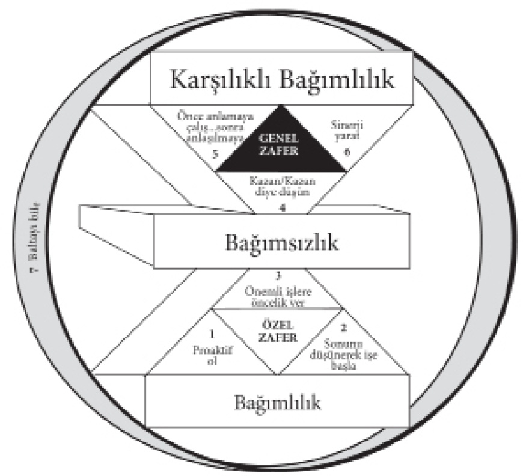
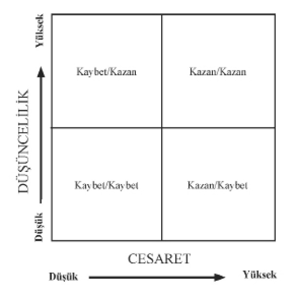
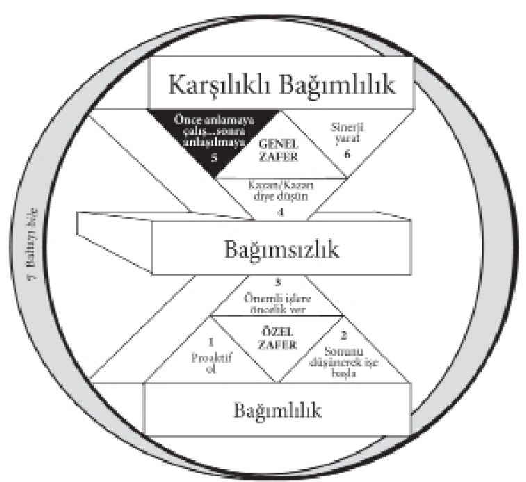
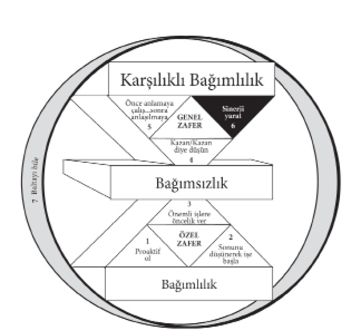
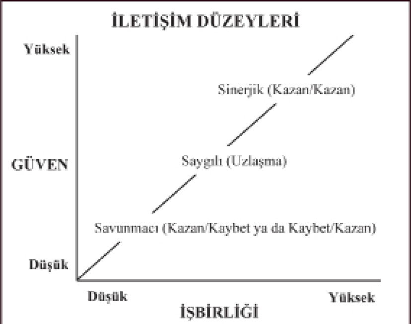
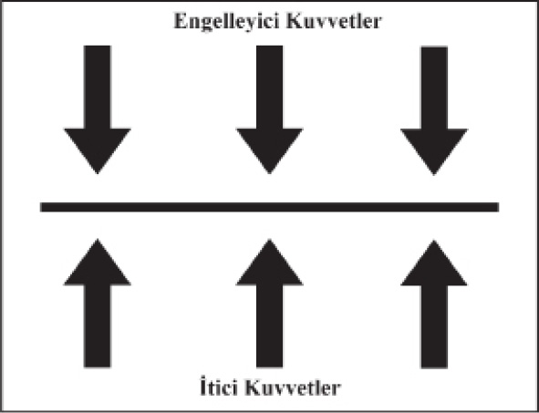

Üçüncü Bölüm - GENEL ZAFER

KARŞILIKLI BAĞIMLILIK - PARADİGMALARI
Güven yoksa dostluk olmaz,
kişisel bütünlük yoksa güven de olmaz.
SAMUEL JOHNSON
Genel Zafer alanına girmeden önce şunu hatırlamalıyız: Etkili bir karşılıklı bağımlılık, sadece gerçek bağımsızlık temeli üzerine kurulabilir. Özel Zafer, Genel Zafer’den önce gelir. Cebir de, hesaptan önce.
Eskiden nerede olduğumuzu ve gideceğimiz yere göre şimdi hangi noktada bulunduğumuzu anlamak için geriye bakarak araziyi incelerken, açıkça şunu görürüz: Seçtiğimiz yoldan gelmemiş olsaydık, bulunduğumuz yere erişemezdik. Burada başka yollar yok, kestirmeler de. Yere paraşütle inmek de olanaksız. Önümüzdeki arazi, bunu deneyen insanların kopmuş ilişkilerinden kalan parçalarla dolu. Bu insanlar söz konusu ilişkileri sürdürecek olgunluğa ve karakter gücüne sahip olmaksızın etkili bağlantılar kurmaya çalışmışlar.
Ama bunu yapamazsınız. O yoldan geçmeniz gerekir. Kendinizle mücadelenizde başarının bedelini ödemedikçe, başkalarıyla ilişkinizde başarılı olamazsınız.
Birkaç yıl önce Oregon kıyısında bir seminer verirken, birisi yanıma gelerek, “Biliyor musunuz Stephen, aslında bu seminerlere gelmekten hiç hoşlanmıyorum,” dedi. Bu sözleri ilgimi çekti.
“Buradaki diğer insanlara baksanıza,” diye devam etti. Şu güzel kıyıya, denize ve bütün olup bitenlere bir bakın. Bense oturup, karımın bu gece beni telefonda nasıl sorguya çekeceğini düşünerek endişelenmekten başka bir şey yapamıyorum.
“Evden her ayrılışımda beni iyice sıkıştırıyor. Kahvaltımı nerede etmişim? Orada başka kim varmış? Bütün sabah, toplantılara katılmış mıyım? Toplantılara öğle yemeği için ne zaman ara vermişiz? Öğleden sonra nasıl vakit geçirmişim? Akşam eğlenmek için ne yapmışım? Yanımda kim varmış? Neden söz etmişiz?
“Bilmek istediği, ama hiç sormadığı şeyse, söylediklerimi doğrulamak için kimi arayabileceği. Ben yanında değilken, yaptığım her şeyi sorgulayarak dırdır edip duruyor. Artık dayanılmaz bir hal aldı. Deneyimin tadını çıkaramaz oldum.”
Adam gerçekten üzgün görünüyordu. Onunla bir süre konuştuk. Sonra çok ilginç bir şey söyledi. Biraz da mahcup bir tavırla, “Karım ne soracağını biliyor sanırım...” dedi. “Onunla bu tür bir seminerde karşılaşmıştık... O sırada ben başka biriyle evliydim!”
Bu sözlerin anlamını düşündüm. Sonra da, “‘Anlık çözüm’lerin peşindesiniz, değil mi?” diye sordum.
“Ne demek istiyorsunuz?”
“Sanırım elinize bir burgu alıp karınızın kafasını açmak ve davranışlarını değiştirmek için bağlantıları yeniden kurmak istiyorsunuz, öyle mi?”
“Karımın değişmesini elbette istiyorum!” diye bağırdı. “Beni böyle durmadan sorguya çekmesi hiç doğru değil.”
“Dostum,” dedim; “davranışlarınızla başınıza açtığınız sorunlardan konuşarak kurtulamazsınız.”
Burada çok çarpıcı ve çok temel bir paradigma değişimiyle karşı karşıyayız. Toplumsal etkileşimlerinizi kişilik teknikleri ve becerileriyle kolaylaştırmaya çalışabilirsiniz, ama süreç içinde, o yaşamsal kişilik temelini güdükleştirirsiniz. Kökler olmadan meyve alamazsınız. Bu, sıralama ilkesidir: Özel Zafer, Genel Zafer’den önce gelir. Kendine egemen olmak ve kendini disipline sokmak, başkalarıyla iyi ilişkiler kurmanın temelidir.
Bazıları, başkalarını sevebilmek için önce kendinizi sevmeniz gerektiğini söyler. Bence bu değerli bir düşüncedir. Ancak kendinizi tanımazsanız, kontrol etmezseniz, kendinize egemen olmazsanız, kendinizi sevmeniz de çok zor olur; bunu ancak kısa süreli, yapay ve yüzeysel bir biçimde yapabilirsiniz.
Gerçek özsaygı kendine egemen olmaktan, gerçek bağımsızlıktan gelir. Bu da 1., 2. ve 3. Alışkanlıkların odak noktasıdır. Özgürlük bir başarıdır. Karşılıklı bağımlılık ise ancak bağımsız insanların yapabilecekleri bir seçimdir. Gerçek bağımsızlığa ulaşmak istemedikçe, insan ilişkileri becerilerini geliştirmeye çalışmak gülünç olur. Bunu deneyebiliriz. Hatta her şey yolundayken bir dereceye kadar başarılı da oluruz. Ama zor anlar geldiğinde –ki mutlaka gelecektir– her şeyi bir arada tutacak temelden yoksun olduğumuz anlaşılır.
Herhangi bir ilişkiye kattığımız en önemli unsur, ne dediğimiz ya da ne yaptığımız değil, ne olduğumuzdur. Sözlerimizle davranışlarımızın kaynağı kendi özümüz (Karakter Etiği) değil de, yüzeysel insan ilişkileri teknikleri (Kişilik Etiği) ise, karşımızdakiler bu düzenbazlığı sezeceklerdir. O zaman etkili bir karşılıklı bağımlılık için gerekli temeli yaratıp sürdürmeyi başaramayız.
İnsan ilişkilerinde gerçekten bir fark yaratan teknik ve beceriler, tam anlamıyla bağımsız bir karakterden adeta doğal bir biçimde yayılanlardır. Bu nedenle bir ilişki kurmaya başlamanın yeri içimizdir, Etki Alanımızdır, kendi karakterimizdir. Bağımsız –proaktif, merkezinde doğru ilkeler bulunan, değer güdümlü ve hayatımızdaki önceliklerin etrafında kişisel bütünlükle örgütlenip uygulamaya geçebilen– biri haline gelirken, karşılıklı bağımlı –başkalarıyla zengin, kalıcı, son derece üretken ilişkiler kurabilen– biri olmayı da seçebiliriz.
Önümüzdeki araziye bakarken, yepyeni bir boyuta girdiğimizi görürüz. Karşılıklı bağımlılık derin, zengin, anlamlı ilişkiler için, katlanarak artan üretkenlik için, hizmet etmek, katkıda bulunmak, öğrenmek ve gelişmek için dünyalar dolusu olanak sağlar. Ancak en derin acıyı, en büyük düş kırıklığını, mutluluk ve başarının önünü tıkayan en büyük engelleri de burada hissederiz. Şiddetli olduğu için de o acıyı keskin bir biçimde duyarız.
Genelde kişisel yaşamımızda vizyon, liderlik ya da yönetim eksikliğinin kronik acısıyla yıllarca yaşayabiliriz. Açıklanamayan bir tedirginlik ve rahatsızlık duyarız. Arada sırada, acıyı hiç olmazsa bir süreliğine gidermek amacıyla çareler bulmaya çalışırız. Acı kronik olduğu için ona alışırız. Onunla birlikte yaşamayı öğreniriz.
Başkalarıyla ilişkilerimizde sorunlar çıktığında ise, şiddetli acıyı derinden hissederiz. Çoğunlukla oldukça yoğundur ve geçmesini isteriz.
İşte o zaman belirtileri anlık çözümler ve tekniklerle –yani, Kişilik Etiği’nin yara bantlarıyla– tedavi etmeye çalışırız. Bu şiddetli acının daha derindeki kronik bir sorundan kaynaklandığını anlamayız. Belirtileri tedavi etmekten vazgeçip sorunu tedavi etmeye başlayana kadar da, çabalarımız yalnızca ters sonuçlar doğurur. Ancak kronik acıyı daha fazla gizlemeyi başarırız.
Şimdi, başkalarıyla etkili ilişkilerimiz üzerinde düşünürken, daha önce yaptığımız etkililik tanımına dönelim. Bunun Ü/ÜY dengesi; kaz ve altın yumurta masalındaki temel kavram olduğunu söylemiştik.
Karşılıklı bağımlı bir durumda, altın yumurtalar etkililiktir, inanılmaz sinerjidir, başkalarıyla açık iletişimin ve olumlu etkileşimin yarattığı sonuçlardır. Yumurtaları düzenli bir biçimde elde etmek için de, kaza iyi bakmamız gerekir. O sonuçları gerçekleştirecek ilişkileri yaratmamız ve önemsememiz gerekir.
Bu nedenle, gözetleme yerimizden inip 4., 5. ve 6. Alışkanlıklara geçmeden önce size, ilişkileri ve karşılıklı bağımlı gerçeklikteki Ü/ÜY Dengesini çok güçlü bir biçimde tanımladığına inandığım bir benzetmeyi açıklamak istiyorum.
DUYGUSAL BANKA HESABI
Parasal bir banka hesabının ne olduğunu hepimiz biliriz. Oraya yatırım yapar ve birikim oluştururuz. Gerektiği zaman da hesaptan çekeriz. Duygusal Banka Hesabı, bir ilişki içindeki güven oranını betimleyen bir benzetmedir. Başka bir insanın yanında kendinizi emniyette hissetmenizdir.
Kibarlık, incelik, dürüstlük ve size verdiğim sözlere bağlı kalmak yoluyla Duygusal Banka Hesabı’na yatırım yaparsam, bir birikim yaratmış olurum. Sizin bana olan güveniniz artar, ben de gerektiği zaman bu güvenden yararlanırım. Hatalar da yapabilirim; ama o güven düzeyi, o duygusal birikim bunu telafi eder. İletişimim açık seçik olmayabilir, ama siz yine de ne demek istediğimi anlarsınız. Bir sözcük yüzünden beni suçlamazsınız. Güven hesabı dolgun olduğunda, iletişim rahat, çabuk ve etkilidir.
Ama ben terbiyesizce, saygısızca davranmayı, sizi hiçe saymayı, aşırı tepki göstermeyi, sizi ihmal etmeyi, güveninize ihanet etmeyi, sizi tehdit etmeyi ya da hayatınızda küçük teneke tanrı rolü oynamayı alışkanlık haline getirmişsem, sonunda Duygusal Banka Hesabımda bulunandan fazlasını çekmiş olurum. Güven düzeyi iyice alçalır. O zaman ne kadar esnekliğim kalır?
Hiç kalmaz! Mayın tarlalarında yürüyor olurum. Söyleyeceğim her şeye dikkat etmem gerekir. Her lafımı tartarım. Sinir bozucu bir durumdur bu. Sağa sola notlar yollarım. Arkamı kollarım, politika yaparım. Birçok kurum bu tür insanlarla doludur. Birçok aile ve evlilik de öyle.
Büyük bir güven birikimi ve sürekli yatırımla beslenmemişse, evlilik bozulur. Kendiliğinden doğan yoğun anlayış ve iletişim yerine, iki kişinin oldukça saygılı ve hoşgörülü bir biçimde bağımsızca yaşamaya çalıştığı bir uzlaşma durumu çıkar ortaya. İlişki daha da yozlaşarak düşmanlığa ve savunmaya dönüşebilir. “Savaş ya da kaç” tepkisi atışmalara, çarpılan kapılara, konuşmamaya, duygularını içine atmaya ve kendi kendine acımaya yol açar. Sonunda evde soğuk savaş ilan edilebilir. Bu tür bir evlilik sadece çocuklar, cinsel ihtiyaçlar, toplum baskısı ya da imajı koruma isteği yüzünden sürdürülür. Ya da her şey mahkeme salonunda açıkça savaşılarak sona erebilir. İnsanlar eski eşlerinin günahlarını durmadan açığa vururken, egoyu yıpratan acı hukuk savaşları yıllarca sürebilir.
Oysa evlilik, yeryüzünde iki insan arasında olabilecek en mahrem, potansiyel olarak en zengin, keyifli, doyurucu ve üretken ilişkidir. Ü/ÜY deniz feneri oradadır; ya ona çarpıp paramparça oluruz, ya da ışığından yararlanıp yolumuzu buluruz.
Evlilik gibi en istikrarlı ilişkilerimiz, en istikrarlı yatırımı gerektirir. Süregelen beklentiler yüzünden eski yatırımlar uçup gider. Yıllardır görmediğiniz eski bir lise arkadaşınızla ansızın karşılaştığınız zaman dostluğunuza kaldığınız yerden devam edebilirsiniz, çünkü eski yatırımlar korunmuştur. Ancak düzenli bir biçimde görüştüğünüz insanlarla olan hesabınıza daha istikrarlı yatırımlar yapmanız gerekir. Bazen günlük etkileşimlerinizde, ya da insanların sizinle ilgili farkına bile varmadığınız algıları konusunda, hesabınızdan otomatik olarak bir miktar çekersiniz. Bu, özellikle evdeki yeniyetmeler için geçerlidir.
Diyelim ki, yetişme çağında bir oğlunuz var ve onunla yaptığınız normal konuşma şöyle: “Odanı temizle. Gömleğinin düğmelerini ilikle. Radyoyu kapat. Git saçını kestir. Çöp kutusunu dışarı bırakmayı da unutma!” Bir süre sonra çekilen meblağlar, yatırılanları iyice aşar.
Şimdi diyelim ki, oğlunuz bütün yaşamını etkileyecek bazı önemli kararlar vermeye çalışıyor. Ancak güven düzeyi o denli düşük, iletişim kanalları o denli kapalı, mekanik ve yetersiz ki, sizin öğütlerinize açık değil. Ona yardımcı olacak bilgi ve sağduyuya sahip olabilirsiniz, ama hesabınız bakiyesiz olduğu için, oğlunuz sonunda kararlarını kısa vadeli bir duygusal bakış açısıyla verecektir; bu ise uzun vadede pek çok olumsuz sonuca yol açabilir.
Bu hassas konularda iletişim kurmak için olumlu bir yatırıma ihtiyacınız var. Ne yapacaksınız?
İlişkiye yatırım yapmaya başlarsanız ne olur? Belki oğlunuza biraz sevecen davranmak için önünüze bir fırsat çıkar. Örneğin, ilgi duyuyorsa eve kay-kaylarla ilgili bir dergi getirirsiniz, ya da bir proje üzerinde çalışırken yanına gidip yardım önerirsiniz. Belki de onu sinemaya davet edebilir, ya da dondurma yemeye götürürsünüz. Herhalde yapabileceğiniz en önemli yatırım, bir yargıya varmadan, nutuk atmadan ya da söylediklerine kendi yaşam öykünüzü katmadan onu dinlemek olacaktır. Onu yalnızca dinleyip anlamaya çalışırsınız. Ona duyduğunuz ilgiyi, kendisini bir insan olarak kabul ettiğinizi hissetmesini sağlarsınız.
Başlangıçta bütün bunlara karşılık vermeyebilir. Hatta kuşkuya bile kapılabilir. “Babam şimdi neyin peşinde? Annem bu kez benim üstümde hangi tekniği deniyor?” Ancak o gerçek yatırımlar devam ettikçe, birikim oluşmaya başlar. Hesaptaki açık da azalır.
Anlık çözümlerin bir seraptan ibaret olduğunu unutmayın. İlişkileri kurmak ve onarmak zaman alır. Oğlunuzun belirgin tepkisizliği ya da nankör görünüşü yüzünden sabırsızlığa kapılırsanız, bankadaki hesabınızdan pek yüklü bir meblağ çekmiş olur ve yaptığınız bütün iyi şeyleri bir anda yıkarsınız. “Senin için bunca şey yaptık, özverilerde bulunduk! Nasıl bu kadar nankör olabiliyorsun? Sana iyi davranmaya çalışıyoruz, sense böyle yapıyorsun! Hayret doğrusu!”
Sabırsızlanmamak zordur. Proaktif olmak, dikkatinizi Etki Alanınıza vermek, büyüyen şeyleri beslemek ve “köklerin ne durumda olduklarını görmek için çiçekleri koparmamak” karakter ister.
Aslında anlık çözüm yoktur. İlişkileri kurmak ve onarmak uzun vadeli yatırımlardır.
ALTI ÖNEMLİ YATIRIM
İzninizle size Duygusal Banka Hesabı’nı oluşturan altı önemli yatırım önereceğim.
Bireyi Anlamak
Bir insanı gerçekten anlamaya çalışmak belki de yapabileceğiniz en önemli yatırımdır; diğer tüm yatırımların da anahtarıdır. Bir kişiyi anlayıncaya kadar, onun için neyin bir yatırım sayılacağını bilemezsiniz. Sizin için yatırım sayılacak bir şey –durumu konuşmak için yürüyüşe çıkmak, birlikte dondurma yemeye gitmek, ortak bir proje üzerinde çalışmak– başka biri tarafından hiç de öyle görülmeyebilir. Hatta bu, o kişinin derin çıkarları ya da ihtiyaçlarıyla ilgili değilse, hesaptan çekme gibi algılanabilir.
Bir kişinin misyonu, başka biri için önemsiz ayrıntılardan ibarettir. Yatırım yapmanız için, diğer kişinin önem verdiği bir şey, sizin için de önemli olmalıdır. Son derece öncelikli bir proje üzerinde çalışırken altı yaşındaki oğlunuz size önemsiz gelen bir şey yüzünden işinizi engellemeye kalkışabilir. Ama bu belki de onun açısından çok önemli bir konudur. Onun değer verdiği şeyi kabullenip kendinizi ona adamanız için 2. Alışkanlık; programınızı ona göre önemli olan bir şey uğruna feda etmeniz için de 3. Alışkanlık gereklidir. Söylemek istediği şeye verdiği değeri kabul ederek, onu anladığınızı gösterirsiniz. Bu da büyük bir yatırımdır.
Bir arkadaşımın oğlu beyzbola çok düşkündü. Arkadaşım ise bu spora hiç ilgi duymuyordu. Ancak bir yaz mevsimi, oğlunu bütün birinci lig takımlarının birer maçına götürdü. Bu tur altı hafta sürdü, hayli pahalıya mal oldu, ama ilişkilerinde güçlü bir bağ oluşturdu.
Arkadaşım geri döndüğü zaman ona, “Beyzbolu bu kadar çok mu seviyorsun?” diye sordular.
“Hayır,” diye yanıtladı. “Ama oğlumu bu kadar çok seviyorum.”
Üniversitede profesör olan bir başka arkadaşımın, yeniyetme oğluyla berbat bir ilişkisi vardı. Adamın bütün yaşamı temelde akademikti. Oğlunun, kafasını geliştirmek yerine elleriyle çalışarak yaşamını ziyan ettiğini düşünüyordu. Dolayısıyla da çocuğu durmadan zorluyordu. Sonra pişman oluyor ve yatırım yapmaya çalışıyordu, ama bütün bunların hiç yararı olmuyordu. Oğlu bu davranışları reddetme, kıyaslama ve yargılamanın yeni biçimleri olarak gördüğü için hesaptaki birikim gitgide eriyordu. İlişkileri tatsızlaşıyor, bu ise babanın yüreğini parçalıyordu.
Bir gün onunla şu ilkeyi paylaştım: Karşındaki kişinin önem verdiği bir şey, senin için o kişi kadar önemli olmalıdır. Arkadaşım bu ilkeyi yürekten benimsedi. Oğluna, evlerinin etrafında minyatür bir Çin Seddi kurma görevini verdi. Bu, zaman alacak bir işti. Baba oğul bir buçuk yıl yan yana çalıştılar.
Onları birbirine bağlayan bu deneyim sayesinde, oğlu yaşamındaki o evreyi aştı ve zihnini geliştirme isteğine kapıldı. Ama asıl yarar ilişkinin gelişmesindeydi. Bu, üzülecek bir şey olmaktan çıkıp hem babaya, hem de oğula mutluluk ve güç veren bir kaynağa dönüştü.
Başkalarının istediğini ya da ihtiyaç duyduğunu düşündüğümüz şeyleri, kendi yaşam öykümüzden yola çıkarak belirleme eğilimi gösteririz. Böylelikle, başkalarının davranışlarına kendi amaçlarımızı yansıtırız. Bir yatırımın ne olduğunu, hem şimdiki, hem de aynı yaşta ya da aynı yaşam dönemecindeyken sahip olduğumuz ihtiyaç ve istekleri temel alarak yorumlarız. Karşımızdakiler çabamızı bir yatırım olarak yorumlamadıkları zaman da, bunu iyi niyetli çabamızın reddi olarak algılar ve vazgeçeriz.
Altın Kural şudur: “Başkalarına, size nasıl davranmalarını istiyorsanız öyle davranın.” Yüzeysel olarak bu, sizin için yapılmasını istediğiniz şeyleri onlar için yapmanız anlamına gelebilir. Ama bence temelde bu sözlerin anlamı, onları birey olarak sizi anlamalarını istediğiniz gibi, derinlemesine anlamak, sonra da onlara bu anlayışa göre davranmaktır. Başarılı bir babanın, çocukların yetiştirilmesi konusunda söylediği gibi, “Onlara değişik biçimlerde davranarak hepsine aynı davranışı gösterin.”
Küçük Şeylerle İlgilenmek
Küçük incelikler ve nazik davranışlar çok önemlidir. Küçük nezaketsizlikler, küçük kabalıklar, küçük saygısızlıklar ise bankadaki hesaptan büyük meblağlar çekilmesine yol açar. İlişkilerde küçük şeyler büyük şeylerdir.
Yıllar önce iki oğlumla geçirdiğim bir akşamı hatırlıyorum. Bu, iyi düşünülmüş bir baba-oğul eğlencesiydi. Egzersizler, güreşler, sosisli sandviçler, portakal suları ve bir de film vardı programda; yani her şey.
Filmin ortasında, o sırada dört yaşında olan oğlum Sean koltuğunda uyuyakaldı. Altı yaşında olan ağabeyi Stephen ise uyanık kalıp, filmi sonuna benimle birlikte seyretti. Film bittiğinde, Sean’u kucağıma alarak arabaya götürdüm ve arka kanepeye yatırdım. Soğuk bir geceydi. Bu yüzden paltomu çıkararak usulca üzerine örttüm.
Eve vardığımızda Sean’u hemen içeri taşıyarak yatağına yatırdım. Stephen pijamasını giyip dişlerini fırçaladıktan sonra, birlikte geçirdiğimiz geceden söz etmek için onun yanına uzandım.
“Nasıldı, hoşuna gitti mi Stephen?”
“İyiydi,” diye cevap verdi.
“Eğlendin mi?”
“Evet.”
“En çok ne hoşuna gitti?”
“Bilmiyorum. Tramplen herhalde.”
“Harikaydı değil mi? Havada öyle taklalar atmak, numaralar yapmak!”
Oğlum bana pek cevap vermiyordu. Daha çok ben konuşuyordum. Bir yandan da Stephen’ın neden gevezelik etmediğini düşünüyordum. Heyecanlı şeyler olduğu zaman durmadan konuşurdu. Biraz düş kırıklığına uğramıştım. Bir sorun olduğunu seziyordum. Eve dönerken de, yatmaya hazırlanırken de pek sessizdi.
Stephen birdenbire yatakta duvara doğru döndü. Bunun nedenini merak ederek doğruldum ve gözlerinin yaşlarla dolu olduğunu gördüm.
“Ne oldu yavrum? Ne var?”
Oğlum tekrar bana döndü. Ağladığı ve dudaklarıyla çenesi titrediği için biraz utandığını hissettim.
“Babacığım, ben üşüseydim, paltonu benim üzerime de örter miydin?”
Birlikte geçirdiğimiz o özel gecede onun için en önemli şey küçük, sevecen bir davranış; yani bir an için küçük kardeşine bilinçsizce gösterdiğim sevgi olmuştu.
Bu deneyim o sırada benim için son derece güçlü bir kişisel ders olmuştu, şimdi bile öyle. İnsanlar içten içe çok yumuşak, çok duyarlıdırlar. Yaş ya da deneyimlerin bunu değiştirdiğine de inanmıyorum. En sertleşmiş, nasırlaşmış dış tabakanın altında, gönlün ince ve yumuşak duyguları yatar.
Verilen Sözleri Tutmak
Verilen bir sözü tutmak büyük bir yatırımdır; birisini kırmak ise, önemli bir meblağı geri çekmektir. Aslında, birine önemli bir konuda söz verdikten sonra bunu yerine getirmemek kadar banka hesabınızı küçültebilecek bir davranış herhalde yoktur. Bir daha söz verildiği zaman, karşı taraf buna inanmaz. İnsanlar, vaatleri umutlarının odak noktasına dönüştürme eğilimindedir. Özellikle temel geçimlerini ilgilendiren vaatleri.
Ben bir baba olarak, bağlı kalamayacağım bir söz vermemeyi felsefe edinmeye çalıştım. Bu nedenle çok dikkat ederek ve ender olarak söz veririm. Beklenmedik bir olayın sözümü tutmamı engellememesi için de çeşitli ihtimalleri olabildiğince hesaba katmaya çalışırım.
Bütün çabalarıma rağmen, arada bir ortaya beklenmedik bir şey çıkar ve verdiğim sözü tutmamın akıllıca ya da mümkün olmayacağı bir durum yaratır. Ama ben o söze değer veririm. Ya her şeye rağmen onu yerine getiririm, ya da söz verdiğim kişiye durumu ayrıntılarıyla anlatarak sözümü geri almam için izin vermesini isterim.
Bence verdiğiniz söze her zaman bağlı kalmayı alışkanlık edinirseniz, çocuğunuzla aranızdaki anlayış boşluklarını kapatacak güven köprüleri kurarsınız. Sonra, çocuğunuz sizin istemediğiniz bir şeyi yapmaya kalkıştığında ve olgun bir insan olarak onun fark edemediği sonuçları önceden gördüğünüzde, “Evlat, eğer bunu yaparsan, inan bana sonucu şöyle olur,” diyebilirsiniz ona. Çocuk sizin sözünüze güvenmeyi alışkanlık edinmişse, tavsiyenize uyacaktır.
Beklentileri Netleştirmek
Patronunuzla, iş tanımınıza açıklık getirmenin kimin rolü olduğuna ilişkin farklı varsayımlarınız olması durumunda karşılaşacağınız zorluğu bir düşünün.
Siz, “İş tanımım ne zaman bana verilecek?” diye sorabilirsiniz.
Patronunuz ise, “Üzerinde tartışabilmemiz için senin bana bir tanım getirmeni bekliyordum,” diye yanıtlayabilir.
“İşimi tanımlamanın sizin rolünüz olduğunu sanıyordum.”
“Bu kesinlikle benim rolüm değil. Hatırlamıyor musun? Daha en başından, işini nasıl yapacağının büyük ölçüde sana bağlı olduğunu söylemiştim.”
“Ben işimin kalitesinin bana bağlı olduğunu kastettiğinizi sanmıştım. Aslında işimin ne olduğunu bile bilmiyorum.”
Hedefler konusunda da, belirtilmemiş beklentiler iletişim ve güvene zarar verir.
“Benden istediğinizi tamı tamına yaptım; işte raporum.”
“Ben rapor istemiyorum. Hedef, sorunu çözmekti; analiz edip üzerinde rapor yazmak değil.”
“Ben hedefin, işi başka birine devredebilmek için soruna bir çözüm yolu bulunması olduğunu sanıyordum.”
Kaç kez bu tür konuşmalara katıldık?
“Siz dediniz ki...”
“Hayır, yanılıyorsun! Benim dediğim...”
“Hayır, öyle demediniz! Hiçbir zaman ne yapmam gerektiğini söylemediniz...”
“Evet, söyledim. Hem de açıkça dedim ki...”
“Bunun sözünü bile etmediniz...”
“Ama anlaşmamız şöyleydi...”
İlişkilerde karşılaşılan neredeyse tüm zorlukların nedeni, roller ve hedefler konusunda birbirine zıt ya da belirsiz beklentilerdir. Söz konusu mesele ister kimin hangi işi yapacağı, ister kızınıza odasını temizlemesini söylerken onunla nasıl iletişim kuracağınız, ya da kimin balıklara yem verip çöpü dışarıya çıkaracağı olsun, belirsiz beklentilerin yanlış anlamalara, düş kırıklıklarına ve güvenin kaybolmasına yol açacağından emin olabilirsiniz.
Beklentilerden birçoğunun üstü örtülüdür. Açıkça belirtilmemiş ya da bildirilmemiştir, ama insanlar yine de bunları belirli bir duruma yansıtırlar. Evlilikte, örneğin, kadının ve erkeğin, karı-koca rollerinde birbirlerinden üstü örtülü beklentileri vardır. Bu beklentiler açıkça konuşulmamış, hatta bazen farkına bile varılmamış olsa da, onların yerine getirilmesi ilişki hesabına büyük tutarlar yatırılmasına, çiğnenmesi ise hesabın erimesine neden olur.
İşte bu nedenle, yeni bir durumla karşılaştığınız zaman bütün beklentilerinizi açıklamanız çok önemlidir. İnsanlar birbirini bu beklentilere göre yargılamaya başlar. Temel beklentilerinin çiğnendiğini düşünüyorlarsa, güven birikimi azalır. Beklentilerimizin çok belirgin olduğunu ve başkaları tarafından açıkça anlaşılıp paylaşıldığını varsayarak, pek çok olumsuz durum yaratırız.
Yatırım, beklentileri daha en başından açık ve net hale getirmektir. Bunun için ilk başlarda zaman ve çaba harcanması gerekir, ama sonradan büyük miktarda zaman ve çabadan tasarruf edilmesini sağlar. Beklentiler açık olmadığı ve paylaşılmadığı zaman, insanlar işe duygularını karıştırmaya başlar ve basit anlaşmazlıklar şiddetlenir. Bu ise kişilik çatışmalarına ve iletişim bozukluklarına neden olur.
Bazen beklentileri netleştirmek büyük bir cesaret ister. Farklılıklar yokmuş gibi davranıp her şeyin yoluna gireceğini ummak, farklılıklarla yüzleşmek ve iki tarafın da kabul edebileceği bir dizi beklentiye ulaşmak için birlikte çalışmaktan daha kolay görünür.
Kişisel Bütünlük Sergilemek
Kişisel bütünlük güven yaratır ve pek çok farklı yatırımın temelidir.
Kişisel bütünlükten yoksun olmak, güçlü güven hesapları yaratmak için gösterilen diğer tüm çabaları boşa çıkarabilir. İnsanlar anlamaya, küçük şeyleri hatırlamaya, sözlerini tutmaya, beklentileri netleştirip yerine getirmeye çalışabilir, ama içten içe ikiyüzlü olduklarında güven birikimi yaratamazlar.
Kişisel bütünlük dürüstlüğü içerir, ama ondan öte bir şeydir. Dürüstlük, doğruyu söylemek; bir başka deyişle, sözlerimizi gerçeğe uydurmaktır. Kişisel bütünlük ise, gerçeği sözlerimize uydurmak; bir başka deyişle, verdiğimiz sözleri tutmak ve beklentileri yerine getirmektir. Bu, öncelikle kendine, ama aynı zamanda hayata karşı da kişisel bütünlük sergilemeyi gerektirir.
Kişisel bütünlük sergilemenin en önemli yollarından biri, yanınızda olmayan kişilerin arkasından konuşmamaktır. Bunu yaparken yanımızda olanlara da güven veririz. Orada olmayanları savunurken, olanların güvenini koruruz.
Diyelim ki sizinle baş başa konuşuyoruz. Amirimizi, yanımızda bulunsaydı cesaret edemeyeceğimiz bir biçimde eleştiriyoruz. Şimdi, birbirimize darıldığımız takdirde ne olur? Zayıflıklarınızı bir başkasının önünde açığa vuracağımı bilirsiniz. Çünkü amirimizin arkasından birlikte yaptığımız şey buydu. Benim huyumu öğrendiniz. Yüzünüze tatlı sözler söyler, sonra da arkanızdan sizi çekiştiririm. Bunu yaptığıma tanık oldunuz.
İşte ikiyüzlülüğün özü budur. Ama sizinle aramdaki hesapta bir güven birikimi oluşmasını sağlayabilir mi?
Öte yandan, diyelim ki siz amirimizi eleştirmeye başlıyorsunuz, ben de size eleştirilerinizden bazılarının içeriğini kabul ettiğimi söylüyorum ve ikimizin ona giderek, işlerin nasıl düzelebileceğini etkili bir biçimde açıklamamızı öneriyorum. O zaman, biri sizin arkanızdan konuştuğunda ne yapacağımı bilirsiniz, değil mi?
Bir başka örnek olarak, diyelim ki sizinle ilişki kurmaya çalışırken, birisinin benimle paylaştığı bir sırrı açıklıyorum. “Aslında bunu sana söylememem gerekir, ama arkadaşım olduğuna göre...” diyorum. Bir başkasına bu şekilde ihanet etmem, sizinle aramda bir güven hesabı mı oluşturur? Yoksa bana gizlice söylediğiniz şeyleri başkalarına açıklayıp açıklamadığımı düşünmeye mi başlarsınız?
Bu tür ikiyüzlülük, birlikte olduğunuz kişinin hesabına yapılan bir yatırım gibi görünebilir; oysa aslında hesabı küçültür, çünkü kişisel bütünlükten yoksun olduğunu gösterirsiniz. Belki birini çekiştirmenin ya da bir sırrı paylaşmanın verdiği o geçici zevkin altın yumurtasını alırsınız. Ama o arada kazı boğar, sürekli zevk verecek bir ilişkiyi de zayıflatırsınız.
Karşılıklı bağımlı bir gerçeklikte kişisel bütünlük kısaca şudur: Herkese aynı ilkeler dizisine göre davranırsınız. Siz bunu yaparken, insanlar da size güvenmeye başlar. Bu tür bir bütünlüğün gerektirdiği dürüstçe yüzleşme deneyimlerini başlangıçta takdir etmeyebilirler. Yüzleşmek bir hayli cesaret ister. Çoğu kişi ise en kolay yolu seçer; yani, çekiştirip eleştirir, sırlara ihanet eder ya da başkalarının arkasından yapılan dedikodulara katılır. Ama uzun vadede, insanlar kendilerine karşı dürüst, açık ve nazik olursanız size güven ve saygı duyarlar. Yüzleştiğinize göre onları umursuyorsunuz demektir. Güvenilmek sevilmekten üstündür derler. Bense uzun vadede, güvenilmenin aynı zamanda sevilmek anlamına geleceği kanısındayım.
Oğlum Joshua küçükken bana sık sık kendimi derinden incelememe neden olan sorular sorardı. Birine aşırı tepki gösterdiğim, ya da biraz sabırsızca veya sertçe davrandığım zaman, sadece gözlerimin içine bakar ve bana, “Baba, beni seviyor musun?” derdi. Joshua çok dürüst ve savunmasız, ilişkimiz de çok sağlamdı. Başka birine karşı yaşamın temel ilkelerden birini çiğnediğimi düşündüğünde, aynı şeyi kendisine karşı da yapıp yapmayacağımı merak ederdi.
Hem öğretmen hem de baba olarak, doksan dokuzun anahtarının bir kişi –özellikle de çoğunluğun sabrını ve iyi niyetini sınamakta olan tek bir kişi– olduğunu keşfettim. Bir çocuğun, bir öğrencinin sevgi ve disiplinidir başkalarına duyulan sevgiyi yansıtan. Birine nasıl davrandığınızdır doksan dokuzuna nasıl baktığınızı açığa çıkaran, çünkü herkes sonuçta bir bütündür.
Kişisel bütünlük ayrıca aldatıcı, hile kokan ya da insan onuruna yakışmayacak herhangi bir iletişimden kaçınmak anlamına da gelir. Bir tanımlamaya göre, “Yalan, herhangi bir aldatma amaçlı iletişimdir.” İster sözlerimiz, ister davranışlarımızla iletişim kuralım, kişisel bütünlüğe sahipsek, amacımız aldatmak olmaz.
Hesaptan Çektiğiniz Zaman İçtenlikle Özür Dilemek
Duygusal Banka Hesabı’ndan bir meblağ çektiğimiz zaman özür dilememiz gerekir; hem de içtenlikle. Büyük yatırımlar içten sözcüklerle yapılır.
“Ben haksızdım.”
“Kabalık ettim.”
“Sana saygı göstermedim.”
“Onurunla oynadım, çok ama çok üzgünüm.”
“Seni dostlarının önünde utandırdım. Bunu yapmaya hakkım yoktu. Bir noktayı belirtmek istiyordum ama, öyle davranmamalıydım. Özür dilerim.”
Acıyarak değil de, içinden gelerek özür dilemek, müthiş bir karakter gücü ister. Kişinin içtenlikle özür dileyebilmesi için kendine hâkim olması, temel ilkeler ve değerlerin sağladığı derin bir güvenlik duygusunun bulunması gerekir.
İç güvenliği yetersiz olan insanlar bunu yapamaz. Bu onları çok savunmasız bir duruma düşürür. Özür dilemenin kendilerini yumuşak ve zayıf göstereceğini hisseder ve başkalarının bu zaaflarından yararlanmasından korkarlar. Güvenlikleri diğer insanların görüşlerine dayalıdır ve başkalarının ne düşüneceğinden endişelenirler. Ayrıca, genellikle yaptıklarının doğru olduğuna inanırlar. Kendi hatalarına bahane olarak karşı tarafın hatasını gösterirler ve kırk yılda bir özür dileseler de, bu yüzeysel bir özürdür.
Doğulu sağduyu, “Eğileceksen, iyice eğil,” der. Hıristiyan etiği ise, “Son kuruşuna kadar öde,” der. Bir yatırım olması için, özürün içten olması gerekir. Ayrıca içten olarak algılanmalıdır.
Leo Roskin’in dediği gibi: “Zalim olan zayıflardır. İncelik sadece güçlülerden beklenebilir.”
Bir akşamüstü, evdeki çalışma odamda oturmuş, sabır konusunda bir şeyler yazıyordum. Oğullarımın koridorda bir aşağı bir yukarı koşturup gürültüyle bir yerlere vurduklarını duyuyordum. Sabrımın tükenmek üzere olduğunun da farkındaydım.
Ansızın, oğlum David banyo kapısını yumruklayarak avazı çıktığı kadar bağırmaya başladı: “Bırak da gireyim! Bırak da gireyim!”
Çalışma odamdan fırlayarak ona büyük bir hiddetle, “David,” dedim. “Bütün bunların beni ne kadar rahatsız ettiğinin farkında mısın? İnsanın dikkatini toplayarak yaratıcı bir şeyler yazmaya çalışmasının ne kadar zor olduğunu biliyor musun? Şimdi odana git ve terbiyeni takınana kadar orada kal!” Oğlum bunun üzerine süklüm püklüm odasına gidip kapıyı kapattı.
Döndüğüm zaman bir başka sorun olduğunu fark ettim. Çocuklar yüz yirmi santim genişliğindeki koridorda Amerikan futbolu oynarken birinin dirseği ötekinin ağzına gelmişti. Ağzı kan içinde, koridorda yatıyordu. Kardeşine ıslak bir havlu getirmek için David’in banyoya koştuğunu öğrendim. Ama kız kardeşi Maria o sırada duş yapıyordu ve kapıyı açmamıştı.
Durumu tümüyle yanlış yorumladığımı ve aşırı tepki gösterdiğimi anladığım anda, hemen David’ten özür dilemeye gittim.
Ben kapıyı açarken oğlumun bana söylediği ilk şey, “Seni affetmeyeceğim,” oldu.
“Neden, hayatım?” diye sordum. “Açıkçası kardeşine yardım etmeye çalıştığının farkında değildim. Beni neden affetmeyeceksin?”
“Çünkü geçen hafta da aynı şeyi yaptın,” diye yanıtladı. Yani şöyle demek istiyordu: “Baba, bankadaki hesabını tükettin. Davranışınla yarattığın sorundan konuşarak kurtulamazsın.”
İçtenlikle dilenen özürler, hesaba yapılan yatırımlardır. Defalarca “içtenliksiz” diye yorumlanan özürler ise hesabı eritir. İlişkinin niteliği de bunu yansıtır.
Hata yapmak başka, bunu kabul etmemek bambaşkadır. İnsanlar zihin hatalarını, yargı hatalarını affederler. Ama gönül hatalarını, kötü niyeti, sakat dürtüleri, ilk hatanın gururla haklı çıkarılarak örtbas edilmesini kolay kolay affetmezler.
Sevgi Yasaları ve Yaşam Yasaları
Koşulsuz sevgi yatırımları yaptığımız, sevginin birincil yasalarına uyduğumuz zaman, başkalarını yaşamın birincil yasalarına uymaları için teşvik ederiz. Bir başka deyişle, başkalarını koşulsuz, kuralsız sevdiğimizde, onlara güven ve emniyet duygusu veririz. Temel değerleri, kimlikleri, bütünlükleri açısından kendilerini doğrulanmış ve onaylanmış hissetmelerine yardımcı oluruz. Doğal gelişim süreçlerini teşvik ederiz. Yaşam yasalarına –işbirliği, katkı, özdisiplin, bütünlük– uyarak yaşamalarını, içlerindeki en yüce ve en iyi yanları keşfedip bunlara sadık kalmalarını kolaylaştırırız. Onlara bizim koşullarımıza ve sınırlamalarımıza tepki göstererek değil, kendi iç komutlarına uyarak davranma özgürlüğü veririz. Bu, fazlasıyla hoşgörülü ya da yumuşak olmamız anlamına gelmez. Zaten böylesi bir tutum, hesabı küçültmek olurdu. Öğüt veririz, rica ederiz, sınırları ve sonuçları belirleriz. Ama ne olursa olsun, severiz.
Sevginin birincil yasalarını çiğnediğimizde –o armağana koşullar ve sınırlar koyduğumuzda– başkalarını yaşamın birincil yasalarını çiğnemeye teşvik ederiz. Onları, kendini savunma gereğini duydukları reaktif bir duruma getiririz. Bu durumda, “Ben, bir kişi olarak önemliyim, senden bağımsızım” düşüncesini kanıtlamaları gerektiğini hissederler.
Aslında bağımsız değildirler. Karşı-bağımlıdırlar. Bu ise bağımlılığın bir başka biçimidir ve Sürekli Olgunlaşma Modeli’nin en alt ucunda yer alır. Bu kişiler reaktif, neredeyse düşman merkezli olurlar. Kendi iç komutlarını dinleyerek onlara uymaktan çok, “hakları” nı savunmak ve bireyselliklerini kanıtlamakla ilgilenirler.
İsyan, zihnin değil, yüreğin düğümlenmesidir. Anahtarı ise yatırım yapmak, koşulsuz sevgi yatırımlarını sürdürmektir.
Bir zamanlar çok saygın bir okulda dekanlık yapan bir arkadaşım vardı*. Oğlunun da aynı okulda okuması için yıllar boyunca plan yapmış, para biriktirmişti. Ama zamanı geldiğinde çocuk onun okuluna girmeyi reddetti.
Bu durum babayı çok üzdü. O okuldan mezun olmak çocuk için büyük bir kaynak olacaktı. Üstelik, bu bir aile geleneğiydi. Üç kuşak o okulda okumuştu. Babası yalvardı, ısrar etti, konuştu. Oğlunu anlamak için onu dinlemeye de çalıştı; bu arada çocuğun fikrini değiştireceğini umuyordu.
Babanın ilettiği, koşullu sevgi mesajıydı. Çocuk bir bakıma babasının o isteğinin, bir kişi ve oğul olarak kendisine verdiği değerden ağır bastığını hissediyordu. Bu da korkunç bir tehdit oluşturuyordu. Sonuç olarak kendi kimliği ve kişisel bütünlüğü adına ve bunları silah olarak kullanarak savaştı. Gitmeme kararının dayanağı olarak direnç ve çabalarını artırdı.
Baba, gönlünden geçenleri yoğun bir biçimde inceledikten sonra bir özveride bulunmaya karar verdi. Koşullu sevgiden vazgeçecekti. Oğlunun onun isteği dışında bir şey seçebileceğini biliyordu. Yine de eşiyle birlikte, oğullarının seçimi ne olursa olsun onu koşulsuz seveceklerdi. Bu, yapılması son derecede zor bir şeydi, çünkü oğullarının eğitimi onlar için çok önemliydi. Üstelik çocuklarının doğumundan itibaren planlar yapmış ve bu uğurda çabalamışlardı.
Anneyle baba çok zor bir ‘yeniden senaryo yazma’ dönemi geçirdiler. Koşulsuz sevginin doğasını gerçekten anlamaya çalışıyorlardı. Oğullarına ne yaptıklarını ve bunun nedenlerini açıkladılar. Kararının kendisine duydukları koşulsuz sevgiyi etkilemeyeceğini dürüstçe söyleyebilecekleri bir noktaya vardıklarını anlattılar. Bunu, onu idare etmek, “hizaya sokmak” için değil, gelişim ve karakterlerinin mantıksal bir uzantısı olarak yaptılar.
Delikanlı o sırada pek karşılık vermedi. Ama annesiyle babasının o noktada öylesine koşulsuz bir sevgi paradigmaları vardı ki, vereceği yanıt kendisine karşı duygularını değiştirmeyecekti. Bir hafta sonra da, annesiyle babasına o okula gitmeyeceğini açıkladı. Bu cevaba hazırlıklıydılar ve ona koşulsuz sevgi göstermeyi sürdürdüler. Her şey yoluna girdi ve yaşam normal akışına döndü.
Kısa bir süre sonra ilginç bir şey oldu. Çocuk artık kendi tutumunu savunmak zorunda olmadığı için, kendi içinde daha derinlemesine bir araştırma yaptı ve bu eğitim deneyimini gerçekten istediğini anladı. Okula girmek için başvuruda bulundu, sonra da babasına bunu haber verdi. Babası, bir kez daha oğlunun kararını tamamen kabul ederek koşulsuz sevgi gösterdi. Arkadaşım mutluydu, ama abartılı bir mutluluk değildi bu, çünkü koşulsuz sevmeyi gerçekten öğrenmişti.
Birleşmiş Milletler’in eski Genel Sekreteri Dag Hammarskjold, bir zamanlar şu derin ve benzersiz saptamayı yapmıştı: “Kitlelerin selameti için durmadan çalışıp didinmektense, kendinizi tek bir kişiye tam anlamıyla vermeniz daha soylu bir davranıştır.”
Ben bu ifadeyi şöyle yorumluyorum: Haftada beş, altı, yedi günün sekiz, on ya da on iki saatini “oradaki” binlerce insana ve projeye adayabilir, ama yine de kendi eşimle, kendi yeniyetme oğlumla, en yakın iş arkadaşımla derin ve anlamlı bir ilişki kuramayabilirim. O tek ilişkiyi yeniden kurmak, bütün o insanlar ve amaçlar uğruna onca saat harcamanın gerektirdiğinden daha fazla karakter soyluluğu –daha fazla alçakgönüllülük, cesaret ve kuvvet– ister.
Kurumlara danışmanlık yaptığım yirmi beş yıllık sürede, o ifadenin gücü beni tekrar tekrar etkilemiştir. Kurumlardaki sorunların birçoğu en tepedeki –profesyonel bir şirkette iki ortak arasındaki, bir firmanın sahibiyle yönetim kurulu başkanı arasındaki, başkanla yardımcısı arasındaki– ilişki zorluklarından kaynaklanır. Bu sorunların göğüslenmesi ve çözümü, “oradaki” birçok proje ve insan için çalışıp didinmeyi sürdürmek için gerekenden daha fazla karakter soyluluğu ister.
Hammarskjold’un o ifadesiyle ilk kez, sağ kolum olan kişiyle aramda belirsiz beklentilerin olduğu bir kuruluşta çalışırken karşılaştım. Rol, hedef beklentileri ve değerler, özellikle de yönetim tarzıyla ilgili farklılıklarımızla yüzleşme cesaretine sahip değildim. Bu nedenle çirkin bir yüzleşmeye dönüşebilecek bir tartışmadan kaçınmak için birkaç ay uzlaşma yolunu denedim. Bu arada, ikimizin de içinde kötü duygular oluşuyordu.
Kitleleri kurtarmak için durmadan çalışıp didinmektense, kendini tek bir kişiye tam anlamıyla vermenin daha soylu bir davranış olduğunu okuduğum zaman, o ilişkiyi yeniden kurma fikri beni derinden etkiledi.
Beni bekleyen şeylere karşı bütün cesaretimi toplamam gerekiyordu, çünkü sorunları ortaya döküp derin, ortak bir anlayış ve bağlılık sağlamanın çok zor olacağını biliyordum. Görüşme öncesinde gerçekten titrediğimi anımsıyorum. Adam çok sert biri gibi görünüyordu. Kendi yöntemlerine sımsıkı bağlıydı ve kendini her zaman haklı görüyordu. Yine de onun güçlü yanlarına ve yeteneklerine ihtiyacım vardı. Yüzleşmenin ilişkiyi tehlikeye sokmasından ve sonuçta o güçlü yanları kaybetmekten korkuyordum.
Görüşmeyi zihnimde prova ettim ve sonunda, yapacaklarımla söyleyeceklerim yerine, ilkeler üzerinde durmaya karar verdim. Böylece zihinsel açıdan rahatladım ve onunla iletişim kuracak cesareti buldum.
Bir araya geldiğimizde, büyük bir hayretle onun da aynı süreçten geçtiğini ve benimle konuşmaya can attığını keşfettim. Hiç de sert değildi, kendini savunmaya kalkışmıyordu.
Gelgelelim yönetim tarzlarımız oldukça farklıydı ve bütün kuruluş bu farklılıklara tepki veriyordu. Anlaşmazlığımızın yarattığı sorunları ikimiz de kabul ettik. Birkaç görüşmeden sonra daha derin meselelerle yüzleşip onları masaya yatırmayı ve engin bir karşılıklı saygı anlayışıyla hepsini teker teker çözmeyi başardık. Birbirimizi tamamlayarak güçlü bir ekip oluşturduk. Aramızda gelişen derin kişisel sevgi de etkili biçimde birlikte çalışma yeteneğimize büyük bir katkıda bulundu.
Etkili bir iş, aile ya da evliliği yürütmek için gereken birliğin yaratılması, büyük bir kişisel güç ve cesaret ister. Kitleler adına çalışırken hiçbir teknik yönetim becerisi, ilişkilerin geliştirilmesi için gerekli olan kişisel karakter soyluluğunun yerini alamaz. Sevgi ve yaşamın birincil yasalarını çok köklü, teke tek bir düzeyde yaşarız.
Ü SORUNLARI, ÜY FIRSATLARIDIR
Bu deneyim bana karşılıklı bağımlılığın bir başka güçlü paradigmasını da öğretti. Bu, sorunları görüş biçimimizle ilgiliydi. Ben aylarca sorundan kaçınmaya çalışmış, onu sinirlerimi bozacak bir şey, bir engel olarak görmüş ve bir şekilde ortadan kalkmasını istemiştim. Ama sonuçta o sorunun kendisi, birbirini tamamlayan güçlü bir ekip olarak birlikte çalışmamızı sağlayacak derin bir ilişki kurma fırsatını yarattı.
Bence karşılıklı bağımlı bir durumda her Ü sorunu bir ÜY fırsatıdır; yani, karşılıklı bağımlı üretimi büyük ölçüde etkileyen Duygusal Banka Hesaplarını oluşturma olanağıdır.
Anne-babalar çocuklarının sorunlarını olumsuz, ağır, sinir bozucu olarak değil de, ilişki kurmak için birer fırsat olarak gördüklerinde, ebeveyn-çocuk etkileşiminin doğası tümüyle değişir. Anne-babalar, çocuklarını derinden anlayıp onlara yardım etme konusunda daha istekli, hatta heyecanlı olurlar. Çocuk onlara bir sorun getirdiğinde, “Ah, olamaz! Yine mi sorun?” diye düşünmezler. Paradigmaları, “İşte çocuğuma gerçekten yardım edip ilişkimize yatırım yapmak için harika bir fırsat!”tır. Pek çok etkileşim alışverişe dayalı olmaktan çıkıp dönüşüme yol açar. Çocuklar anneleriyle babalarının birey olarak kendilerine ve sorunlarına verdikleri değeri hissederken, güçlü sevgi ve güven bağları oluşur.
Aynı paradigma iş yaşamında da etkilidir. Bu paradigmaya göre hareket eden bir mağazalar zinciri, müşterilerinde derin bir bağlılık duygusu yaratmıştı. Bir müşteri mağazaya gelip küçük de olsa bir sorunu dile getirdiğinde, satış memurları bunu hemen onunla ilişki kurmak için bir fırsat olarak görüyorlardı. Müşterilere öyle nazikçe ve saygılı davranıyor, öylesine gönülden hizmet veriyorlardı ki, birçoğu başka bir mağazaya gitmeyi aklından bile geçirmiyordu.
Ü/ÜY dengesinin karşılıklı bağımlı bir gerçeklikte etkili olmak için gerekli olduğunu kabul edersek, sorunlarımızı ÜY’yi artırmak için birer fırsat olarak değerlendirebiliriz.
KARŞILIKLI BAĞIMLILIK ALIŞKANLIKLARI
Duygusal Banka Hesabı paradigmasını aklımızda tutarak, artık Genel Zafer Alışkanlıklarına, başka insanlarla çalışmakta başarılı olmaya geçebiliriz. Bunu yaparken, bu alışkanlıkların etkili bir karşılıklı bağımlılık yaratmak için nasıl birlikte işlediğini görebiliriz. Ayrıca diğer düşünce ve davranış kalıpları konusunda ne kadar güçlü senaryolara sahip olduğumuzu da anlayabiliriz.
Buna ek olarak, etkili bir karşılıklı bağımlılığa sadece tam anlamıyla bağımsız insanların ulaşabileceğini daha da derin bir düzeyde görebiliriz. Genel Zafer’i, çok tutulan “Kazan/Kazan görüşmesi”, ya da “düşünerek dinleme” veya “yaratıcı sorun çözümü” teknikleriyle elde etmek olanaksızdır; çünkü bu tekniklerin odak noktası kişiliktir ve yaşamsal önem taşıyan karakter temelini güdükleştirir.
Şimdi Genel Zafer alışkanlıklarını teker teker derinlemesine inceleyelim.
4. ALIŞKANLIK - “KAZAN/KAZAN” DİYE DÜŞÜN
KİŞİLER ARASI LİDERLİK İLKELERİ
Altın Kuralı belleğimize yerleştirdik;
şimdi onu hayata geçirelim.
EDWIN MARKHAM
Bir aralar, benimle çalışmak isteyen bir şirketin başkanı, personel arasındaki işbirliği eksikliği yüzünden çok endişeliydi.
“Temel sorunumuz, personelin bencilliği, Stephen,” dedi. “İşbirliğine kesinlikle yanaşmıyorlar. İşbirliği yaparlarsa üretimin artacağını biliyorum. Sorunu çözecek bir insan ilişkileri programı geliştirmemize yardım edebilir misin?”
“Sorununuz insanlar mı, yoksa paradigma mı?” diye sordum.
“Kendin bak,” diye yanıtladı.
Ben de öyle yaptım ve gerçek bir bencillik, işbirliği yapma isteksizliği, otoriteye karşı direnme ve kendini savunmaya dayalı bir iletişim sorunu olduğunu keşfettim. Duygusal Banka Hesapları’nın eksi bakiye verdiğini ve bunun bir güvensizlik ortamı yarattığını görebiliyordum. Ama meseleyi kurcaladım.
“Daha da derinlere bakalım,” diye önerdim. “Çalışanlar neden işbirliği yapmıyorlar? İşbirliği yapmamanın ödülü nedir?”
“İşbirliği yapmamanın hiçbir ödülü yok,” dedi kesin bir tavırla. “İşbirliği yaparlarsa çok daha fazla ödüllendirilecekler.”
“Öyle mi?” diye sordum. Başkanın bürosunun duvarlarından birinde, perde arkasında bir resim asılıydı: Bir yarış pistinde start yerine dizilmiş atların resmi. Her bir atın yüzüne, yöneticilerden birinin suratı geçirilmişti. Bitiş çizgisinde ise Bermuda’nın güzel bir posteri vardı. Mavi gökyüzü, pamuk gibi bulutlar, beyaz bir kumsalda el ele yürüyen romantik bir çifti gösteren rüya gibi bir resim.
Başkan, haftada bir adamlarını bürosuna toplayarak işbirliğinden söz ediyordu. “Hep birlikte çalışalım. Bunu yaparsak daha fazla para kazanırız.” Sonra perdeyi açıyor ve onlara resmi gösteriyordu. “Haydi bakalım, hanginiz Bermuda gezisini kazanacak?”
Bu, bir çiçeğe büyümesini söylerken diğerini sulamaya benziyordu; “moral düzelinceye kadar işten çıkarmalar devam edecek,” demek gibi bir şeydi! Başkan işbirliği istiyordu. Adamlarının birlikte çalışmalarını, fikirlerini paylaşmalarını, ortak çabadan hepsinin yararlanmasını istiyordu. Ama onları birbirleriyle rekabete zorluyordu. Bir yöneticinin başarısı, ötekilerin başarısızlığı anlamına gelecekti.
İş dünyası, aileler ve diğer ilişkilerde insanlar arasında görülen pek çok sorunda olduğu gibi, bu şirketin sorunu da hatalı paradigmaydı. Başkan, işbirliğinin meyvelerini bir rekabet paradigmasından yola çıkarak elde etmeye çalışıyordu. Bu işe yaramadığı için de şimdi personel arasında işbirliğini sağlayacak bir teknik, bir program, etkisini çabucak gösterecek bir panzehir istiyordu.
Ama kökü değiştirmeden meyveyi değiştiremezsiniz. Tutum ve davranışlar üzerinde çalışmak, yaprakları kırpmak olacaktı. Bu nedenle dikkatimizi, kişisel ve kurumsal mükemmelliği tamamen farklı bir yoldan gerçekleştirmeye verip, işbirliğinin değerini pekiştiren bilgi ve ödül sistemleri geliştirdik.
İster bir şirketin başkanı, ister odacısı olun, herhangi bir görevde bağımsızlıktan karşılıklı bağımlılığa geçtiğiniz anda, liderlik rolünü üstlenirsiniz. Bu, başkalarını etkileyecek bir konumdur ve kişiler arası etkili liderlik alışkanlığı, Kazan/Kazan Diye Düşünmek’tir.
İNSANİ ETKİLEŞİMİN ALTI PARADİGMASI
Kazan/Kazan, bir teknik değildir. İnsanlar arasındaki etkileşimle ilgili bütüncül bir felsefedir. Aslında bu, altı etkileşim paradigmasından biridir. Diğer paradigmalar ise şunlardır: Kazan/Kaybet, Kaybet/Kazan, Kaybet/Kaybet, Kazan, Kazan/Kazan ya da Anlaşma Yok.
• Kazan/Kazan • Kaybet/Kaybet
• Kazan/Kaybet • Kazan
• Kaybet/Kazan • Kazan/Kazan ya da Anlaşma Yok
Kazan/Kazan
Kazan/Kazan, her türlü insani etkileşimde sürekli olarak karşılıklı yarar arayışında olan, düşünce ve duyguya dayalı bir zihniyettir. Kazan/Kazan, anlaşma ya da çözümlerin iki taraf için de yararlı ve tatmin edici olması anlamına gelir. Bir Kazan/Kazan çözümünde, tüm taraflar karardan memnun kalır ve hareket planına karşı bağlılık hisseder. Kazan/Kazan, yaşamı rekabete değil, işbirliğine dayalı bir arena olarak görür. Çoğu kişi ikilikler bağlamında düşünme eğilimi gösterir: güçlü ya da zayıf, iyi ya da kötü, kaybet ya da kazan. Ama bu tür düşünce tarzı temelde hatalıdır. İlkeden çok, güç ve mevkiye dayanır. Kazan/Kazan’ın temelinde ise, ortadaki şeyin herkese yetecek kadar bol olduğu, bir kişinin başarısının diğerlerinin başarısızlığı pahasına elde edilmediği, ya da onların başarısını dışlamadığı paradigması vardır.
Kazan/Kazan, Üçüncü Alternatife duyulan bir inançtır. Ne sizin yönteminizdir, ne de benim. Daha iyi, daha üstün bir yöntemdir bu.
Kazan/Kaybet
Kazan/Kazan’ın bir alternatifi, Bermuda için yarışma paradigması olan Kazan/Kaybet’tir. “Ben kazanırsam, sen kaybedersin.” der.
Liderlik tarzında, Kazan/Kaybet otoriter bir yaklaşımdır: “Benim istediğim olur. Senin istediğin olmaz.” Kazan/Kaybet paradigmasına bağlı insanlar, istediklerini elde etmek için konum, güç, vekâlet, mal mülk ya da kişilikten yararlanmaya yatkındır.
Çoğu kişiye doğumdan itibaren Kazan/Kaybet senaryosu derinlemesine işlenir. Devreye giren etkili güçlerin birincisi ve en önemlisi ailedir. İnsanlar çocukken bir başkasıyla karşılaştırıldığında –bu tür karşılaştırmalara dayanarak sabır, anlayış ya da sevgi gösterildiği veya esirgendiğinde– Kazan/Kaybet düşüncesi benimsenir. Sevgi koşullu olarak verildiğinde, sevginin kazanılması gerektiğinde, kendilerine verilen mesaj değerli ya da sevilesi olmadıklarıdır. Değer, onların içinde değil, dışındadır. Başka biriyle ya da bir beklentiye göre kıyaslanma sonucu elde edilir.
Annesiyle babasının duygusal onayına ve desteğine son derece bağımlı olan, hayli savunmasız gencecik bir akıl ve yürek, koşullu sevgiyle karşı karşıya kalınca ne olur? Çocuk, Kazan/Kaybet düşüncesine göre kalıplanıp biçime sokulur ve programlanır.
“Erkek kardeşimden daha iyi olursam, annemle babam beni daha çok sever.”
“Annemle babam beni kız kardeşim kadar sevmiyorlar. Herhalde onun kadar değerli değilim.”
Diğer bir güçlü senaryo kaynağı da yaşıtlardır. Bir çocuk önce annesiyle babasının kendisini kabul etmesini ister, sonra da yaşıtlarının. Bunlar kardeşleri de olabilir, arkadaşları da. Yaşıtların bazen ne kadar zalim olabildiklerini hepimiz biliriz. Çoğu zaman kendi beklentileri ve normlarına göre, bütünüyle ret ya da kabul ederler. Böylece Kazan/Kaybet’e uzanan yolda ek bir senaryo oluşur.
Okul yaşamı da Kazan/Kaybet senaryosunu güçlendirir. “Normal dağılım eğrisi”, bir başkası C aldığı için sizin A aldığınızı söyler. Bireyin değerini, onu kendisi dışındakilerle karşılaştırarak yorumlar. İçsel değer takdir edilmez. Herkes dışsal olarak tanımlanır.
“Ah, sizi Okul Aile Birliği toplantısında görmek ne hoş. Kızınız Caroline ile gerçekten gurur duymalısınız. En iyi 10 öğrenci arasında yer alıyor.”
“Buna sevindim.”
“Ama oğlunuz Johnny’nin başı dertte. O en başarısız öğrencilerden.”
“Sahi mi? Ama bu korkunç bir şey! Bu konuda ne yapabiliriz?”
Bu tür karşılaştırmalı bilginin açıklamadığı şeyse, belki de Caroline sekiz silindirinin dördüyle yol alırken, Johny’nin sekiz silindirini birden çalıştırdığıdır. Ancak insanlar potansiyellerine ya da mevcut kapasitelerinin tamamını kullanıp kullanmadıklarına göre değerlendirilmezler. Diğer insanlarla karşılaştırılarak derecelendirilirler. Dereceler ise toplumsal değer taşıyıcısıdır; fırsat kapılarını açar ya da kapatır. Eğitim sürecinin özünde işbirliği değil, rekabet vardır. Aslında işbirliği, genelde kopyacılıkla ilişkilendirilir.
Bir diğer güçlü programlama aracı, özellikle lise ya da üniversitedeki gençler için, spordur. Geliştirdikleri temel paradigmaya göre, hayat büyük bir oyundur; bazılarının kazandığı, bazılarının da kaybettiği bir maçtır. Atletizm arenasında “kazanmak”, “yenmek” anlamına gelir.
Bir başka araç da hukuktur. Mahkemeden hoşlanan bir toplumda yaşıyoruz. Başı derde giren çoğu kişinin ilk aklına gelen, birilerini dava etmek, onları mahkemeye sürüklemek, başka birini alt ederek “kazanmak”tır. Ancak savunmacı zihinler ne yaratıcıdır, ne de işbirliğinden yanadır.
Yasalar hiç kuşkusuz gereklidir, aksi halde toplum yozlaşır. Hukuk, yaşam kavgasında ayakta kalmamızı sağlar, ama sinerji yaratmaz. En iyi durumda uzlaşmayla sonuçlanır. Hukukun temelinde hasım kavramı yatar. Son zamanlarda avukatlarla hukuk fakültelerinin barışçıl görüşmelere, Kazan/Kazan tekniklerine ve özel mahkemelere odaklanmaya teşvik edilmesi, nihai çözüm getirmeyebilir, ama sorunun daha iyi fark edildiğini göstermektedir.
Gerçekten rekabete dayalı ve güven düzeyinin düşük olduğu durumlarda, Kazan/Kaybet düşüncesine yer vardır kuşkusuz. Ancak yaşamın önemli bir bölümü rekabetten ibaret değildir. Her günümüzü eşimizle, çocuklarımızla, iş arkadaşlarımızla, komşularımızla ve dostlarımızla rekabet ederek geçirmek zorunda değiliz. “Evliliğinizde kim kazanıyor?” sorusu gülünçtür. İki kişi de kazanmıyorsa, ikisi birden kaybediyor demektir.
Hayatın büyük bir kısmı bağımsız değil, karşılıklı bağımlı bir gerçekliktir. İstediğiniz sonuçların çoğu sizinle başkaları arasındaki işbirliğine bağlıdır. Kazan/Kaybet zihniyeti ise bu işbirliğini engeller.
Kaybet/Kazan
Bazı insanlar da bunun tersi olan Kaybet/Kazan’a göre programlanmıştır.
“Ben kaybettim, sen kazandın.”
“Haydi! Bana istediğini yap.”
“Yine beni ez bakalım. Herkes öyle yapıyor zaten.”
“Ben kaybetmeye mahkûmum. Her zaman kaybettim.”
“Ben barışçıyım. Barışı korumak için her şeyi yaparım.”
Kaybet/Kazan, Kazan/Kaybet’ten de kötüdür, çünkü standartları yoktur; ne istekleri, ne beklentileri, ne de vizyonu vardır. Kaybet/Kazan diye düşünen kişileri genellikle çabucak hoşnut edebilir ya da yatıştırabilirsiniz. Onlar beğenilmek ya da kabul edilmekten güç almaya çalışırlar. Kendi duygularını ve inançlarını açıklayacak cesaretleri pek yoktur. Başkalarının ego gücü onları kolaylıkla sindirebilir.
Görüşmelerde, Kaybet/Kazan, teslim olma –boyun eğme ya da vazgeçme– gibi görülür. Liderlik tarzında ise, hoşgörü ya da gevşeklik sayılır. Kaybet/Kazan, iyi insan olmak demektir; oysa “iyi insanlar yarışta sonuncu gelirler”.
Kazan/Kaybet diye düşünenler, Kaybet/Kazan zihniyetli kişileri severler, çünkü onların sırtından geçinebilirler. Zayıflıklarına bayılır ve bundan yararlanırlar. Bu tür zayıflıklar, kendi güçlerini tamamlar.
Ancak sorun şu ki, Kaybet/Kazan diye düşünenler, pek çok duyguyu içlerine atarlar. Dışa vurulmayan duygular ise hiçbir zaman kaybolmaz: diri diri gömülür ve sonradan çok daha çirkin bir biçimde ortaya çıkar. Psikosomatik bozukluklar, özellikle solunum, sinir ve dolaşım sistemi hastalıkları, çoğu zaman Kaybet/Kazan zihniyetinin baskı altında tuttuğu birikmiş öfke, derin düş kırıklığı ve boşa çıkan umutların yeniden canlanmasıdır. Bastırılmış duyguların diğer belirtileri de haddinden fazla öfke ve hiddet, hafif tahrike karşı aşırı tepki ve kuşkuculuktur.
Duygularını sürekli bastıran, onları aşıp daha yüksek amaçlara ulaşamayan insanlar, bu durumun özgüvenlerini zedelediğini ve sonuçta başkalarıyla olan ilişkilerinin niteliğini etkilediğini görürler.
Kazan/Kaybet de, Kaybet/Kazan da, kişisel güvensizliklere dayalı zayıf konumlardır. Kısa vadede Kazan/Kaybet daha fazla sonuç üretir, çünkü çoğu zaman tepedeki insanların kayda değer güçlü yanlarından ve yeteneklerinden yararlanır. Kaybet/Kazan ise daha başından zayıf ve karmaşıktır.
Pek çok yönetici, müdür ve anne-baba, sanki bir sarkaca bağlıymış gibi Kazan/Kaybet düşüncesizliğinden Kaybet/Kazan gevşekliğine gidip gelirler. Kargaşaya ve düzen, beklenti, disiplin eksikliğine artık dayanamadıkları zaman Kazan/Kaybet’e dönerler. Ama daha sonra suçluluk duygusu bu azimlerini zayıflatır ve tekrar Kaybet/Kazan’a dönmelerine yol açar. Ardından öfke ve hayal kırıklığı onları yine Kazan/Kaybet’e gönderir.
Kaybet/Kaybet
Kazan/Kaybet zihniyetli iki kişi bir araya geldiğinde –yani iki kararlı, inatçı, ego düşkünü birey etkileşim kurduğunda– sonuç Kaybet/Kaybet olur. İkisi de kaybeder. İkisi de kinlenip “geri dönmek” ya da “ödeşmek” ister. Cinayetin intihar, intikamın ise iki yanı keskin bir kılıç olduğunu göremezler.
Yargıcın kocaya mal varlığını satarak kazancının yarısını karısına vermeye zorladığı bir boşanma davası biliyorum. Adam bu hükme uyarak, değeri 10.000 doları aşan arabasını 50 dolara sattı ve 25 doları karısına verdi. Kadın itiraz edince, mahkeme durumu inceledi ve sonunda adamın bütün malını mülkünü aynı biçimde satmayı sürdürdüğü anlaşıldı.
Bazı insanlar öylesine düşman merkezlidir, başka birinin davranışlarını o kadar saplantı haline getirmişlerdir ki, o kişinin kaybetmesinden başka bir şey istemezler. Bu, kendilerinin de kayba uğraması anlamına gelse bile aldırmazlar. Kaybet/Kaybet, düşmanca bir çarpışma felsefesidir: Savaş felsefesi!
Kaybet/Kaybet, aynı zamanda kendi yönünü bulamadığı için çok mutsuz, başkalarına fazlasıyla bağımlı olanların da felsefesidir ve onlar, herkesin kendileri gibi olmasını ister. “Hiç kimse bir şey kazanmazsa, belki de hep kaybeden biri olmak o kadar kötü sayılmaz.”
Kazan
Sık rastlanan bir diğer alternatif, sadece “Kazan” diye düşünmektir. Bu zihniyetteki insanlar ille de bir başkasının kaybetmesini istemezler. Bunun konuyla bir ilgisi yoktur. Önemli olan, istediklerini elde etmeleridir.
Yarışma ya da rekabete gerek olmadığında, Kazan, günlük görüşmelerde belki de en yaygın yaklaşım tarzıdır. Yalnızca kazanmayı düşünen bir kişi, her şeye kendi çıkarları açısından bakar. Başkalarını da kendi başlarının çaresine bakmaya bırakır.
Hangi Seçenek En İyisi?
Şu ana kadar incelediğimiz beş felsefeden –Kazan/Kazan, Kazan/Kaybet, Kaybet/Kazan, Kaybet/Kaybet ve Kazan– en etkili olanı hangisidir? Bu sorunun yanıtı, “duruma bağlı”dır. Bir futbol maçını kazanmanız, diğer takımın kaybetmesi anlamına gelir. Yerel bir büroda çalışıyorsanız ve diğer bölge bürosu sizden kilometrelerce uzaktaysa, ayrıca bu ikisi arasında işlevsel bir bağ yoksa, işi canlandırmak için Kazan/Kaybet yöntemiyle rekabete girişmek isteyebilirsiniz. Ancak, şirket içinde, ya da en büyük başarıya ulaşmak için insanlar ya da gruplar arasında işbirliğine ihtiyaç duyduğunuz bir durumda, “Bermuda Yarışı” gibi bir rekabet yaratmaya kalkışmazsınız.
Bir ilişkiye değer veriyorsanız ve sorun o kadar da önemli değilse, karşınızdaki insanı içtenlikle onaylamak için bazı koşullarda Kaybet/Kazan yolunu seçebilirsiniz. “İstediğim şey benim için seninle olan ilişkimiz kadar önemli değil. Bu defa senin istediğin gibi yapalım.” Kazanmak için harcanacak zaman ve çabanın daha yüksek değerleri çiğneyeceğini hissediyorsanız, Kaybet/Kazan’ı da seçebilirsiniz. Belki de Kazan felsefesi, bu durumda bütün bunlara değmez.
Bazı durumlarda kazanmak istersiniz ve bu kazancın başkalarıyla olan ilişkisine pek aldırış etmezsiniz. Örneğin, çocuğunuzun hayatı tehlikedeyse, diğer insanlar ve koşullarla ancak marjinal ölçüde ilgilenirsiniz. Çocuğunuzun hayatını kurtarmak ise son derece önemli olur.
O halde en iyi seçim, gerçekliğe bağlıdır. Önemli olan, o gerçekliği doğru yorumlamak ve her duruma Kazan/Kaybet ya da başka bir senaryoyu uygulamamaktır.
Aslında, çoğu durum karşılıklı bağımlı gerçekliğin bir parçası olduğu için, Kazan/Kazan bu beş alternatif içinde tek uygun olanıdır.
Kazan/Kaybet, uygun değildir; çünkü bir karşılaşmada kazanmış gibi görünsem de, bana karşı duygularınız, tutumunuz ve ilişkimiz bundan etkilenecektir. Örneğin, şirketinizin tedarikçisiysem ve özel bir pazarlıkta kazançlı çıkıyorsam, şu anda istediğimi elde edebilirim. Ama bir daha benimle iş yapar mısınız? Benimle tekrar alışveriş yapmazsanız, bu kısa vadeli kazancım, aslında uzun vadeli bir kayıp olur. Bu nedenle karşılıklı bağımlı bir Kazan/Kaybet, aslında uzun vadede Kaybet/Kaybet’tir.
Bir Kaybet/Kazan durumu söz konusuysa, o anda istediğinizi elde etmiş gibi görünebilirsiniz. Ama bu, sizinle çalışmak, sözleşmeye uymakla ilgili tutumumu nasıl etkiler? Sizi memnun etmeyi o kadar istemeyebilirim. Bu savaşta aldığım yaraları ilerideki görüşmelere taşıyabilirim. Sektörde diğer firmalarla iş yaparken siz ve şirketinizle ilgili tutumum kulaktan kulağa yayılabilir. Böylece yine bir Kaybet/Kaybet durumu ortaya çıkar. Kaybet/Kaybet, açıkçası hiçbir bağlamda uygun değildir.
Dikkatimi kendi Kazan yöntemime verir ve sizin bakış açınıza aldırış bile etmezsem, üretken bir ilişki için bir dayanak bulamayız.
Uzun vadede ikimiz için de bir kazanç yoksa, ikimiz de kaybederiz. İşte bu nedenle, karşılıklı bağımlı durumlarda tek gerçek alternatif Kazan/Kazan’dır.
Bir zamanlar büyük bir mağazalar zincirinin başkanı olan bir müşteriyle çalışmıştım. Bana, “Stephen, bu Kazan/Kazan fikri kulağa hoş geliyor, ama o kadar da idealist bir şey ki. Katı ve gerçekçi iş dünyası ise öyle değil. Her yerde Kazan/Kaybet var, orada oyunu böyle oynamazsan başarılı olamazsın,” dedi.
“Peki,” diye yanıt verdim. “Müşterilerinizle Kazan/Kaybet yöntemini sürdürmeyi deneyin. Bu gerçekçi olur mu?”
“Şey, hayır,” dedi.
“Neden?”
“O zaman müşterilerimi kaybederim.”
“O halde Kaybet/Kazan’ı seçin ve mağazanızı armağan edin. Bu gerçekçi bir davranış mı olur?”
“Hayır! Kâr olmazsa misyon da olmaz.”
Çeşitli seçenekleri incelerken, Kazan/Kazan tek gerçekçi yaklaşım gibi göründü.
“Sanırım müşterilere karşı doğru olan bu,” diye itiraf etti, “ama tedarikçilere karşı değil.”
“Siz de tedarikçinin müşterisisiniz,” dedim. “Neden aynı ilke geçerli olmasın?”
“Alışveriş merkezi işletmecileri ve dükkân sahipleriyle geçenlerde kira sözleşmelerimizi yeniden görüştük. Buna Kazan/Kazan tutumuyla başladık. Açık, mantıklı, uzlaşmacı bir tavır sergiledik. Ama onlar bunu yumuşak ve zayıf bir tutum olarak görüp bizi iyice silkelediler.”
“Peki ama neden Kaybet/Kazan’ı seçtiniz?” diye sordum.
“Öyle bir şey yapmadık. Kazan/Kazan’ı denedik.”
“Sizi silkelediklerini söylediğinizi sandım.”
“Evet.”
“Yani, kaybettiniz.”
“Doğru.”
“Ve onlar kazandı.”
“Doğru.”
“Öyleyse buna ne denir?”
Müşterim Kazan/Kazan dediği şeyin aslında Kaybet/Kazan olduğunu anladığı zaman çok şaşırdı. Onunla Kaybet/Kazan yönteminin uzun vadeli etkisini, bastırılmış duyguları, çiğnenen değerleri, ilişkinin derinliklerinde kaynayan öfkeyi incelerken, sonunda bunun iki taraf için de gerçek bir kayıp olduğu konusunda anlaştık.
Bu adam gerçekten Kazan/Kazan tutumunu benimsemiş olsaydı, iletişim sürecine daha fazla ilgi gösterir, mağaza sahiplerini daha fazla dinler, sonra da bakış açısını daha büyük bir cesaretle açıklardı. İki tarafı da hoşnut edecek bir çözüm bulununcaya kadar görüşmeleri Kazan/Kazan ruhuyla sürdürürdü. O çözüm, o Üçüncü Alternatif de herhalde sinerji yaratan, yani ikisinin de tek başına düşünemeyeceği bir şey olurdu.
Kazan/Kazan ya da Anlaşma Yok
Bu insanlar iki tarafın da kabul edebileceği sinerjik bir çözüm elde edemediklerine göre, Kazan/Kazan’ın daha da yüksek bir ifadesi olan “Kazan/Kazan ya da Anlaşma Yok” yolunu seçebilirlerdi.
Anlaşma Yok yöntemi, temelde şu anlama gelir: İkimizin de işine yarayacak bir çözüm bulamıyorsak, anlaşamadığımız konusunda dostça mutabık kalırız: Anlaşma Yok. Ne bir beklenti yaratılmış, ne de performans sözleşmeleri hazırlanmıştır. Sizi işe almam, ya da belirli bir işi birlikte üstlenmeyiz; çünkü değerlerimizin ya da hedeflerimizin birbirine zıt olduğu açıkça bellidir. Bunu başlangıçta fark etmek çok daha iyidir; beklentiler yaratılıp da her iki taraf düş kırıklığına uğradığı zaman iş işten geçmiş olur.
Anlaşma Yok seçeneğini göz önüne aldığınızda kendinizi özgür hissedersiniz, çünkü insanları yönlendirmeniz, kendi programınızı kabul ettirmeniz, istediğinizi elde etmek için savaşmanız gerekmez. Açıkça konuşabilirsiniz. Olayların temelindeki daha derin sorunları gerçekten anlamaya çalışabilirsiniz.
Anlaşma Yok bir seçenek olduğunda dürüstçe, “Ben sadece Kazan/Kazan yolunu denemek istiyorum,” diyebilirsiniz. “Hem kazanmayı, hem de sizin kazanmanızı arzu ediyorum. İstediğimi elde ederken sizin bundan hoşnut olmamanızdan rahatsız olurum. Çünkü bu duygunuz ileride su yüzüne çıkar ve aramızda soğukluk yaratır. Öte yandan, istediğinizi elde etmenize boyun eğersem, bunun da sizin hoşunuza gideceğini sanmıyorum. Onun için sizinle Kazan/Kazan için çalışalım. Bunu gerçekten planlayıp şekillendirelim. Bir yolunu bulamazsak, o zaman anlaşma yapmayacağımızı şimdiden kabul edelim. İkimize de doğru gelmeyen bir kararı kabul etmektense, hiç anlaşma yapmamamız daha iyi olur. Böylece belki ileride bir araya gelebiliriz.”
***
Bilgisayar yazılımı üreten küçük bir şirketin başkanı, “Kazan/Kazan ya da Anlaşma Yok” kavramını öğrendikten bir süre sonra aşağıdaki deneyimini benimle paylaştı.
“Yeni bir yazılım geliştirmiştik. Bunu beş yıllık bir anlaşmayla belirli bir bankaya sattık. Bankanın yönetim kurulu başkanı bu konuda çok heyecanlıydı, ama personeli bu kararı pek desteklemiyordu.
“Bir ay kadar sonra bankanın başkanı değişti. Yeni başkan bana gelerek, ‘Bu yazılımların değişmesi beni rahatsız ediyor,’ dedi. ‘Başım dertte. Bütün personel işin içinden çıkamayacağını söylüyor ve ben de gerçekten onları zorlayamayacağımı hissediyorum.’
“Şirketim parasal açıdan büyük bir sıkıntı içindeydi. Sözleşmeye uyulmasını sağlamak için her türlü yasal hakka sahip olduğumu biliyordum. Ancak Kazan/Kazan ilkesinin değerine inanmıştım.
“Başkana, ‘Sizinle bir sözleşme imzaladık,’ diye hatırlattım. ‘Bankanız sizi bu programa geçirmemiz için bizden hizmet ve ürün satın aldı. Ama sizin bu durumdan hoşnut olmadığınızı anlıyorum. Bu durumda sözleşmeyi iptal edip peşinatınızı geri vereceğiz. İleride bir yazılım çözümü isterseniz, bize dönebilirsiniz.
“Böylece 84.000 dolarlık bir sözleşmeden vazgeçmiş oldum. Bu, mali bakımdan intihara benzer bir şeydi. Ama ilke doğru olduğu takdirde, uzun vadede çok daha kazançlı çıkacağıma inanıyordum.
“Üç ay sonra yeni başkan beni tekrar aradı. ‘Veri işlemlerimizde değişiklikler yapacağım ve sizinle çalışmak istiyorum,’ dedi. Sonra da 240.000 dolarlık bir sözleşmeye imzasını attı.”
Karşılıklı bağımlı gerçekliklerde Kazan/Kazan’dan daha azı, zayıf bir ikinci seçenektir ve uzun vadeli ilişkileri etkiler. Bu etkinin bedelini dikkatle düşünmek gerekir. Gerçek bir Kazan/Kazan’a ulaşamıyorsanız, çoğu zaman Anlaşma Yok seçeneğini yeğlemeniz daha iyi olacaktır.
Kazan/Kazan ya da Anlaşma Yok, aile ilişkilerinde inanılmaz bir duygusal özgürlük sağlar. Örneğin, aile üyeleri herkesin hoşuna gidecek bir video kaset üzerinde anlaşamıyorsa, başka bir şey yapmaya karar verebilir. Bu Anlaşma Yok seçeneği, bazı kişilerin diğerlerinin sıkılması pahasına akşamın keyfini çıkarmalarından daha iyidir.
Ailesiyle yıllardır şarkı söyleyen bir hanım arkadaşım var. Çocuklar küçükken, arkadaşım aranjmanı yapar; kostümleri diker, piyanoda eşlik eder ve performansı yönetirdi.
Çocuklar büyüdükçe, müzik zevkleri değişmeye başladı ve söyledikleri şarkılarla giysileri konusunda daha fazla söz sahibi olmak istediler. Yönetilmeye karşı direnmeye başladılar.
Arkadaşım, tek başına yıllarca konser verdiği için bu konuda deneyimliydi ve şarkı söylemeyi planladıkları huzur evlerindeki yaşlı kişilerin ihtiyaçlarını daha iyi bildiğinden, çocuklarının önerilerinden birçoğunun uygun olmadığını düşünüyordu. Ama yine de, onların düşüncelerini ifade etme ve karar verme sürecinin bir parçası olma ihtiyaçlarını anlıyordu.
Bu nedenle Kazan/Kazan ya da Anlaşma Yok yolunu seçti. Çocuklarına, herkesi memnun edecek bir anlaşmaya varmak istediğini söyledi, aksi takdirde yeteneklerinin tadını çıkarmak için başka yollar arayabilirlerdi. Sonuç olarak, bir Kazan/Kazan anlaşması hazırlamaya çalışırken, herkes fikirlerini ve duygularını özgürce dile getirdi. Mutabık kalsalar da kalmasalar da, duygusal zorlama olmayacağını biliyorlardı.
Kazan/Kazan ya da Anlaşma Yok yaklaşımının en gerçekçi olduğu nokta, bir iş ilişkisi ya da girişiminin başlangıcıdır. Devam eden bir iş ilişkisinde, Anlaşma Yok uygun bir seçenek olmayabilir. Özellikle aile işlerinde ya da başlangıçta dostluk temeline dayanan işlerde ciddi sorunlara yol açabilir.
İnsanlar, ilişkiyi korumak için bazen yıllar boyunca art arda özveride bulunur ve Kazan/Kazan’dan söz ederken Kazan/Kaybet ya da Kaybet/Kazan diye düşünürler. Bu, hem insanlar hem de iş bakımından ciddi sorunlar yaratır; özellikle de rakipler Kazan/Kazan ve sinerjiye dayanarak çalışıyorsa.
Anlaşma Yok seçeneği olmadığında, bu tür pek çok iş bozulmaya başlar; ya başarısızlığa uğrar ya da yönetimin profesyonellere devredilmesi gerekir. Deneyimler şunu göstermiştir: Aile içinde ya da dostlar arasında bir iş kurulacağı zaman, ileride bir Anlaşma Yok olasılığının çıkabileceğini kabul edip, bir tür “al/sat” anlaşması yapmak genelde en iyisidir. Böylece iş, ilişkiyi kökünden mahvetmeden gelişebilir.
Kuşkusuz, Anlaşma Yok seçeneğinin uygun olmadığı bazı ilişkiler de vardır. Bir Anlaşma Yok seçeneği uğruna çocuğumu ya da eşimi terk etmem. (Gerekiyorsa, Kazan Kazan’ın daha düşük düzeyli bir şekli olan uzlaşma yoluna gitmek daha iyidir.) Ama pek çok durumda, görüşmeye tam bir Kazan/Kazan ya da Anlaşma Yok tutumuyla başlamak mümkündür. Bu tutumun sağladığı özgürlük ise inanılmayacak kadar büyüktür.
KAZAN/KAZAN’IN BEŞ BOYUTU
Kazan/Kazan diye düşünmek, kişiler arası liderlik alışkanlığıdır. Başkalarıyla ilişkilerimizde, insana özgü o eşsiz yetilerin –özbilinç, hayal gücü, vicdan ve özgür irade– her birinin kullanılmasını gerektirir. Birbirinden öğrenmeyi, birbirini etkilemeyi ve karşılıklı yararları içerir.
Bu karşılıklı yararların yaratılması, hem büyük bir cesaret hem de düşüncelilik gerektirir; özellikle de Kazan/Kaybet senaryosuna çok bağlı kimselerle etkileşim halindeysek.
Bu alışkanlığın kişiler arası liderlik ilkelerini içermesinin nedeni de budur. Kişiler arası etkili liderlik için vizyon, proaktif inisiyatif ve güvenliğin yanı sıra, ilke merkezli kişisel liderlikten kaynaklanan rehberlik, bilgelik ve güç de gereklidir.
Kazan/Kazan ilkesi bütün ilişkilerimizde başarının temelidir ve yaşamın karşılıklı bağımlı beş boyutunu kapsar. Karakterle başlar, ilişkilere doğru ilerler, bundan anlaşmalar doğar. Yapı ve sistemlerin Kazan/Kazan’a dayalı olduğu bir ortamda beslenir ve süreci içerir; Kazan/Kazan sonuçlarına Kazan/Kaybet ya da Kaybet/Kazan yoluyla ulaşamayız.
Arka sayfadaki diyagram bu beş boyutun birbirleriyle olan ilişkilerini gösteriyor:

Şimdi bu boyutların her birini sırayla inceleyelim.
Karakter
Karakter, Kazan/Kazan’ın temelidir ve geride kalan her şey bu temelin üzerine kurulur. Kazan/Kazan paradigmasının özünde üç karakter özelliği vardır:
KİŞİSEL BÜTÜNLÜK. Kişisel bütünlüğü daha önce, kendimize biçtiğimiz değer olarak tanımlamıştık. 1., 2. ve 3. Alışkanlıklar kişisel bütünlüğü geliştirip sürdürmemize yardım eder. Değerlerimizi açıkça saptayıp, her şeyi günü gününe o değerlerin etrafında proaktif bir biçimde düzenleyip uygularken, anlamlı sözler vererek, vaatlerde bulunup bunlara bağlı kalarak özbilinci ve özgür iradeyi geliştiririz.
Kazan’ın tam anlamıyla ne olduğunu –en köklü değerlerimizle neyin uyum sağladığını– bile bilmiyorsak, kendi yaşamımızda bir Kazan seçeneği oluşturmamız imkânsızdır. Başkalarına olduğu kadar kendimize de sözler verip bunlara bağlı kalamıyorsak, vaatlerimiz anlamsızlaşır. Bunu biliriz, başkaları da bilir. İkiyüzlülüğü sezer ve ihtiyatlı davranmaya başlarlar. Güven temeli yoktur ve Kazan/Kazan, etkisiz ve yapay bir tekniğe dönüşür. Kişisel bütünlük, bu temelin sacayağıdır.
OLGUNLUK. Olgunluk, cesaretle düşüncelilik arasındaki dengedir. Kişi, duygu ve inançlarını, başkalarının duygu ve inançlarına gösterdiği düşüncelilikle dengeleyerek ifade edebiliyorsa, olgundur; özellikle de konu her iki taraf için önemliyse.
İşe alma, terfi ettirme ve eğitim amaçlı psikoloji testlerinin birçoğunu incelerseniz, bu tür bir olgunluğu değerlendirmek için tasarlandıklarını görürsünüz. Buna verilen ad, ister ego gücü/empati dengesi, ister kendine duyulan güven/başkalarına duyulan saygı dengesi, ister insanlara gösterilen ilgi/işe gösterilen ilgi dengesi, ister insanlar arası ilişki analizi dilinde “ben iyiyim, sen iyisin”, ya da yönetim grafiği (management grid) dilinde 9.1, 1.9, 5.5, 9.9 olsun; aranan nitelik, benim ‘cesaret ve düşüncelilik dengesi’ diye nitelendirdiğim şeydir.
Bu niteliğe duyulan saygı; insani etkileşim, yönetim ve liderlik kuramının derinlerine kök salmıştır. Ü/ÜY Dengesi’nin derin bir temsilidir. Cesaret, altın yumurtayı elde etmeye odaklı olabilirken, düşüncelilik, diğer paydaşların uzun vadeli iyiliğiyle ilgilenir. Liderliğin temel görevi, tüm paydaşların yaşam standartını ve kalitesini yükseltmektir.
Pek çok insan ‘ya şu/ya bu’ bağlamında düşünür. İyi davranıyorsanız, sert değilsinizdir. Oysa Kazan/Kazan hem iyi... hem de serttir. Kazan/Kaybet’ten iki kat serttir. Kazan/Kazan seçeneği için yalnız iyi değil, cesaretli de olmanız gerekir. Yalnız empatik değil, güvenli de olmanız gerekir. Yalnız duyarlı ve düşünceli değil, yürekli de olmanız gerekir. Bunu yapmak; yani, cesaretle düşüncelilik arasında denge kurmak, gerçek olgunluğun özü ve Kazan/Kazan’ın da temelidir.
Çok cesaretli olduğum halde pek düşünceli değilsem, nasıl düşünürüm? Kazan/Kaybet diye. Güçlü ve egoma bağlı olurum. İnançlarımı savunacak cesaretim vardır, ama sizinkilere karşı pek düşünceli davranmam.
İçsel olgunluk ve duygusal güç eksikliğimi telafi etmek için mevki ve nüfuzumdan, kimliğimden, yaşımın büyüklüğünden, yakın ilişkilerimden ödünç kuvvet alabilirim.

Çok düşünceliysem ve fazla cesaretim yoksa, Kaybet/Kazan diye düşünürüm. İnançlarınıza ve isteklerinize karşı öyle düşünceliyimdir ki, kendiminkileri dile getirip gerçekleştirme cesaretini bulamam.
Hem yüksek cesaret hem de düşüncelilik, Kazan/Kazan için çok önemlidir. Gerçek olgunluğun göstergesi dengedir. Ona sahipsem, dinleyebilir, empati göstererek anlayabilir, ama aynı zamanda cesaretle karşı da çıkabilirim.
BOLLUK ZİHNİYETİ. Kazan/Kazan için gerekli olan üçüncü karakter özelliği, Bolluk Zihniyeti’dir; yani, ortada herkese yetecek kadar bir şeyler olduğu paradigması.
Çoğu kişi, benim Kıtlık Zihniyeti diye adlandırdığım senaryoya sımsıkı bağlıdır. Onlar hayatta her şeyin belirli miktarda olduğunu düşünürler. Sanki dünyada tek bir pasta vardır ve biri o pastadan büyük bir dilim alacak olursa, başkalarına daha az kalacaktır. Kıtlık Zihniyeti, hayatın sıfır-toplam paradigmasıdır; birinin kazancının, ötekinin kaybı olduğu varsayımına dayanır.
Kıtlık Zihniyeti’ne sahip insanlar, şöhret ve başarıyı, güç ya da kazancı, bunların sağlanmasına yardım eden kişilerle bile paylaşmakta zorluk çekerler. Ayrıca başkalarının –hatta bazen özellikle kendi aile üyelerinin ya da yakın dost ve ortaklarının– başarılarına sevinmekte de zorlanırlar. Birisi özel bir itibar ya da şans eseri bir şey kazandığında veya dikkat çekici bir başarıya ulaştığında, kendilerinden bir şey alınmış gibi hissederler.
Başkalarının başarılarına sevindiklerini söylerler, ama aslında içlerini bir kurt kemirir. Kendileriyle ilgili değer yargılarının kaynağı, kıyaslanmadır. Bir başkasının başarısı ise, bir dereceye kadar onların başarısızlığı anlamına gelir. Sadece belirli sayıda öğrenci “A” alabilir; sadece bir kişi “bir numara” olabilir. “Kazanmak”, sadece “yenmek” anlamına gelir.
Kıtlık Zihniyeti’ne sahip biri, çoğu zaman gizlice başkalarının şansının yaver gitmemesini umar; korkunç değilse de, “hadlerini bildirecek” kadar, kabul edilebilir düzeyde kısmetsiz olmalarını diler. Her zaman kıyaslar, her zaman yarışır. Kendi değer duygusunu artırmak için, bütün enerjisini nesnelere ya da diğer insanlara sahip çıkmaya harcar.
Başkalarının, kendisinin istediği gibi olmasını arzu eder. Çoğu zaman onları birbirlerine benzetmeye çalışır. Çevresini her şeye “evet” diyen, kendisine meydan okumayan daha zayıf insanlarla doldurur.
Kıtlık Zihniyetindeki insanların, üyelerinin birbirini tamamladığı bir ekibe girmeleri zordur. Farklılıkları itaatsizlik ve sadakatsizlik gibi görürler.
Öte yandan, Bolluk Zihniyeti, derin bir kişisel değer ve güvenlik duygusundan kaynaklanır. Bu, ortada herkese yetecek kadar bir şeyler olduğu paradigmasıdır. İtibarın, şöhretin, kazancın ve karar alımının paylaşılmasıyla sonuçlanır. Olanaklara, seçeneklere, alternatiflere ve yaratıcılığa yol açar.
Bolluk Zihniyeti, 1., 2., ve 3. Alışkanlıkların kişisel sevincini, doyumunu ve başarısını alıp, başkalarının benzersizliğini, içsel yönelimini ve proaktif doğasını takdir ederek dışarı çevirir. Olumlu etkileşimsel büyüme ve gelişmenin sınırsız olanaklarını kabul eder, yeni Üçüncü Alternatifler yaratır.
Genel Zafer, başkalarını yenerek zafer kazanmak anlamına gelmez. İlgili herkese yarar sağlayan etkili ilişkilerde başarılı olmak demektir. Genel Zafer, birlikte çalışmak, birlikte iletişim kurmak, aynı insanların bağımsızca çalışarak yapamayacakları şeyleri birlikte gerçekleştirmek anlamına gelir. Genel Zafer, Bolluk Zihniyeti paradigmasının bir uzantısıdır.
Kişisel bütünlük, olgunluk ve Bolluk Zihniyeti açısından zengin bir karakter, insanlar arası etkileşimde teknik ya da tekniksizliğin çok ötesine geçen bir içtenliğe sahiptir.
Kazan/Kaybet zihniyetindeki insanların Kazan/Kazan karakteri geliştirmelerinde özellikle yararlı bulduğum bir şey, gerçekten Kazan/Kazan diye düşünen bir örnek kişi ya da akıl hocasıyla ilişki kurmaktır. İnsanlar Kazan/Kaybet senaryosuna ya da başka felsefelere derinden bağlı kalıp benzer senaryolara sahip kişilerle düzenli olarak görüşürlerse, Kazan/Kazan felsefesinin devreye girdiğini görme ve yaşama fırsatını pek bulamazlar. Bu nedenle, Kazan/Kazan modelleriyle yüz yüze gelmek için, Enver Sedat’ın yaşam öyküsü Kimlik Arayışı İçinde (In Search of Identity) gibi esinleyici yapıtları okumanızı, Ateş Arabaları (Chariots of Fire) gibi filmler ve Sefiller (Les Misérables) gibi oyunları görmenizi öneririm.
Ancak şunu unutmayın: Kendi benliğimizin derinliklerini –senaryoların, öğrendiğimiz tutum ve davranışların ötesine geçerek– yeterince araştırırsak, hem Kazan/Kazan, hem de diğer bütün doğru ilkeler kendi yaşamımızda geçerli olur.
İlişkiler
Karakter temelinden yola çıkarak, Kazan/Kazan ilişkilerini kurar ve sürdürürüz. Kazan/Kazan’ın özü Duygusal Banka Hesabı, yani güvendir. Güven yoksa, yapabileceğimiz en iyi şey uzlaşmaktır; güven yoksa, açık ve karşılıklı öğrenme, iletişim ve gerçek yaratıcılık için gerekli inanılırlığımız da yoktur.
Ancak Duygusal Banka Hesabımız dolgunsa, inanılırlık da artık bir sorun olmaktan çıkar. Birbirimize büyük bir saygı duyduğumuzu sizin de, benim de bilmemiz için yeterince yatırım yapılmıştır. Odak noktamız sorunlardır, kişilikler ya da konumlar değil.
Birbirimize güvendiğimiz için açık oluruz. Kartlarımızı masaya açarız. Her şeye farklı gözlerle baksak bile, size genç kadını tarif ederken beni saygıyla dinlemeye hevesli olduğunuzu bilirim. Siz de benim, yaşlı kadınla ilgili tarifinize aynı saygıyı göstereceğimi bilirsiniz. İkimiz de birbirimizin bakış açısını derinlemesine anlamayı dener ve ikimiz için de daha iyi bir yanıt oluşturacak Üçüncü Alternatif, yani sinerjik çözüm için birlikte çalışmaya kararlı oluruz.
Banka hesaplarının dolgun ve iki tarafın da Kazan/Kazan’a çok bağlı olduğu bir ilişki, müthiş bir sinerji (6. Alışkanlık) için ideal sıçrama tahtasıdır. Bu ilişki, sorunları daha az gerçek ya da daha az önemli kılmaz, bakış açıları arasındaki farkı da ortadan kaldırmaz. Ama genelde kişilik ve konum farklarına odaklanan negatif enerjiyi yok edip, sorunları tümüyle anlamaya ve onları iki tarafa da yararlı olacak biçimde çözmeye odaklanan, işbirliğine dayalı pozitif bir enerji yaratır.
Peki ama ya ortada bu tür bir ilişki yoksa? Ya Kazan/Kazan’ı hiç duymamış olan ve Kazan/Kaybet senaryosuna veya başka bir felsefeye çok bağlı biriyle anlaşmaya varmanız gerekiyorsa?
Kazan/Kaybet’le başa çıkmak, gerçek bir Kazan/Kazan sınavıdır. Herhangi bir durumda Kazan/Kazan’a kolayca ulaşıldığı ender görülür; derin sorunlar ve temeldeki farklılıklarla baş edilmesi gereklidiir. Ama iki taraf da bu seçeneğin bilincinde ve ona bağlıysa, ilişkinin Duygusal Banka hesabı da dolgunsa, çok daha kolay ulaşılır.
Karşınızda Kazan/Kaybet paradigmasına bağlı biri olduğu zaman, anahtar yine ilişkinizdir. Odak noktası olarak Etki Alanınızı seçmeniz gerekir. O kişiye ve diğer bakış açısına içten bir nezaket, saygı ve takdirle yaklaşarak, Duygusal Banka Hesabı’nıza yatırım yaparsınız. İletişim sürecini daha fazla sürdürürsünüz. Daha fazla ve daha büyük bir ilgiyle dinlersiniz. Düşüncelerinizi daha cesurca dile getirirsiniz. Reaktif olmazsınız. Proaktif olmak için gereken karakter gücünü kendi içinizde daha derinlere inerek bulursunuz. Konuyu ısrarla, tekrar tekrar konuşursunuz. Sonunda karşınızdaki kişi, çözümün ikiniz için de gerçekten yararlı olmasını içtenlikle istediğinizi anlamaya başlar. İşte bu süreç, Duygusal Banka Hesabı’na yapılan müthiş bir yatırımdır.
Ne kadar kuvvetliyseniz –karakteriniz ne kadar içtenlikliyse, proaktivite düzeyiniz ne kadar yüksekse, Kazan/Kazan için ne kadar hevesliyseniz– karşı taraf üzerindeki etkiniz de o kadar güçlü olur. Kişiler arası liderliğin gerçek sınavı budur. Alışverişe dayalı liderliğin ötesine geçip, dönüştürmeye dayalı liderlik haline gelir. İlgili bireyleri de, ilişkiyi de dönüştürür.
Kazan/Kazan, insanların kendi yaşamlarında geçerli kılabilecekleri bir ilkedir. Bu nedenle çoğu kişinin, ikinizin birden istediği şeyi elde etmeye çalışarak, kendi istediklerine daha rahat kavuşacağını anlamasını sağlayabilirsiniz. Ama etrafınızda, Kazan/Kaybet zihniyetine saplanıp kaldığı için Kazan/Kazan diye düşünemeyen bazı kişiler olacaktır. Bu durumda Anlaşma Yok’un her zaman bir seçenek olduğunu hatırlayın. Ya da arada bir, Kazan/Kazan’ın daha alt düzeydeki şekli olan uzlaşmayı seçebilirsiniz.
Duygusal Banka Hesabı dolgun olduğunda bile, her kararın Kazan/Kazan olması gerekmediğini anlamak önemlidir. Burada da anahtar yine ilişkidir. Örneğin, diyelim ki siz ve ben birlikte çalışıyoruz ve yanıma gelip şöyle diyorsunuz: “Stephen, bu karardan hoşlanmayacağını biliyorum. Fikrini almak bir yana, sana bunu açıklayacak zamanım bile yok. Kararımın hatalı olduğunu düşünmen olasılığı da var. Ama bunu destekler misin?”
Benimle artı bakiyeli bir banka hesabınız varsa, tabii ki desteklerim. Sizin haklı olduğunuzu, benimse yanıldığımı umarım. Kararınızın istenilen sonucu vermesi için de uğraşırım.
Ama Duygusal Banka Hesabı yoksa ve reaktif bir insansam, kararınızı tam anlamıyla desteklemem. Yüzünüze karşı destekleyeceğimi söyleyip, arkanızdan hiç de o kadar hevesli davranmayabilirim. Başarılı olması için gereken yatırımı yapmam. Sonra da, “Olmadı,” derim, “Peki şimdi ne yapmamı istiyorsun?”
Hatta aşırı tepki gösteren bir insansam, kararınızı sabote eder ve başkalarının da etmesi için elimden geleni yaparım. Ya da “kötü niyetli bir itaatle” sadece bana söylediklerinizi yapar, sonuçlar konusunda hiçbir sorumluluk kabul etmem.
İngiltere’de yaşadığım beş yıllık süre içinde ülkenin iki defa felç olduğunu gördüm. Nedeni, tren kondüktörlerinin kâğıt üstündeki bütün kural ve prosedürlere kötü niyetle itaat etmeleriydi.
Bir anlaşmada onu ruhen destekleyecek karakter ve ilişki temeli yoksa, yazıya dökülmesi pek bir şey ifade etmez. Bu nedenle Kazan/Kazan ilkesine, onu mümkün kılacak ilişkilere yatırım yapma isteğiyle yaklaşmamız gerekir.
Anlaşmalar
İlişkilerden, Kazan/Kazan’ı tanımlayan ve yönlendiren anlaşmalar doğar. Bunlar bazen performans anlaşmaları ya da ortaklık anlaşmaları diye adlandırılır. Üretken etkileşim paradigmasını dikeyden yataya, yukarıdan aşağı denetimden kendi kendini denetlemeye, konumlanmaktan başarıya ortak olmaya kaydırırlar.
Kazan/Kazan anlaşmaları, geniş bir karşılıklı bağımlı etkileşim alanını kapsar. 3. Alışkanlık’taki “Yeşil ve Temiz” hikâyesinde yetkilendirmekten söz ederken bunun önemli bir uygulamasını incelemiştik. Orada sıraladığımız beş unsur, işverenlerle çalışanlar arasındaki, projeler üzerinde birlikte çalışan bağımsız kişiler arasındaki, ortak bir amaç için işbirliği yapan gruplar arasındaki, şirketlerle onlara mal ve hizmet veren firmalar arasındaki –başarıya ulaşmak için etkileşim halinde olması gereken her türlü insan arasındaki– Kazan/Kazan anlaşmalarının yapısını oluşturur. Bu unsurlar, herhangi bir karşılıklı bağımlı çabaya dahil olan insanlar arasındaki beklentileri netleştirip yönetmenin etkili bir yolunu yaratır.
Kazan/Kazan anlaşmasında, aşağıdaki beş unsur açıkça belirtilir:
İstenilen sonuçlar (yöntemler değil), neyin ne zaman yapılacağını belirler.
Kurallar, sonuçların alınacağı parametreleri (ilkeler, politikalar vb.) belirginleştirir.
Kaynaklar, sonuçların alınmasına yardımcı olacak insani, mali, teknik ya da kurumsal destekleri tanımlar.
Hesap verme sorumluluğu, performans standartlarını ve değerlendirme zamanını düzenler.
Neticeler değerlendirmenin sonucunda –iyi ve kötü, doğal ve mantıklı–ne olduğunu ve olacağını belirler.
Bu beş unsur, Kazan/Kazan anlaşmalarına kendilerine özgü bir yaşam verir. Bu alanlarda önceden yapılan bir anlaşma ve açık seçik bir karşılıklı anlayış, insanların kendi başarılarını ölçebilecekleri bir standart yaratır.
Geleneksel otoriter denetim, bir Kazan/Kaybet paradigmasıdır. Ayrıca tükenmiş bir Duygusal Banka Hesabı’nın sonucudur. Güveniniz ya da istenilen sonuçlarla ilgili ortak bir vizyonunuz yoksa, insanlara tepeden bakma, onları kontrol edip yönlendirme eğilimi gösterirsiniz. Güven yoktur. Bu nedenle insanları denetlemeniz gerektiği duygusuna kapılırsınız.
Ama güven hesabı yüksekse, yönteminiz ne olur? Yollarından çekilirsiniz. Peşinen bir Kazan/Kazan anlaşmanız olduğu ve onlar kendilerinden ne beklendiğini bildikleri sürece, size düşen rol, bir yardım kaynağı olmak ve hesap vermeleri gereken konularda onlardan rapor almaktır.
Kişileri yargılamaktansa, kendilerini yargılamalarına izin vermek, insan ruhunu yücelten bir davranıştır. Güven düzeyinin yüksek olduğu bir ortamda, bu çok daha doğrudur. İnsanlar bazı durumlarda işlerin nasıl gittiğini belgelerde görünenlere bakmak yerine, yüreklerinin sesini dinleyerek daha iyi anlarlar. Sezgi, çoğu zaman gözlem ya da ölçümden daha doğru sonuçlara götürür.
Kazan/Kazan Yönetim Eğitimi
Birkaç yıl önce çok sayıda şubesi olan büyük bir bankanın danışmanlık projesiyle dolaylı olarak ilgileniyordum. Banka bizden, yılda 750.000 dolarlık bir bütçeyle desteklenen yönetici eğitim programını değerlendirip geliştirmemizi istemişti. Program, üniversite mezunları arasından seçilen kişileri, sektör hakkında genel bir anlayış edinmeleri için altı ay boyunca çeşitli bölümlerde ikişer haftalık on iki görevde çalıştırmayı öngörüyordu. İki hafta ticari krediler, iki hafta sektörel krediler, iki hafta pazarlama, iki hafta operasyonlar, vb. Altı aylık sürenin sonunda çeşitli şubelere müdür yardımcısı olarak yerleştiriliyorlardı.
Bize verilen görev, altı aylık formel eğitim süresini değerlendirmekti. İşe başladığımızda, görevin en zor kısmının istenilen sonuçları kavrayabilmek olduğunu gördük. Üst düzey yöneticilere şu zor ve önemli soruyu sorduk: “Bu insanların programı tamamladıklarında ne yapabilmeleri gerekiyor?” Aldığımız yanıtlar belirsiz ve çoğu zaman da birbiriyle çelişkiliydi.
Eğitim programı yöntemlerle ilgileniyordu, sonuçlarla değil. Bu nedenle, “öğrenci denetimli öğretim” denilen başka bir paradigmaya dayalı bir pilot eğitim programını önerdik. Bu, belirli hedeflerin ve onlara ulaşıldığını gösterecek kıstaslar, kurallar, kaynaklar, sorumlulukların, ayrıca hedeflere ulaşıldığı zaman ortaya çıkacak neticelerin saptanmasını içeren bir Kazan/Kazan anlaşmasıydı. Bu durumda netice, müdür yardımcılığına yükselmekti; işbaşı eğitimini orada görecekler ve ücretleri hatırı sayılır ölçüde artacaktı.
Hedeflerin belirlenmesi için gerçekten baskı yapmak zorunda kaldık. “Muhasebe konusunda anlamalarını istediğiniz şey nedir? Ya pazarlama hakkında? Ya gayri menkul kredileri konusunda?” Listedekileri saydık. Sonunda yüzden fazla hedef açıkladılar. Biz bunları basitleştirerek sayılarını azalttık ve bütünleştirdik; sonuç olarak da, kıstaslarıyla birlikte 39 özgül davranışsal hedef belirledik.
Adaylar, hem fırsat hem de ücret artışı nedeniyle kıstaslara bir an önce uymak konusunda son derece hevesliydi. Bu, onlar için büyük bir kazanç demekti. Şirket için de öyle; çünkü bu adaylardan, on iki değişik etkinlik tuzağına düşmek yerine, sonuçlara yönelik kıstaslara uyan şube müdür yardımcıları yetiştirilmiş olacaktı.
Adaylara, öğrenci denetimli öğretim ile sistem denetimli öğretim arasındaki farkı açıkladık. “İşte hedefler ve kıstaslar. İşte birbirinden öğrenmeyi de içeren kaynaklar. Haydi bakalım. Kıstaslara uyduğunuz anda müdür yardımcısı olacaksınız,” dedik.
Adaylar kursu üç buçuk haftada tamamladılar. Eğitim paradigmasının değiştirilmesi inanılmaz bir motivasyon ve yaratıcılığı açığa çıkarmıştı.
Birçok paradigma değişiminde olduğu gibi, direnmeler oldu. Üst düzey yöneticilerin neredeyse hiçbiri buna inanmıyordu. Onlara kıstaslara uyulduğunun kanıtları gösterildiği zaman, temelde şöyle söylediler: “Bu adayların deneyimleri yok. Şube müdür yardımcıları olarak onlardan istediğimiz şekilde karar verebilmeleri için gereken formasyona sahip değiller.”
Sonradan konuştuğumuzda, içlerinden birçoğunun, “Biz bir işkenceden geçtik; bu çocuklar neden geçmiyor?” demek istedikleri çıktı ortaya. Ama tabii ki bu şekilde ifade edemeyeceklerinden, “formasyon eksikliği” çok daha kabul edilebilir bir gerekçe olarak öne sürüldü.
Ayrıca bariz nedenlerle (buna altı aylık bir program için 750.000 dolarlık bütçe de dahildi) personel bölümü altüst olmuştu.
Onlara, “Peki,” dedik. “O halde birkaç yeni hedef belirleyip onları da kıstaslara bağlayalım. Ama öğrenci denetimli öğretim paradigmasından vazgeçmeyelim.” Çalışıp didinerek, karşılanması çok zor kıstasları olan sekiz hedef daha saptadık. Böylece yöneticilerin endişelerini gidermeye, onlara adayların şube müdür yardımcıları olmak için yeterince hazırlandıklarını ve eğitim programının işbaşında da devam edeceğini göstermeye çalışıyorduk. Bazı yöneticiler, kıstasların geliştirildiği birkaç çalışmaya katıldıktan sonra fikirlerini açıkladılar: “Adaylar bu zor kıstaslara uyabilirlerse, altı aylık programa katılmış olan herkesten daha iyi hazırlanmış olurlar.”
Adayların bütün direnişlere hazırlıklı olmalarını sağlamıştık. Ek hedefler ve kıstasları onlara götürerek şöyle dedik: “Tam da beklediğimiz gibi, yönetim eskisinden daha da zor kıstasları olan bazı ek hedeflere ulaşmanızı istiyor. Ancak bu kez bize güvence verdiler. Bu kıstaslara uyarsanız, sizleri müdür yardımcısı yapacaklar.”
Adaylar inanılmaz biçimde çalışmaya başladılar. Örneğin, muhasebe gibi bölümlerin yöneticilerine giderek esas olarak şöyle dediler: “Efendim, ben ‘öğrenci denetimli öğretim’ denilen yeni pilot programın bir üyesiyim. Anladığıma göre, hedef ve kıstasları saptama çalışmasına siz de katılmışsınız.
“Bu bölümde uymam gereken altı kıstas var. Bunlardan üçünü, üniversitede edindiğim beceriler sayesinde başardım. Bir diğerini bir kitaptan edinebildim. Beşincisini ise, geçen hafta eğittiğiniz Tom’dan öğrendim. Geride uymam gereken tek bir kıstas kaldı. Acaba siz, ya da bölümünüzden biri, bana birkaç saatini vererek bu işi nasıl başaracağımı gösterebilir mi?” Böylece adaylar bir bölümde iki hafta yerine yarım gün geçirdiler.
Bu adaylar birbirleriyle işbirliği ve fikir alışverişi yaparak, ek hedeflere bir buçuk hafta içerisinde ulaştılar. Altı aylık program beş haftaya indirilmiş, alınan sonuçlarda ise önemli bir artış olmuştu.
İnsanların paradigmalarını inceleyip dikkatlerini Kazan/Kazan üzerinde toplayacak cesaretleri varsa, bu düşünce tarzı kurumsal yaşamın her alanını benzer biçimde etkileyebilir. Sorumlu, proaktif, kendini yönlendirebilen bireyler bir görevde serbest bırakıldığı zaman, bunun hem insanlar, hem de çalıştıkları kurumlar açısından sonuçları beni her zaman şaşırtmıştır.
Kazan/Kazan Performans Anlaşmaları
Kazan/Kazan performans anlaşmalarının yaratılması, yaşamsal paradigma değişimleri gerektirir. Odak noktası sonuçlardır; yöntemler değil. Çoğumuz yöntemleri denetleme eğilimi gösteririz. 3. Alışkanlık’ta incelediğimiz, emirler vererek yetkilendirme yoluna başvururuz; Sandra’dan su kayağı yapan oğlumuzun resimlerini çekmesini istediğim sırada kullanmış olduğum yöntem yönetimi gibi. Ancak Kazan/Kazan anlaşmalarının odak noktası sonuçlardır; bireyin inanılmaz potansiyelini açığa çıkarır, daha fazla sinerji yaratır ve sadece Ü’nün üzerinde durmak yerine, süreç içinde ÜY’yi oluşturur.
Kazan/Kazan’ın hesap verme sorumluluğu sayesinde insanlar kendi kendilerini değerlendirirler. Oynadıkları geleneksel değerlendirme oyunları hantal ve duygusal açıdan yorucudur. Kazan/Kazan’da, insanlar kendi kendilerini, daha en başından yaratılmasına bizzat yardımcı oldukları kıstasları kullanarak değerlendirirler. Kıstasları doğru belirlerseniz, bunu yapabilirler. Kazan/Kazan yetki devri anlaşması sayesinde, yedi yaşındaki bir çocuk bile bahçeyi ne kadar “yeşil ve temiz” tuttuğunun hesabını kendisine verebilir.
Üniversitede ders verirken, en iyi deneyimlerimi ilerideki hedef hakkında paylaşılan bir Kazan/Kazan anlayışı yarattığımda elde ettim. “Başarmaya çalıştığımız şey bu. İşte A, B ve C notları için gerekli olan temel koşullar. Benim hedefim, her birinize A alması için yardım etmek. Şimdi konuştuğumuz şeyi ele alıp analiz edin ve sizin için benzersiz sayılacak başarı hakkında kendi anlayışınızı geliştirin. Sonra bir araya gelip istediğiniz not ve onu elde etmek için neler tasarladığınız konusunda anlaşalım.”
Yönetim felsefecisi ve danışmanı Peter Drucker, yöneticilerle personel arasındaki performans anlaşmasının özünü yakalamak için “yöneticiye mektup” yönteminin kullanılmasını öneriyor. Beklentiler, kurallar ve kaynaklar hakkında derin ve kapsamlı bir tartışmanın ardından personel, bunların kurumun hedefleriyle uyumlu olmasını sağlamak için, yöneticiye tartışmayı özetleyen ve bir sonraki performans planı ya da revizyonunun ne zaman yapılacağını belirten bir mektup yazar.
Bu tür bir Kazan/Kazan performans anlaşmasının geliştirilmesi, yönetimin en önemli işidir. Anlaşma yapıldıktan sonra, çalışanlar bu çerçeve içerisinde kendi kendilerini yönetebilirler. O zaman yönetici, otomobil yarışındaki hız kontrol aracı gibi çalışır. İşi başlatır, sonra da yoldan çekilir. O andan itibaren görevi, piste dökülmüş yağları temizlemektir.
Bir yönetici, yanında çalışan herkesin baş yardımcısı olduğunda, denetim alanını büyük ölçüde genişletir. Bazı idari düzeyler ve giderleri tümüyle ortadan kaldırılabilir. Bu tür bir yönetici, altı ya da sekiz kişi yerine yirmi, otuz, elli ya da daha fazla insanı denetleyebilir.
Kazan/Kazan performans anlaşmalarında neticeler, baştaki kimsenin keyfi bir biçimde verdiği ödül ya da cezalar yerine, performansın doğal ya da mantıklı bir sonucu haline gelir.
Temelde, yöneticiler ya da anne-babalar tarafından denetlenebilecek dört tür netice (ödül ve ceza) vardır: Maddi, manevi, fırsat ve sorumluluk. Maddi neticeler; gelir, hisse senedi opsiyonları, harçlık ya da para cezalarını içerir. Manevi ya da psikolojik neticelerin içerdiği şeyler ise şunlardır: Kabul, takdir, saygı, inanılırlık ya da bunların yitirilmesi. İnsanlar ölüm kalım savaşı vermiyorlarsa, manevi netice çoğu zaman maddi neticeden daha etkili olur. Fırsat; eğitim, gelişme, ödüller ve diğer kazançları içerir. Sorumluluk, faaliyet alanı ve otoriteyle ilgilidir. Her ikisi de genişletilebilir ya da daraltılabilir. Kazan/Kazan anlaşmaları bu alanlardan biri ya da birkaçıyla ilgili neticeleri belirler ve işin içindeki insanlar bunu en başından bilir. Böylece oyun oynamazsınız. Her şey daha başlangıçta açık seçiktir.
Bu mantıksal ve kişisel neticelere ek olarak, kurumsal doğal neticelerin de açıkça belirlenmesi önemlidir. Örneğin, işe geç kalırsam, diğerleriyle işbirliği yapmaya yanaşmazsam, astlarımla iyi Kazan/Kazan performans anlaşmaları geliştirmezsem, istenilen sonuçlardan onları sorumlu tutmazsam, ya da onların profesyonel gelişimlerini ve mesleklerinde ilerlemelerini sağlamazsam ne olur?
Kızım 16 yaşını doldurduğunda, aile arabasının kullanımı konusunda aramızda bir Kazan/Kazan anlaşması yaptık. Onunla yasalara uyması, arabayı temiz ve bakımlı tutması konusunda anlaştık. Arabayı ancak sorumlu amaçlar için kullanması ve gerektiğinde, annesiyle benim için sürücülük yapması konusunda mutabık kaldık. Diğer bütün işlerini uyarılmadan, seve seve yapması konusunda da anlaşmaya vardık. Bunlar bizim kazandıklarımızdı.
Ayrıca araba, benzin ve sigorta gibi bazı kaynakları benim sağlamam konusunda da anlaştık. Bunun dışında, kızımla her hafta, genellikle pazar günü öğleden sonra bir araya gelecek ve anlaşmamıza dayalı olarak neler yaptığını inceleyip değerlendirecektik. Neticeler açıktı. Kızım, anlaşmadaki kendisiyle ilgili koşullara uyduğu sürece, arabayı kullanabilecekti. Uymadığı takdirde, bunu yapmaya karar verinceye kadar bu ayrıcalığı kaybedecekti.
Bu Kazan/Kazan anlaşması, başından itibaren her iki tarafın da beklentilerini açıkça belirledi. Kızım için bir kazanç söz konusuydu:arabayı kullanabilecekti. Kuşkusuz Sandra’yla ben de kazançlıydık. Artık kızımız ulaşım ihtiyaçlarını, hatta kısmen bizimkini de kendisi karşılayacaktı. Arabanın bakımı ya da temiz tutulması konusunda da endişelenmemize gerek yoktu. Anlaşma, hesap verme sorumluluğunu da içeriyordu. Bu ise kızımı durmadan denetlemek ya da onun yöntemlerini incelemek zorunda olmamam anlamına geliyordu. Kişisel bütünlüğü, vicdanı, algı gücü ve zengin Duygusal Banka Hesabımız onu çok daha iyi yönetti. Duygusal açıdan kaygılanmamıza, kızımızın her hareketini denetlemeye çalışmamıza, işleri bizim düşündüğümüz gibi yapmadığı için onu hemen oracıkta cezalandırmamıza ya da ödüllendirmemize gerek kalmadı. Bir Kazan/Kazan anlaşmamız vardı ve bu, hepimizi özgür kıldı.
Kazan/Kazan anlaşmaları müthiş bir özgürlük sağlar. Ama yalıtılmış yöntemlerin bir ürünü olarak, dayanıklı değildir. Kişisel bütünlük ve güvene dayalı bir ilişki olmadıkça, başlangıçta bir anlaşma oluştursanız bile sürdüremezsiniz.
Gerçek bir Kazan/Kazan anlaşması, paradigmanın, karakterin ve onu ortaya çıkaran ilişkilerin bir ürünüdür. Bu bağlamda, yaratılış amacı olan karşılıklı bağımlı etkileşimleri tanımlar ve yönlendirir.
Sistemler
Kazan/Kazan, ancak sistemler tarafından desteklendiği bir kurum içinde yaşayabilir. Kazan/Kazan görüşmesi yapıp, Kazan/Kaybet’i ödüllendirirseniz, başarısızlığa uğrayan bir program kalır elinizde.
Temelde, ödüllendirdiğiniz şeyi elde edersiniz. Misyon bildirgenizdeki hedeflere ulaşmak ve oradaki değerleri yansıtmak istiyorsanız, ödüllendirme sistemini bu hedef ve değerlere göre ayarlamanız gerekir. Bu, sistemli bir biçimde ayarlanmazsa, sözlerinizle davranışlarınız birbirine uymaz. Daha önce değindiğim; işbirliğinden söz eden, ama “Bermuda Yarışı” yaratarak rekabete yol açan yöneticinin durumuna düşersiniz.
Birkaç yıl boyunca Orta Batı’daki büyük bir emlak şirketiyle çalıştım. Bu kurumla ilk deneyimim büyük bir satış teşvik toplantısında oldu. 800’den fazla satış elemanı yıllık ödüllendirme programı için bir araya gelmişti. Bu bir moral yükseltme toplantısıydı, lise bandolarından, avaz avaz bağırmalara kadar her şey vardı.
Oradaki 800 kişiden 40 kadarı “en fazla satış”, “en büyük iş hacmi”, “en yüksek komisyon” ve “en çok sipariş” gibi yüksek performansları nedeniyle ödül aldı. Bu ödüllerin sunumu büyük bir gürültüye –heyecan, tezahürat, alkışlara– neden oldu. Bu kırk kişinin kazandığı kuşkusuzdu. Ama herkes 760 kişinin de kaybettiğini biliyordu.
Kurumun sistemlerini ve yapılarını Kazan/Kazan paradigmasına göre ayarlamak için hemen eğitsel ve kurumsal geliştirme çalışmalarına başladık. En alt kademedeki insanları motive edecek türden sistemler geliştirmek için, onları da işin içine kattık. Ayrıca birbirleriyle işbirliği yapıp sinerji yaratmaları için teşvik ettik. Böylece mümkün olduğu kadar çok kişi, her birine uyacak biçimde hazırlanmış performans anlaşmalarının öngördüğü sonuçları elde edecekti.
Bir yıl sonraki toplantıda 1000’den fazla satış personeli vardı ve 800 kadarı ödüllendirildi. Birkaç kişi de kıyaslama temeline dayanan ödüller kazandı. Ama programın odak noktası daha çok, insanların kendi seçimleri olan performans hedeflerine, grupların ise takım hedeflerine ulaşmasıydı. Yapay yollardan coşku, alkış ve destek sağlamak için lise bandolarının getirilmesine gerek yoktu. Herkes doğal bir ilgi ve heyecan duyuyordu, çünkü insanlar birbirlerinin mutluluğunu paylaşabiliyorlardı. Satış ekipleri ödülleri birlikte alıyordu. Buna, bütün şube personelinin bir tatil gezisi kazanması da dahildi.
İşin ilginç yanı, o yıl ödül alan 800 çalışandan neredeyse her birinin iş hacmi ve kâr bakımından kişi başına üretiminin, bir yıl önce ödül alan 40 satış elemanınınkine eşit olmasıydı. Kazan/Kazan ruhu, altın yumurta sayısını büyük ölçüde artırmış ve bu arada kazı da beslemiş, müthiş bir insan enerjisi ve yeteneğini açığa çıkarmıştı. Bunun yol açtığı sinerji, işe katkısı olan hemen herkesi şaşırtmıştı.
Rekabetin piyasada ya da önceki yılın performansına karşı –hatta belki de belirli bir karşılıklı bağımlılığın bulunmadığı, işbirliğine gerek duyulmayan bir başka şube ya da bireye karşı– bir yeri vardır. Ancak iş yerindeki işbirliği, serbest girişim için, piyasadaki rekabet kadar önemlidir. Kazan/Kazan ruhu bir rekabet ve yarışma ortamında yaşayamaz.
Kazan/Kazan’ın işe yaraması için sistemlerin onu desteklemesi gereklidir. Eğitim sistemi, planlama sistemi, iletişim sistemi, bütçe sistemi, bilgi sistemi, ücret sistemi; bunların tümünün Kazan/Kazan ilkesine dayalı olması gerekir.
Personelin insan ilişkileri konusunda eğitilmesini isteyen bir başka şirkete de danışmanlık yaptım. Altta yatan varsayım, sorunun insanlar olduğuydu.
Başkan şöyle dedi: “İstediğiniz herhangi bir mağazamıza gidin ve size nasıl davrandıklarını görün. Sadece sipariş alıyorlar. Müşterilere nasıl yaklaşılması gerektiğini bilmiyorlar. Ürünü tanımıyorlar. Satış sürecinde ürünü ihtiyaçla bağdaştırmak için gerekli olan bilgi ve beceriden yoksunlar.”
Çeşitli mağazalara gittim. Başkan haklıydı. Ama yine de aklımı kurcalayan, “Bu tutumun nedeni nedir?” sorusu yanıtsız kalmıştı.
Başkan, “Bakın, biz soruna hâkimiz,” dedi. “Bölüm yöneticilerimiz orada büyük bir örnek oluşturuyorlar. Onlara görevlerinin üçte ikisinin satmak, üçte birinin de yönetmek olduğunu söyledik. Şimdi herkesten fazla satış yapıyorlar. Biz sizden yalnızca satış elemanlarını biraz eğitmenizi istiyoruz.”
Bu sözler üzerine kafamda alarm zillerini çalmaya başladı. “Biraz daha bilgi toplayalım,” dedim.
Bu yanıtım başkanın hoşuna gitmedi. Sorunun ne olduğunu “biliyor” ve eğitimin başlamasını istiyordu. Ama ben ısrar ettim ve iki gün içinde gerçek sorunu ortaya çıkardık. Görev tanımı ve ödüllendirme sistemi yüzünden yöneticiler işin “kaymağını yiyordu”. Yazar kasanın arkasında duruyor ve işler yavaşladığı sırada bütün satışı kendileri yapıyordu. Perakendecilikte zamanın yarısında gelen giden az olur, diğer yarısında ise iğne atsan yere düşmez. Yöneticiler işin yavaş zamanında sevimsiz işleri satış elemanlarına yaptırıyorlardı: envanter kontrolü, malların sayımı ve temizlik. Kendileri kasanın arkasına geçip işin kaymağını sıyırıyorlardı. İşte bu nedenle bölüm yöneticileri satışta üste çıkıyordu.
Biz de bir sistemi –ödüllendirme sistemini– değiştirdik ve sorun bir gecede giderildi. Yeni sisteme göre, yöneticiler ancak satış elemanları para kazandığı zaman kârlı çıkacaktı. Yöneticilerin ihtiyaçlarıyla hedeflerini, satış elemanlarının ihtiyaç ve hedefleriyle örtüştürdük ve insan ilişkileri konusundaki eğitim ihtiyacı birdenbire ortadan kalktı. İşin anahtarı, gerçek bir Kazan/Kazan ödül sisteminin geliştirilmesiydi.
Bir başka dönemde, resmi performans değerlendirmesi isteyen bir şirket yöneticisiyle birlikte çalıştım. Adam, bir yöneticiye verdiği değerlendirme notu yüzünden sinirliydi. “Onun hakkı üçtü,” dedi. “Ama bir vermek zorunda kaldım.” (Bu, yöneticinin üstün başarı gösterdiği ve terfi ettirilebileceği anlamına geliyordu.)
“Ona neden bir verdiniz?” diye sordum.
“İşi bitiriyor,” diye yanıtladı.
“Öyleyse neden hakkının üç olduğunu düşünüyorsunuz?”
“İş yapma yöntemi yüzünden. İnsanları ihmal ediyor. Onları eziyor. Sorun çıkaran tiplerden.”
“Bütün dikkatini Ü’ye –üretime– verdiği anlaşılıyor. Onu bu yüzden ödüllendiriyorsunuz. Ama kendisiyle sorun hakkında konuşup, ÜY’nin önemini anlamasına yardım etseniz ne olur?”
Yönetici bunu yaptığını, ama sözlerinin hiçbir etkisi olmadığını açıkladı.
“O halde bu adamla bir Kazan/Kazan anlaşması yapmaya ne dersiniz? Ödülün üçte ikisinin kaynağının Ü –rakamlar– diğer üçte birinin kaynağının ise ÜY –başkalarının onu nasıl gördüğü, ne tür bir lider olduğu, insanları nasıl desteklediği, nasıl takım kurduğu– olması konusunda anlaşın.”
Yönetici, “İşte bu onun ilgisini çeker,” diye yanıtladı.
***
Sorun çoğu zaman sistemdedir, insanlarda değil. İyi personeli kötü sistemlere sokarsanız, kötü sonuçlar alırsınız. Büyümesini istediğiniz çiçekleri sulamanız gerekir.
İnsanlar gerçekten Kazan/Kazan diye düşünmeye başlarken, onu yaratıp güçlendirecek sistemleri kurabilirler. Gereksiz rekabetleri işbirliğine dönüştürebilir ve hem Ü’yü hem de ÜY’yi güçlendirerek daha etkili olabilirler.
İş dünyasında, yöneticiler dış performans standartlarıyla yarışmak için birlikte çalışan, son derecede üretken kişilerden oluşan ekipler yaratmak amacıyla sistemlerine çekidüzen verebilirler. Eğitim alanında, öğretmenler kabul edilen ölçütler çerçevesinde, bireyin performansına dayalı bir not verme sistemi kurabilir; öğrencileri, öğrenmek ve başarıya ulaşmak için üretken bir biçimde işbirliğine teşvik edebilirler. Ailelerde, anne-babalar odak noktalarını birbirleriyle rekabetten işbirliğine kaydırabilirler. Örneğin, bowling gibi faaliyetlerde ailece elde ettikleri puanları sayıp, bir önceki oyundakinden daha başarılı olmaya çalışabilirler. Evle ilgili sorumlulukları, sürekli sızlanmalara son verecek ve anne-babaların sadece kendilerinin yapabilecekleri işlerle ilgilenmesini sağlayacak Kazan/Kazan anlaşmalarıyla paylaştırabilirler.
Bir zamanlar bir arkadaşım, birbiriyle konuşan iki çocukla ilgili bir karikatürden söz etmişti bana. Karikatürdeki çocuklardan biri, “Annem biraz sonra bizi kaldırmazsa okula geç kalacağız,” diyormuş. Bu sözler onu ister istemez, sorumlu bir Kazan/Kazan temeline göre örgütlenmeyen ailelerde ortaya çıkabilecek sorunların doğasıyla ilgilenmeye yöneltmişti.
Kazan/Kazan ilkesi, açık seçik kuralların ve eldeki kaynakların sınırları içinde belirli sonuçlara varma sorumluluğunu bireye yükler. Kişiyi, sonuçların alınmasından ve değerlendirilmesinden yükümlü tutar ve performansa göre ödüllendirme veya cezalandırmayı belirler. Kazan/Kazan sistemleri de, Kazan/Kazan performans anlaşmalarını destekleyen ve pekiştiren ortamı yaratır.
Süreçler
Kazan/Kazan sonuçlarını, Kazan/Kaybet ya da Kaybet/Kazan’la elde etmek olanaksızdır. “Hoşuna gitse de gitmese de, Kazan/Kazan diye düşüneceksin,” diyemezsiniz. Bu durumda sorulması gereken soru, bir Kazan/Kazan çözümüne nasıl ulaşılacağıdır.
Roger Fisher ve William Ury adında iki Harvard’lı hukuk profesörü, son derece yararlı ve içgörülü yapıtları Getting To Yes’te (Evet’e Ulaşmak) sıradışı bir çalışmanın ürünü olarak, pazarlıkta kendi deyimleriyle “ilkeli” yaklaşım ve “konumsal” yaklaşımı karşılaştırıyorlar. Kazan/Kazan sözcükleri kullanılmasa da, kitabın ruhu ve temel felsefesi, Kazan/Kazan yaklaşımına çok uyuyor.
Yazarlar, ilkeli pazarlığın özünün, kişiyle sorunu birbirinden ayırıp, çıkarlara değil konumlara odaklanmak, karşılıklı kazanç için seçenekler yaratmak ve nesnel kıstaslar –yani iki tarafın da kabullenebileceği bir dış standart ya da ilke– üzerinde ısrar etmek olduğunu ileri sürüyorlar.
Kazan/Kazan çözümleri arayan çeşitli insanlar ve kuruluşlarla yaptığım çalışmalarda, onlara aşağıdaki dört kademeli süreçle ilgilenmelerini öneriyorum:
Birincisi, sorunu diğer kişinin bakış açısıyla görün. Karşı tarafın ihtiyaç ve kaygılarını onlar kadar, hatta daha iyi anlayıp ifade etmeye çalışın.
İkincisi, konuyla ilgili ana sorunları ve kaygıları (konumları değil) belirleyin.
Üçüncüsü, tam anlamıyla kabul edilebilir bir çözümü hangi sonuçların oluşturacağına karar verin.
Dördüncüsü, o sonuçları elde etmek için mümkün olan yeni seçenekleri belirleyin.
5. ve 6. alışkanlıklar, bu sürecin iki unsuruyla doğrudan ilgilidir. Onları bundan sonraki iki bölümde derinlemesine inceleyeceğiz.
Ama burada, Kazan/Kazan süreciyle Kazan/Kazan’ın kendi özünün birbiriyle son derece ilişkili doğasına işaret etmek isterim. Kazan/Kazan çözümlerini ancak Kazan/Kazan süreçleriyle elde edebilirsiniz; amaç ve araç aynıdır.
Kazan/Kazan bir kişilik tekniği değildir. Tümüyle insanlar arası bir etkileşim paradigmasıdır. Kaynağında karakter bütünlüğü, olgunluk ve Bolluk Zihniyeti vardır. Güven derecesi yüksek olan ilişkilerden doğarak gelişir. Hem beklentileri hem de başarıları etkili bir biçimde netleştirip yöneten anlaşmalarda somutlaşır. Destekleyici sistemlerde başarılı olur. 5. ve 6. Alışkanlıklar’da artık tam anlamıyla incelemeye hazır olduğumuz süreçler yoluyla elde edilir.
UYGULAMA ÖNERİLERİ
1. Bir anlaşmaya varmayı ya da bir çözüm üzerinde görüşmeyi deneyeceğiniz, yaklaşmakta olan bir etkileşimi düşünün. Cesaretle düşüncelilik arasındaki dengeyi sürdürmeye kararlı olun.
2. Sizi Kazan/Kazan paradigmasını daha sık uygulamaktan alıkoyan engellerin bir listesini yapın. Bu engellerden bazılarını ortadan kaldırmak için Etki Alanınızın içinde neler yapılabileceğini saptayın.
3. Bir Kazan/Kazan anlaşması yapmak isteyeceğiniz belirli bir ilişki seçin. Kendinizi diğer kişinin yerine koymaya çalışın ve bu kişinin çözümü nasıl gördüğü hakkındaki düşüncenizi açıkça yazın. Sonra kendi bakış açınızdan, sizin için bir kazanç sayılacak sonuçları sıralayın. Diğer kişinin yanına gidip, anlaşabileceğiniz bir noktaya ve ikiniz için de yararlı bir çözüme ulaşıncaya kadar sizinle görüşmeye istekli olup olmayacağını sorun.
4. Hayatınızdaki üç kilit ilişkiyi belirleyin. Duygusal Banka Hesaplarınızdaki bakiye konusunda hissettiklerinizi açıklayın. Hesapların her birine yatırım yapmak için deneyeceğiniz belli başlı yolları saptayıp yazın.
5. Kendi senaryonuzu derinlemesine düşünün. Kazan/Kaybet mi? Bu senaryo başkalarıyla ilişkilerinizi nasıl etkiliyor? Bu senaryonun ana kaynağını saptayabilir misiniz? Bu senaryoların şimdiki gerçekliğinizde işinize yarayıp yaramadığına karar verin.
6. Zor durumlarda bile karşılıklı yarar arayışında olan, Kazan/Kazan düşüncesine örnek oluşturan birini saptamaya çalışın. Şimdi bu kişinin oluşturduğu örneği yakından izlemeye ve ondan bir şeyler öğrenmeye karar verin.
5. ALIŞKANLIK - ÖNCE ANLAMAYA ÇALIŞ, SONRA ANLAŞILMAYA

EMPATİK İLETİŞİM İLKELERİ
Kalbin, aklın hiç bilmediği kendine özgü nedenleri vardır.
PASCAL
Diyelim ki gözlerinizden rahatsızsınız. Yardım için bir göz doktoruna gitmeye karar veriyorsunuz. Doktor şikâyetlerinizi kısaca dinliyor, sonra da gözlüğünü çıkararak size veriyor.
“Bunu takın,” diyor. “Bu gözlüğü on yıldır kullanıyorum ve bana gerçekten yararlı oldu. Evde bir gözlüğüm daha var. Siz bunu kullanabilirsiniz.”
Gözlüğü takıyorsunuz, ama sorun daha da kötüleşiyor.
“Bu bir felaket!” diye bağırıyorsunuz. “Hiçbir şey göremiyorum.”
Göz doktoru, “Ne oldu?” diye soruyor. “Bu gözlük benim çok işime yarıyor. Biraz daha deneyin.”
“Deniyorum,” diye ısrar ediyorsunuz. “Ama her şey bulanık.”
“Neyiniz var sizin? Olumlu düşünün.”
“Tamam. Olumlu da düşünsem, hiçbir şey göremiyorum.”
“Amma da nankörsünüz!” diye çatıyor size. “Üstelik size yardım etmek için bunca çaba harcadım!”
Tekrar yardıma ihtiyacınız olduğunda, bu göz doktoruna gitmeniz mümkün mü? Bence pek değil. Tedaviden önce teşhis koymayan birine pek güvenemezsiniz.
Ama iletişim kurarken, öneride bulunmadan önce ne kadar sık teşhis koyuyoruz?
***
“Haydi hayatım, bana neler hissettiğini söyle. Bunun zor olduğunu biliyorum, ama anlamaya çalışacağım.”
“Ah, bilmem ki anne. Bunun aptalca bir şey olduğunu düşüneceksin.”
“Ne münasebet! Tabii ki öyle düşünmeyeceğim! Bana her şeyi anlatabilirsin. Hayatım, kimse seni benim kadar sevemez. Beni yalnızca senin iyiliğin ilgilendiriyor. Seni bu kadar mutsuz eden şey nedir?”
“Ah, bilmem ki...”
“Haydi, hayatım. Nedir bu?”
“Doğrusunu söylemek gerekirse, artık okuldan hiç hoşlanmıyorum.”
Hayretle, “Ne?” diye karşılık veriyorsunuz. “Okuldan hiç hoşlanmıyorum da ne demek? Üstelik eğitimin için onca fedakârlık yaptıktan sonra! Eğitim senin geleceğinin temeli. Kendini ablan gibi derslerine verirsen, daha başarılı olursun. O zaman okulu da seversin. Sana kaç defa aklını başına toplamanı söyledik. Yeteneklisin, ama kendini derslerine vermiyorsun. Daha fazla çalış. Olumlu bir tavır takın.”
Sessizlik.
“Haydi, konuş artık! Bana neler hissettiğini anlat.”
Konuya balıklama dalmaya, her şeyi güzel öğütlerle çözmeye öyle eğilimliyiz ki. Ama çoğu zaman teşhis koymaya, önce sorunu derinlemesine anlamaya vakit ayıramıyoruz.
Kişiler arası ilişkiler alanında öğrendiğim en önemli ilkeyi bir tek cümleyle özetlemem gerekseydi, şöyle söylerdim: Önce anlamaya çalışın, sonra anlaşılmaya. Bu ilke, insanlar arasındaki etkili iletişimin anahtarıdır.
KARAKTER VE İLETİŞİM
Şu anda benim yazdığım bir kitabı okuyorsunuz. Okumak ve yazmak iletişim biçimleridir. Konuşmak ve dinlemek de öyle. Aslında bunlar iletişimin dört temel türüdür. Bu iletişim türlerinden en azından biriyle geçirdiğiniz bütün o saatleri düşünün. Bunları iyi yapabilmek, etkili olmanız açısından çok önemlidir.
İletişim, hayattaki en önemli beceridir. Uyumadığımız zamanların önemli bir bölümünü iletişimle geçiririz. Ama şunu düşünün: Yıllarınızı vererek okuma ve yazmayı, nasıl konuşacağınızı öğrendiniz. Ama ya dinlemeyi? Başka bir insanı, kendi değer yargılarına göre derinlemesine, gerçekten anlamanızı sağlayacak bir biçimde dinlemek için hangi eğitim ya da öğrenimi gördünüz?
Aslında pek az insan dinleme konusunda herhangi bir eğitim görmüştür. Görenlerin eğitimleri de çoğu zaman başka birini gerçekten anlamak için yaşamsal önem taşıyan karakter ve ilişki temellerinden kopmuş, güdükleşmiş olan Kişilik Etiği tekniğiyle ilgilidir.
Benimle etkileşim kurmak, beni –ya da eşinizi, çocuğunuzu, komşunuzu, patronunuzu, iş arkadaşınızı, dostunuzu– etkilemek istiyorsanız, önce beni anlamanız gerekir. Bunu sadece teknikle başaramazsınız. Bir teknik kullandığınızı sezdiğim an, hilekârlık ve manevra kokusunu alırım. Bunu neden yaptığınızı, dürtünüzün ne olduğunu merak ederim. Kendimi size açılacak kadar güvenli hissetmem.
Beni etkilemenizin gerçek anahtarı kendi örneğiniz, şimdiki tavrınızdır. Oluşturduğunuz örnek, karakterinizden doğal bir biçimde gelişir. Burada gerçekten önemli olan nasıl bir insan olduğunuzdur; başkalarının hakkınızda söyledikleri ya da bende uyandırmak istediğiniz izlenim değil. Bu aslında sizi nasıl algıladığıma bağlıdır.
Karakteriniz ışınlar halinde sürekli yayılır, iletişim kurar ve ben uzun vadede buna dayanarak, içgüdüsel olarak, size ya da benimle ilgili çabalarınıza güvenir ya da güvensizlik duyarım.
Eğer yaşamınız bir öyle, bir böyleyse, hem hırçın, hem sevecenseniz ve en önemlisi belirli davranışlarınız, başkalarının önündeki hareketlerinize hiç uymuyorsa, size açılmak benim için zor olur. O zaman, sevgi ve nüfuzunuzu çok istememe, hatta onlara ihtiyaç duymama rağmen, fikirlerimi, deneyimlerimi ve savunmasız duygularımı açıklayacak kadar kendimi emniyette hissetmem. Ne olacağını kim bilebilir?
Ama size açılmazsam, siz de beni, benzersiz durumumu ve duygularımı anlayamazsanız, bana nasıl öğüt ya da tavsiyelerde bulunacağınızı bilemezsiniz. Söyledikleriniz iyi ve güzel olabilir, ama bana pek de uygun değildir.
Beni önemsediğinizi ve takdir ettiğinizi söyleyebilirsiniz. Buna inanmayı çok isterim. Ama beni hiç anlamadan, nasıl takdir edebilirsiniz ki? Elde ettiğim tek şey sözlerinizdir ve ben sözlere güvenemem.
İçin için bana söyleyebileceklerinize ihtiyacım olduğunu bilsem dahi, fazlasıyla öfkeli olduğum ve kendimi savunmaya çalıştığım –ya da belki de çok suçlu olduğum ve korktuğum– için sizden etkilenemem.
Benzersizliğimden etkilenmediğiniz sürece, ben de sizin tavsiyelerinizden etkilenmem. Kişiler arası iletişim alışkanlığında gerçekten etkili olmak istiyorsanız, bunu sadece teknikle başaramazsınız. Açıklık ve güven aşılayan bir karakter temeli üzerine, empatiyle dinleme becerilerini inşa etmeniz gerekir. Yürekler arası alışverişi sağlamak için de Duygusal Banka Hesapları yaratmalısınız.
EMPATİYLE DİNLEMEK
“Önce anlamaya çalış” ilkesi çok esaslı bir paradigma değişimi gerektirir. Genelde, önce anlaşılmak isteriz. Çoğu insan karşısındakini anlamak amacıyla değil, yanıtlamak amacıyla dinler. Ya konuşurlar ya da konuşmaya hazırlanırlar. Her şeyi kendi paradigmalarının eleğinden süzüp başkalarının yaşamlarını kendi özyaşamlarıyla özdeşleştirirler.
“Ah, nasıl hissettiğini öyle iyi biliyorum ki!”
“Aynı şey benim de başımdan geçti. Bak, olanları anlatayım sana.”
Kendi özel filmlerini devamlı olarak başkalarının davranışlarına yansıtırlar. İlişki kurdukları herkese kendi gözlüklerini tavsiye etmeye çalışırlar.
Biriyle –bir oğul, kız, eş, çalışan– aralarında bir sorun olduğu zaman da, şu tavrı takınırlar: “Bu insan beni hiç anlamıyor.”
***
Bir keresinde bir baba, “Çocuğumu anlayamıyorum,” dedi. “Beni hiç dinlemiyor.”
“İzninizle söylediğiniz şeyi bir de ben tekrar edeyim,” diye karşılık verdim. “Oğlunuz sizi dinlemediği için onu anlamıyorsunuz, öyle mi?”
“Evet, öyle,” diye yanıtladı.
“İzin verin de, yeniden deneyeyim,” dedim. “Oğlunuz sizi dinlemediği için onu anlamıyorsunuz, öyle mi?”
“Aynen öyle,” diye yanıtladı sabırsızlanarak.
“Karşınızdakini anlamak için sizin onu dinlemeniz gerekirdi bence,” diye öneride bulundum.
“Ah!” Uzun bir sessizlik oldu. Durumu kavrarken “Ah, evet!” diye tekrarladı, “Ama ben oğlumu anlıyorum. Onun neler çektiğini biliyorum. Sanırım anlamadığım şey, beni niçin dinlemediği.”
Bu adamın, oğlunun kafasından geçenler konusunda hiçbir fikri yoktu. Kendi kafasının içine bakıyor ve oğlu da dahil, tüm dünyayı gördüğünü sanıyordu.
Çoğumuz için durum böyledir. Kendi yaşam öykümüzle ve haklı olduğumuz düşüncesiyle dolu oluruz. Anlaşılmak isteriz. Konuşmalarımız kolektif monologlara dönüşür ve karşımızdaki kişinin içinden neler geçtiğini hiçbir zaman tam olarak anlayamayız.
Başka biri konuşurken onu genellikle dört düzeyden birinde “dinleriz”. Bu kişiyi umursamıyor, aslında onu hiç dinlemiyor olabiliriz. Ya da dinliyormuş gibi yapıyor olabiliriz. “Evet. Hı-hı. Doğru.” Seçerek dinliyor, konuşmanın sadece belirli bölümlerini duyuyor olabiliriz. Bunu özellikle okul öncesi çağdaki bir çocuğun sürekli gevezeliğini dinlerken yaparız. Hatta dikkatle dinliyor, ilgi gösterip enerjimizi söylenen sözlere yöneltiyor da olabiliriz. Ama pek azımız beşinci düzeyi; empatiyle dinlemeyi, yani kendisini karşısındakinin yerine koyarak dinlemeyi dener.
Empatiyle dinlemekten kastım, “aktif” dinleme ya da “ayna tutarak” dinleme teknikleri değildir. Bunlar temelde karşı tarafın söylediklerini aynen yinelemek anlamına gelir. Bu tür dinleme, karakter ve ilişkilerden kopuk bir beceri temeline dayanır ve çoğu kez, “dinlenilen” kişiyi alçaltır. Ayrıca, esas olarak otobiyografiktir. Bu teknikleri uyguluyorsanız, mevcut etkileşime otobiyografinizi yansıtmasanız bile, dinleyiş nedeniniz otobiyografiktir. Yansıtma becerileriyle dinlersiniz, ama amacınız yanıt vermek, kontrol etmek, yönlendirmektir.
Empatiyle dinlemekten kastım, anlama niyetiyle dinlemektir. Önce anlamaya, gerçekten anlamaya çalışmaktır. Bu, tamamen farklı bir paradigmadır.
Empatiyle dinlemek, karşı tarafın değer yargısını işin içine katar. O mercekten bakar, dünyayı onların gördüğü gibi görür, onların paradigmasını ve ne hissettiklerini anlarsınız.
Empati, sempati değildir. Sempati bir tür onaylama, bir tür yargıdır. Kimi zaman da, daha uygun düşen duygu ve yanıttır. Ama insanlar çoğu zaman sempatiyle beslenir. Bu da onları bağımlı yapar. Empatiyle dinlemenin özü, karşınızdakinin fikrini onaylamanız değildir. Onu tam anlamıyla, derinlemesine, hem duygusal, hem de zihinsel açıdan anlamanızdır.
Empatiyle dinlemek söyleneni kaydetmek, yansıtmak, hatta anlamaktan çok daha fazlasını gerektirir. Aslında iletişim uzmanlarına göre, söylediğimiz sözler iletişimimizin ancak yüzde onunu temsil etmektedir. Yüzde otuzunu çıkardığımız sesler, yüzde altmışını ise vücut dilimiz temsil eder. Empatiyle dinlemede, kulaklarınızla dinlersiniz. Ama aynı zamanda ve daha önemlisi, gözleriniz ve yüreğinizle de dinlersiniz. Duyguları, anlamları kavramak için dinlersiniz. Davranışları anlamak için dinlersiniz. Hem sol, hem de sağ beyninizi kullanırsınız. Sezer, hisseder, içgüdülerinizden yararlanırsınız.
Empatiyle dinlemek çok güçlüdür, çünkü size üzerinde çalışacağınız doğru verileri iletir. Kendi otobiyografinizi yansıtıp düşünceleri, duyguları, dürtü ve yorumları varsaymak yerine, karşınızdaki kişinin kafasındaki ve yüreğindeki gerçeklikle ilgilenirsiniz. Anlamak için dinlersiniz. Odak noktanız, başka bir insan ruhunun derin iletisini almaktır.
Buna ek olarak, empatiyle dinlemek, Duygusal Banka Hesaplarına yatırım yapmanın anahtarıdır; yaptığınızın bir yatırım sayılması için de karşınızdakinin bunu öyle görmesi gerekir. Bir yatırım yapmak için canla başla didinirsiniz. Ama karşınızdaki kişi bu çabalarla kendisini kandırmaya çalıştığınıza, çıkarınızı düşündüğünüze, onu korkutmaya çalıştığınıza ya da küçük gördüğünüze karar verirse, bu bir yatırım olmaz. Onun açısından gerçekten önemli olan şeyi anlamadığınız için hesabı küçültmüş olursunuz.
Empatiyle dinleme, kendi içinde ve başlı başına, Duygusal Banka Hesabı’na yatırılan büyük bir meblağdır. Derin bir terapi ve tedavi etkisi vardır, çünkü karşınızdaki kişiye “psikolojik solunum” olanağı verir.
Şu anda içinde bulunduğunuz odanın bütün havası emilerek çekilseydi, bu kitaba duyduğunuz ilgi ne olurdu? Kitaba aldırmazdınız bile, soluk almak dışında hiçbir şeyle ilgilenmezdiniz. Hayatta kalmak tek motivasyonunuz olurdu.
Ama şimdi rahatça soluk alabildiğinize göre, bu sizin için bir motivasyon değildir. İnsan motivasyonu alanındaki en büyük içgörülerden biri de şudur: Karşılanan ihtiyaçlar motivasyon işlevi görmez. Motivasyonu sağlayan, sadece karşılanmamış ihtiyaçlardır. Bir insanın fiziksel yaşamını sürdürmek dışındaki en büyük ihtiyacı psikolojik yaşamını sürdürmek; yani anlaşılmak, onaylanmak, değer verilmek, takdir edilmektir.
Bir başkasını empatiyle dinlediğiniz zaman, o kişiye psikolojik soluma olanağı tanırsınız ve bu yaşamsal ihtiyaç karşılandıktan sonra, odak noktanız etkilemek ya da sorun çözmek olabilir.
Bu psikolojik solunum ihtiyacı, yaşamın her alanında iletişimi etkiler.
Bu kavramı bir zamanlar Chicago’daki bir seminerde öğretmiş ve katılanlardan, o akşam birilerini empatiyle dinlemelerini istemiştim. Ertesi sabah bir adam geldi yanıma. Başından geçenleri anlatmak için sabırsızlanıyordu.
“İzin verin de dün gece olanları anlatayım,” dedi. “Chicago’da olduğum için fırsattan yararlanarak büyük bir ticari gayrimenkul işini halletmeye çalışıyordum. Müdürler, avukatları ve alternatif bir teklifle gelen başka bir emlakçıyla toplantı yaptık.
“İşi kaybetmek üzere olduğum anlaşılıyordu. Altı aydan uzun bir süredir bunun üzerinde çalışıyordum ve açıkçası, bütün yumurtaları aynı sepete koymuştum. Paniğe kapıldım. Elimden gelen her şeyi yaptım. Her yola başvurdum. Bildiğim bütün satış tekniklerinden yararlandım. Sonunda, “Bu kararı biraz daha erteleyebilir miyiz?” demekten başka çare bulamadım. Ama ivme çok güçlüydü ve karşımdakiler bu işin uzun süredir sürüncemede kalmasından sıkılmışlardı. İşi bitirecekleri belliydi.
“Bu nedenle kendi kendime, ‘Denemekten ne çıkar? Bugün öğrendiklerimi uygulayıp, önce anlamaya sonra anlaşılmaya çalışsam ne olur? Kaybedecek neyim var ki?’ dedim.
“Karşımdakine, ‘Durumunuzu ve önerilerim konusundaki gerçek kaygılarınızı tam olarak anlayıp anlamadığımı görmek istiyorum. Anladığıma karar verdiğiniz zaman, teklifimin uygun olup olmadığına da bakarız,’ dedim.
“Kendimi gerçekten onun yerine koymaya çalıştım. Kaygı ve ihtiyaçlarını dile getirmeye çalıştım ve o da bana açılmaya başladı.
“Kaygılandığı şeyleri, umduğu sonuçları duyumsayıp dile getirdikçe, adam daha fazla açıldı.
“Sonunda, konuşmamızın tam ortasında ayağa kalkarak telefona gitti ve karısının numarasını çevirdi. Eliyle almacı kapatarak bana, ‘Siz kazandınız,’ dedi.
“Tamamen afallamıştım. Şaşkınlığım hâlâ geçmedi.”
Müşterisine psikolojik solunum olanağı vererek Duygusal Banka Hesabı’na büyük bir yatırım yapmıştı. Aslına bakarsanız, diğer şeyler nispeten eşit olduğunda, insan dinamiği işin teknik boyutlarından daha önemlidir.
Önce anlamaya çalışmak, reçete yazmadan önce teşhis koymak zordur. Kısa vadede, bunca yıldır işinize yarayan bir gözlüğü karşınızdakine vermek çok daha kolaydır.
Ama uzun vadede, hem Ü’yü hem de ÜY’yi ciddi biçimde tüketir. Diğer insanların çıkış noktalarını doğru anlamadıkça, karşılıklı bağımlı azami üretimi sağlayamazsınız. Karşınızdaki insanlar gerçekten anlaşıldıklarını hissetmiyorlarsa, kişiler arası ÜY’ye –dolgun Duygusal Banka Hesaplarına– sahip olamazsınız.
Empatiyle dinlemek aynı zamanda risklidir. Derinlemesine dinlemek, büyük bir güven ister; çünkü etkilenmek için yüreğinizi açarsınız. Savunmasız duruma düşersiniz. Bir bakıma bu bir paradokstur, çünkü etkileyebilmek için etkilenmeniz gerekir. Gerçekten anlamalısınız, demektir bu.
1., 2. ve 3. Alışkanlıklar’ın son derece önemli olmalarının nedeni de budur. Size içinizdeki değişmeyen özü, ilke merkezinizi verirler. Buradan yola çıkarak, daha dışa dönük olan savunmasızlıkla huzurlu ve güçlü bir biçimde başa çıkabilirsiniz.
REÇETE YAZMADAN ÖNCE TEŞHİS KOYUN
Riskli ve zor olmasına karşın, önce anlamaya çalışmak ya da reçete yazmadan önce teşhis koymak, hayatın birçok alanında açıkça ortada olan doğru bir ilkedir. Bu, bütün gerçek profesyonellerin özelliğidir. Göz doktoru için de önemlidir, diğer doktorlar için de. Bir doktorun teşhisine güvenemezseniz, onun yazdığı reçeteye de güvenemezsiniz.
Kızımız Jenny daha iki aylıkken bir cumartesi günü hastalanmıştı. O gün futbol maçı vardı. Mahallemizdeki hemen herkesin aklı fikri bu çok önemli maçtaydı. 60.000 kişi stadyuma toplanmıştı. Sandra’yla ben de maça gitmek istemiştik ama, küçük Jenny’yi bırakamadık. Kusması ve ishali bizi endişelendiriyordu.
Doktor da o maçtaydı. Kendi doktorumuz değildi aslında, çağrı listesindeki nöbetçiydi. Jenny’nin durumu kötüleşince tıbbi tavsiye alma gereğini duymuştuk.
Sandra stadyuma telefon ederek doktoru çağırttı. Maçın çok kritik bir anıydı ve karım, doktorun rahatsız edilmiş gibi resmi bir tavırla konuştuğunu hissetti. “Evet?” diyordu doktor sertçe. “Ne oldu?”
“Ben Bayan Covey’im, Doktor Bey. Kızımız Jenny’nin durumu bizi endişelendiriyor.”
“Durum nedir?” diye sordu.
Sandra belirtileri anlattı. Adam da bunun üzerine, “Pekâlâ,” dedi. “Eczaneyi arayıp gereken reçeteyi yazdırırım. Eczaneniz hangisi?”
Telefonu kapattıktan sonra Sandra o telaş arasında doktora tam bilgi veremediğini, ama anlattıklarının yeterli olacağını düşündü.
Ona, “Doktor Jenny’nin iki aylık bir bebek olduğunu anladı mı dersin?” diye sordum.
“Anladığından eminim.”
“Ama o bizim doktorumuz değil ki. Jenny’yi hiç tedavi etmedi.”
“Yine de durumu bildiğinden hemen hemen eminim.”
“Doktorun bildiğinden kesinlikle emin olmadan Jenny’ye o ilacı vermeye razı mısın?”
Sandra bir an sesini çıkarmadı. “Ne yapacağız?” diye sordu sonunda.
“Doktoru tekrar ara,” dedim.
“Bu kez sen ara,” diye yanıtladı.
Ben de öyle yaptım. Maçı seyreden doktoru tekrar telefona çağırttım. “Doktor Bey”, dedim, “eczaneyi arayıp ilacı yazdırırken Jenny’nin henüz iki aylık olduğunu biliyor muydunuz?”
“Hayır!” diye bağırdı. “Bunu anlamamıştım. İyi ki beni tekrar aradınız. Reçeteyi hemen değiştireceğim.”
Teşhise güvenmiyorsanız, reçeteye de güvenemezsiniz.
Bu ilke satış alanında da geçerlidir. Etkili bir satış görevlisi önce müşterinin ihtiyaçlarını, ilgi alanlarını, durumunu anlamaya çalışır. Amatör satıcı ürünleri satar; profesyonel satıcı ise ihtiyaç ve sorunlara çözüm satar. Bu, bütünüyle farklı bir yaklaşımdır. Profesyonel satıcı, teşhis koymayı, anlamayı öğrenir. Ayrıca insanların ihtiyaçlarıyla kendi ürün ve hizmetleri arasında bağ kurmayı da öğrenir. O bağ yoksa, “Ürünüm ya da hizmetim bu ihtiyacı karşılayamaz,” diyecek kadar da dürüst olması gerekir.
Reçete yazmadan önce teşhis koymak hukukun da temelidir. Profesyonel bir avukat savunmasını hazırlamadan önce, durumu, yasaları ve teamülleri anlamak için önce olguları bir araya getirir. İyi bir avukat, kendi savunusundan önce, neredeyse karşı taraf vekilinin savunusunu yazar.
Bu, ürün tasarımında da geçerlidir. Şirket içinden birinin, “Bu tüketici araştırmaları saçma sapan şeyler, biz ürünleri tasarlayalım,” dediğini hayal edebiliyor musunuz? Bir başka deyişle, tüketicinin satın alma alışkanlıklarını unut; sadece ürünleri tasarla. Bu tür bir yaklaşımla asla başarılı olunamaz.
İyi bir mühendis, köprünün tasarımını yapmadan önce etki yapan kuvvetleri, gerilimleri anlar. İyi bir öğretmen, ders vermeye başlamadan önce sınıftaki öğrencileri değerlendirir. İyi bir öğrenci uygulamaya geçmeden önce anlar. İyi bir anne-baba değerlendirmeden ya da yargılamadan önce anlar. Doğru yargıya varmanın anahtarı anlamaktır. Önce yargılayan bir kişi hiçbir zaman tam olarak anlamaz.
Önce anlamaya çalışmak, hayatın bütün alanlarında açıkça ortada olan doğru bir ilkedir. Geniş kapsamlı, ortak paydalı bir ilkedir, ama en güçlü olduğu alan, kişiler arası ilişkilerdir.
DÖRT OTOBİYOGRAFİK TEPKİ
Otobiyografik tarzda dinlediğimiz için, şu dört tepkiden birini verme eğilimi gösteririz. Değerlendiririz; ya kabul ederiz, ya da etmeyiz. Yoklarız; kendi değer yargımıza göre sorular sorarız. Akıl veririz; kendi deneyimlerimize dayanarak tavsiyede bulunuruz. Ya da yorumlarız; insanları kavramaya, dürtü ve davranışlarını kendi dürtü ve davranışlarımıza dayalı olarak açıklamaya çalışırız.
Bu tepkileri doğal olarak veririz. O senaryolar içimize işlemiştir. Yaşamımız bunların örnekleri etrafında döner. Ama bunlar, gerçekten anlama yeteneğimizi nasıl etkiler?
Oğlumla iletişim kurmaya çalışırken, söylediği her şeyi kendisi tam olarak açıklamadan değerlendirecek olursam, çocuk kendisini bana açılacak kadar rahat hisseder mi? Ona psikolojik solunum olanağı verebilir miyim?
Yokladığım zaman ne hisseder? Yoklama yapmak, “yirmi soru oyunu”nu oynamaktır. Otobiyografiktir, denetler ve saldırır. Aynı zamanda mantıksaldır ve mantık dili, duygu dilinden farklıdır. Bütün gün yirmi soru oyununu oynayıp, birisi için neyin önemli olduğunu bulamayabilirsiniz. Anne-babaların çocuklarıyla yakınlaşamamalarının başlıca nedenlerinden biri de, sürekli yoklama yapmalarıdır.
“Nasıl gidiyor oğlum?”
“İyi.”
“Ee, son zamanlarda neler oldu bakalım?”
“Hiçbir şey.”
“Okulda heyecan verici bir şeyler oluyor mu?”
“Pek olmuyor.”
“Hafta sonu için planların nedir?”
“Bilmiyorum.”
Onu arkadaşlarıyla telefonda saatlerce konuşmaktan alıkoyamazsınız, ama size bir-iki kelimelik yanıtlar vermekle yetinir. Eviniz, onun yemek yediği ve uyuduğu bir moteldir. Sizinle hiçbir şeyini paylaşmaz, hiç açılmaz.
Dürüstçe düşünürseniz, açılması için bir neden de yoktur; çünkü yumuşak karnını size her açışında, otobiyografik öğütleriniz ve “Sana söylemiştim,” gibi sözler onu fil gibi ezer.
Bu tür tepkilere öylesine koşullanmışız ki, onları tekrarlarken farkına bile varmıyoruz. Bu kavramı ülkenin dört bir yanında verdiğim seminerlerde binlerce kişiye öğrettim. Empatiyle dinleme rolünü oynarken, her seferinde derinden sarsılıyor ve sonunda kendi tipik tepkilerine kulak vermeye başlıyorlar. Ama ne kadar doğal olarak tepki verdiklerini görmeye başlayıp, empatiyle dinlemeyi öğrendikçe, bunun ilişkideki çarpıcı sonuçlarını görebiliyorlar. Önce Anlamaya Çalış, pek çok kişi için Yedi Alışkanlık arasında en heyecan verici, en kolay uygulanabilir ilke haline geliyor.
Şimdi, bir babayla ergenlik çağındaki oğlu arasında tipik sayılabilecek iletişime bir göz atalım. Babanın sözlerine, biraz önce tanımladığımız dört farklı tepki açısından bakın.
“Baba, okuldan bıktım artık! Tam ineklere göre bir iş bu!”
“Ne oldu oğlum?” (yoklama).
“Tamamen mantığa aykırı. Bana hiçbir şey vermiyor.”
“Yararını henüz göremezsin oğlum. Ben de senin yaşındayken aynı şeyleri hissettim. Hatırlıyorum da, bazı derslerin ne kadar gereksiz olduğunu düşünüp dururdum. Ama sonradan en çok o derslerin yararını gördüm. Sık dişini. Biraz zaman ver.” (akıl verme).
“Hayatımın on yılını vermişim zaten! Bir araba tamircisine ‘x + y’nin ne gibi bir yararı olacağını söyleyebilir misin?”
“Araba tamircisi mi? Şaka mı ediyorsun?” (değerlendirme)
“Hayır. Joe’ya baksana. Okuldan ayrıldı. Arabalarla uğraşıyor, iyi de para kazanıyor. Mantıklı olan da bu.”
“Şimdilik öyle görünebilir. Ama birkaç yıl sonra Joe okulu bitirmediğine pişman olacak. Sen araba tamircisi olmak istemiyorsun. Kendini daha iyi bir işe hazırlamak için eğitime ihtiyacın var.” (akıl verme).
“Bilmiyorum. Joe kendine iyi bir düzen kurdu.”
“Dinle, oğlum. Okula ayak uydurmayı gerçekten denedin mi?” (yoklama, değerlendirme).
“İki yıldır liseye gittiğime göre, tabii ki denedim. Boşuna.”
“Bu çok saygın bir okul, evlat. Biraz hakkını ver.” (akıl verme, yoklama).
“Öbür çocuklar da benim gibi düşünüyor ama.”
“Seni bu duruma getirmek için annenle ne kadar özveride bulunduğumuzun farkında mısın? Buraya kadar geldikten sonra vazgeçemezsin.” (değerlendirme).
“Özveride bulunduğunuzu biliyorum, baba. Ama buna değmez.”
“Bak, TV’nin önünde daha az vakit geçirip ev ödevlerine biraz daha zaman ayırırsan, belki...” (akıl verme, değerlendirme)
“Babacığım, bunun hiç yararı yok. Of... boşver! Bu konuda konuşmak istemiyorum zaten.”
Babanın iyi niyetli olduğu belli. Oğluna yardımcı olmak isteği de belli. Ama oğlunu gerçekten anlamaya başladı mı dersiniz?
Oğluna daha dikkatlice bakalım. Sadece sözlerine değil, parantez aralarında açıklanan düşünce ve duygularına da bakarak, babasının otobiyografik tepkilerinin onun üstünde yapabileceği etkileri görelim.
“Baba, okuldan bıktım artık! Tam ineklere göre bir iş bu!” (Seninle konuşmak, dikkatini çekmek istiyorum.)
“Ne oldu oğlum?” (İlgilisin! İyi!)
“Tamamen mantığa aykırı. Bana hiçbir şey vermiyor.” (Okulla bir sorunum var ve kendimi çok kötü hissediyorum.)
“Yararını henüz göremezsin oğlum. Ben de senin yaşındayken aynı şeyleri hissettim. (Olamaz! Babamın hayat hikâyesinin üçüncü bölümü başlıyor işte. Benim konuşmak istediğim bu değil ki. Okula gitmek için karda yalınayak kaç kilometre yürüdüğünden bana ne. Ben sadede gelelim istiyorum.) Hatırlıyorum da, bazı derslerin ne kadar gereksiz olduğunu düşünüp dururdum. Ama sonradan en çok o derslerin yararını gördüm. Sık dişini. Biraz zaman ver.” (Zaman benim sorunumu çözmez. Bir anlatabilsem sana.)
“Hayatımın on yılını vermişim zaten! Bir araba tamircisine ‘x + y’nin ne gibi bir yararı olacağını söyleyebilir misin?”
“Araba tamircisi mi? Şaka mı ediyorsun?” (Araba tamircisi olmam hoşuna gitmeyecek anlaşılan. Okulu bırakmam hoşuna gitmeyecek. Söylediklerimi doğrulamam gerekiyor.)
“Hayır. Joe’ya baksana: Okuldan ayrıldı. Arabalarla uğraşıyor, iyi de para kazanıyor. Mantıklı olan da bu.”
“Şimdilik öyle görünebilir. Ama birkaç yıl sonra Joe okulu bitirmediğine pişman olacak. (Aman Tanrım! Eğitimin değeri hakkında on altıncı konferans geliyor.) Sen araba tamircisi olmak istemiyorsun. Kendini daha iyi bir işe hazırlamak için eğitime ihtiyacın var.” (Nereden biliyorsun, baba? Ne istediğim hakkında en ufak bir fikrin var mı ki?)
“Bilmiyorum. Joe kendine iyi bir düzen kurdu.” (Başarısız değil. Okulu bitirmedi ve başarısız değil.)
“Dinle oğlum. Okula ayak uydurmayı gerçekten denedin mi?” (Dolambaçlı konuşuyoruz yine. Beni bir dinlesen; konuşmak istediğim konu önemli.)
“İki yıldır liseye gittiğime göre, tabii ki denedim. Boşuna.”
“Bu çok saygın bir okul, evlat. Biraz hakkını ver.” (İyi valla. Şimdi de hakkını vermekten bahsediyoruz. Asıl söylemek istediğimi bir söyleyebilsem.)
“Öbür çocuklar da benim gibi düşünüyor ama.” (Benim de gerekçelerim var. Salak değilim.)
“Seni bu duruma getirmek için annenle ne kadar özveride bulunduğumuzun farkında mısın? (Tamam, şimdi de suçluluk duymam gerekiyor herhalde. Belki de salağım. Okul harika, annemle babam harika, bense salağım.) Buraya kadar geldikten sonra okuldan ayrılamazsın.”
“Özveride bulunduğunuzu biliyorum, baba. Ama buna değmez.” (Hiç anlamıyorsun.)
“Bak, TV’nin önünde daha az vakit geçirip ev ödevlerine biraz daha zaman ayırırsan, belki...” (Sorun bu değil ki baba! Kesinlikle bu değil! Sana hiç anlatamayacağım. Denemem bile aptallıktı.)
“Babacığım, bunun hiç yararı yok. Of... boşver! Bu konuda konuşmak istemiyorum zaten.”
Karşımızdaki kişiyi sadece sözlere dayanarak anlamaya çalıştığımızda, özellikle de o kişiye kendi gözlüğümüzle baktığımızda ne kadar yetersiz kaldığımızı görebiliyor musunuz? Otobiyografik tepkilerimizin, kendi yaşam öyküsünü anlamamız için gerçekten uğraşan biri için ne kadar sınırlayıcı olduğunu görebiliyor musunuz?
Saf arzu, kişisel karakter gücü ve artı bakiyeli Duygusal Banka Hesabının yanı sıra empatiyle dinleme becerilerini geliştirinceye kadar, bir başkasının içine girip dünyaya onun gözleriyle bakamazsınız.
Empatiyle dinlemede buzdağının ucu olan bu beceriler, dört gelişme evresini içerir.
Bunlardan birincisi ve en az etkili olanı içeriği yinelemektir. Bu “aktif” ya da “yansıtıcı” dinlemede öğretilen tekniktir. Karakter ve ilişki temeli yoksa, çoğu kez insanlara aşağılayıcı görünür ve açılmalarını engeller. Yine de, ilk evreye ait bir beceridir, çünkü en azından dinlemenize neden olur.
İçeriği yinelemek kolaydır. Sadece birinin ağzından çıkan sözcükleri dinler ve tekrarlarsınız. O arada beyninizi pek kullanmazsınız bile.
“Baba, okuldan bıktım artık! Tam ineklere göre bir iş bu!”
“Okuldan bıktın. Tam ineklere göre olduğunu düşünüyorsun.”
Esas olarak söylenenlerin içeriğini tekrarlamış olursunuz. Değerlendirmeden, yoklamadan, akıl vermeden ya da yorumlamadan, en azından karşınızdakinin sözlerine dikkat ettiğinizi göstermiş olursunuz. Ama anlamak için bundan daha fazlasını da yapmanız gerekir.
Empatiyle dinlemenin ikinci evresi ise, içeriği başka şekilde ifade etmektir. Bu biraz daha etkilidir, ama hâlâ sözlü iletişimle sınırlıdır.
“Baba, okuldan bıktım artık! Tam ineklere göre bir iş bu!”
“Artık okula gitmek istemiyorsun.”
Bu kez, onun kastettiği şeyi kendi sözlerinizle açıklamış olursunuz. Şimdi onun söylediklerini beyninizin sol yarısıyla, mantıklı, akıl yürüten yanıyla düşünmektesiniz.
Üçüncü evre sağ beyninizi devreye sokar. Duyguyu yansıtırsınız.
“Baba, okuldan bıktım artık! Tam ineklere göre bir iş bu!”
“Kendini gerçekten engellenmiş hissediyorsun.”
Artık söylediği şeyler kadar, o konuda ne hissettiğine de dikkat ediyorsunuz. Dördüncü evre hem ikinciyi hem de üçüncüyü içerir. İçeriği başka şekilde ifade eder ve duyguyu yansıtırsınız.
“Baba, okuldan bıktım artık! Tam ineklere göre bir iş bu!”
“Okul konusunda kendini gerçekten engellenmiş hissediyorsun.”
Okul içerik, engellenmişlik de duygudur. Onun ilettiği şeyin iki yanını birden anlamak için beyninizin her iki yarısını da kullanmaktasınız.
Empatiyle dinlemenin dördüncü evresinden yararlandığınız zaman olanlar, gerçekten inanılmazdır. İçtenlikle anlamaya çalışırken, içeriği başka şekilde ifade ederken ve duyguyu yansıtırken, ona psikolojik soluma olanağı verirsiniz. Ayrıca kendi duygu ve düşüncelerini incelemesine yardımcı olursunuz. Onu dinlemeyi ve anlamayı içtenlikle istediğinize gitgide daha fazla güvenirken, içinden geçenlerle size söyledikleri arasındaki engeller ortadan kalkar. Böylece gönüller birbirine açılır. Artık hissettikleriyle söyledikleri birbirinden farklı değildir. En derin, narin duygu ve düşünceleriyle size güvenmeye başlar.
“Baba, okuldan bıktım artık! Tam ineklere göre bir iş bu!” (Seninle konuşmak, dikkatini çekmek istiyorum.)
“Okul konusunda kendini gerçekten engellenmiş hissediyorsun.” (Bu doğru. Gerçekten böyle hissediyorum.)
“Aynen öyle. Tamamen mantığa aykırı. Bana hiçbir şey vermiyor.”
“Okulun sana hiç yararı olmadığını hissediyorsun.” (Dur da bir düşüneyim... Söylemek istediğim bu mu?)
“Şey, evet. Bana yararı dokunacak herhangi bir şey öğrenmiyorum. Joe’ya baksana. Okuldan ayrıldı. Arabalarla uğraşıyor, iyi de para kazanıyor. Mantıklı olan da bu.”
“Joe’nun akıllıca bir şey yaptığını düşünüyorsun, öyle mi?” (Eh...)
“Eh, bir bakıma öyle! Artık iyi para kazanıyor. Ama birkaç yıl sonra herhalde kendi kendine kızacak.”
“Yani, sence Joe, kararının yanlış olduğunu hissedecek.”
“Kesinlikle öyle olacak. Baksana kaçırdığı fırsatlara! Eğitimin yoksa bu dünyada hiçbir yere varamazsın.”
“Eğitim gerçekten önemli.”
“Ah, evet! Yani, diploman yoksa, bir işe ya da üniversiteye giremezsen, ne yaparsın? Eğitim almak şart.”
“Geleceğin açısından önemli.”
“Öyle. Hem... bak, beni kaygılandıran bir şey var... Anneme bir şey söylemezsin değil mi?”
“Annenin durumu öğrenmesini istemiyorsun.”
“Şey, pek öyle değil. Yani ona söyleyebilirsin sanırım. Zaten nasıl olsa öğrenir. Bak, bugün sınava girdim, şu okuma sınavına. Ama baba, bana okumamın dördüncü sınıf düzeyinde olduğunu söylediler. Dördüncü sınıf! Ve liseyi bitirmeme bir yıl kaldı!”
Gerçek bir anlayış durumu nasıl da değiştiriyor! Asıl soruna yönelmedikçe, dünyanın bütün iyi niyetli öğütleri bir araya gelse beş para etmez. Kendi otobiyografimize, kendi paradigmalarımıza saplanıp kalarak, dünyayı başka bir bakış açısıyla görecek kadar uzun süre gözlüğümüzü çıkarmazsak, soruna hiçbir zaman ulaşamayız.
“Ben sınıfta kalacağım, baba. Sınıfta kalacağıma göre, sanırım okulu bırakmam daha doğru olacak. Ama bırakmak istemiyorum.”
“Kendini sıkışmış hissediyorsun. İkileme düşmüşsün.”
“Sence ne yapmalıyım, baba?”
Bu baba, önce anlamaya çalışarak, karşılıklı görüşme fırsatını bir dönüşüm fırsatı haline getiriyor. “İşi bitir” düzeyindeki yüzeysel bir iletişim yerine, yalnız oğlunun değil, ilişkinin de üzerinde dönüştürücü etkisi olacak bir durum yaratıyor. Kendi otobiyografisini bir tarafa bırakıp gerçekten anlamaya çalışarak, Duygusal Banka Hesabı’na büyük bir yatırım yapıyor. Oğlunun katman katman açılıp asıl soruna ulaşması için onu güçlendiriyor.
Şimdi baba oğul, masada karşı karşıya oturup birbirlerine bakmak yerine, yan yana oturmuş soruna bakıyorlar. Oğul, babasının otobiyografisini açarak, ona akıl danışıyor.
Ne var ki babanın, akıl verirken bile oğlunun iletmek istediği şeye karşı duyarlı olması gerekiyor. Verilen tepki mantıksal olduğu sürece, baba etkili bir biçimde sorular sorup akıl verebilir. Ama tepki duygusal olmaya başlar başlamaz, tekrar empatiyle dinlemesi gerekir.
“Göz önünde bulundurmak isteyebileceğin bazı şeyler geliyor aklıma.”
“Ne gibi, baba?”
“Okuma konusunda özel ders alabilirsin. Belki de teknik okulda bunun için kurs vardır.”
“Ben bunu çoktan araştırdım. Haftada iki gece ve cumartesileri bütün gün kursa katılmak gerekiyor. Yani çok zaman istiyor!”
Baba, bu yanıttaki duyguyu hissederek tekrar empatiye dönüyor.
“Bunun bedeli biraz ağır.”
“Ayrıca baba, altıncı sınıf takımına kaptanlık yapacağıma söz verdim.”
“Onları yüzüstü bırakmak istemezsin.”
“Ama sana şunu söyleyeceğim, baba. O kursun gerçekten işe yarayacağını düşünseydim, her gece giderdim. Çocuklar için de başka bir kaptan bulurdum.”
“Yardım istiyorsun, ama kursun işe yarayacağından emin değilsin.”
“Sence işe yarar mı, baba?”
Oğul yine açık ve mantıklı. Bir kez daha babasının otobiyografisini açıyor. Şimdi babanın elinde, etkilemek ve dönüştürmek için bir fırsat daha var.
Bazen dönüşüm için dışarıdan gelecek bir tavsiyeye gerek kalmaz. Genelde insanlara gerçekten açılma olanağı verildiğinde, kendi sorunlarını hallederler ve süreç içinde çözüm yolları açıklık kazanır.
Bazen de gerçekten ek bir görüş ve yardıma ihtiyaç duyarlar. İşin anahtarı, karşı tarafın iyiliğini içtenlikle istemek, empatiyle dinlemek, kişinin soruna ve çözümüne kendine özgü bir hız ve sürede ulaşmasına izin vermektir. Bu, içindeki yumuşak öze ulaşıncaya kadar soğanı kat kat soymaya benzer.
İnsanlar gerçekten acı çekerken salt anlama isteğiyle dinlediğinizde, ne denli çabuk açıldıklarına hayret edeceksiniz. Açılmak isterler. Çocuklar, akranlarından çok anne-babalarına açılmak için çaresizce çırpınırlar. Anne-babalarının kendilerini koşulsuz seveceğine, sonradan sadık kalacağına ve onları yargılamayacağına ya da gülünç düşürmeyeceğine inanırlarsa, bunu yaparlar da.
İkiyüzlülük ve hilekârlık yapmadan, gerçekten anlamaya çalışırsanız, başka bir insandan size akacak saf bilgi ve anlayış sizi kelimenin tam anlamıyla sersemletecektir. Empati göstermek için, her zaman konuşmaya gerek yoktur. Aslında, sözler bazen engel bile olabilir. Tekniklerin tek başına işe yaramamasının çok önemli nedenlerinden biri de budur. Bu tür anlayış, tekniğin ötesindedir. Yalıtılmış teknik sadece engel oluşturur.
Empatiyle dinleme becerilerinin üzerinde durmamın nedeni, becerinin bütün alışkanlıkların önemli bir parçası olmasıdır. Becerilere sahip olmalıyız. Ancak şunu tekrarlamama izin verin: Beceriler, anlamak için samimi bir istek duyulmadıkça etkisiz kalır. İnsanlar, başkaları tarafından idare edilmekten hoşlanmazlar. Aslında, yakınlık duyduğunuz kişilerle birlikteyseniz, yapmakta olduğunuz şeyi onlara açıklamanız yararlı olur.
“Dinleme ve empatiyle ilgili şu kitabı okudum ve aramızdaki ilişkiyi düşündüm. Seni gerektiği gibi dinlemediğimi anladım. Ama dinlemek istiyorum. Bu benim için zor. Bazen tepem atabilir, ama elimden geleni yapacağım. Seni gerçekten önemsiyor ve anlamak istiyorum. Bana yardım edeceğini umarım.” Amacınızı doğrulamak büyük bir yatırımdır.
Ama samimi değilseniz, bunu denemem bile. Bunun yaratacağı açıklık ve savunmasızlık, karşınızdaki kişi kendisini umursamadığınızı, gerçekten dinlemek istemediğinizi keşfettiği zaman, sizin zararınıza olabilir. Her şeyi açıp gözler önüne serdiğini hisseder ve kırılır. Buzdağının ucu olan tekniğin, alttaki yoğun karakter temelinden gelmesi gerekir.
Empatiyle dinlemenin çok zaman aldığını söyleyerek buna karşı çıkan insanlar da vardır. Başlangıçta biraz daha fazla vakit alabilir, ama sonraki aşamalarda epey zaman kazandırır. Bir doktorsanız ve çok akıllıca bir tedavi uygulamak istiyorsanız; yapabileceğiniz en etkili şey, doğru bir teşhis koymaktır. “Çok acelem var, teşhis koyacak vaktim yok, siz şu ilacı alıverin!” diyemezsiniz.
Bir zamanlar Hawai, Oahu Adası’nın kuzey kıyısındaki bir odada yazı yazdığımı hatırlıyorum. Hafif bir esinti vardı ve odayı serin tutmak için, biri önde diğeri de yanda olan iki pencereyi açmak zorunda kalmıştım. Yazdığım sayfalar, bölümlere ayrılmış olarak geniş bir masanın üzerinde serili duruyordu.
Ansızın rüzgâr şiddetlenerek kâğıtlarımı uçurmaya başladı. Düzenimin altüst olduğunu, numarasız sayfalar dahil büyük bir kayba uğradığımı hissederek telaşa kapıldığımı anımsıyorum. Çaresizlik içinde odanın etrafında koşmaya başlayıp sayfaları yerlerine koymaya çalıştım. Sonunda, on saniye ara verip pencerelerden birini kapatmanın çok daha iyi olacağını anladım.
Empatiyle dinlemek zaman alır; ama yolun sonuna gelmişken geri dönüp hataları, yanlış anlamaları düzeltmek, her şeye yeniden başlamak, açıklanmamış, çözülmemiş sorunlarla yaşamak, insanların psikolojik solunumunu engellemenin sonuçlarıyla uğraşmak daha da fazla zaman alır.
Anlayışlı, empatik bir dinleyici, karşısındakilerin içinden geçenleri çabucak okuyup öyle bir kabul ve anlayış gösterir ki, bu insanlar sorunun bulunduğu o yumuşak öze ulaşıncaya dek, katman katman açılacak kadar kendilerini güvenli hissedeler.
İnsanlar anlaşılmak isterler. Buna yatırılacak zaman ne olursa olsun, sorunları ve meseleleri doğru anlayarak; karşınızdaki kişi gerçekten anlaşıldığını hissettiği için yüksek bakiyeli bir Duygusal Banka Hesabına dayalı olarak çaba harcadığınızda, zaman açısından kazançlı çıkarsınız.
ANLAYIŞ VE ALGILAMA
Başkalarını dikkatle dinlemeyi öğrenirken, inanılmaz algılama farklılıkları keşfedeceksiniz. Ayrıca insanlar karşılıklı bağımlı durumlarda birlikte çalışmayı denerken, bu farklılıkların etkisini de anlamaya başlayacaksınız.
Siz genç kadını görürken, ben yaşlı hanımı görüyor olabilirim. Üstelik ikimiz de haklı olabiliriz.
Siz dünyaya eş-merkezli bir gözlükle bakarken, ben dünyayı ekonomik ilgi alanının para-merkezli merceğinden görüyor olabilirim.
Sizin senaryonuz bolluk zihniyetiyle, benimkiyse kıtlık zihniyetiyle yazılmış olabilir.
Siz, sorunlara son derece görsel, sezgisel, bütüncül bir sağ beyin paradigmasıyla yaklaşırken, benim yaklaşımım sol beyne bağlı, son derece ardışık, analitik ve sözel olabilir.
Algılarımız birbirinden çok farklı olabilir. Bununla birlikte ikimiz de yıllardır paradigmalarımızla yaşamış, onların “olgular” olduğunu sanmış ve “olguları göremeyen” bir kişinin karakterini ya da zihinsel yeterliliğini sorgulamışızdır.
Şimdi, aramızdaki bütün farklara rağmen –bir evlilikte, bir işte, bir sosyal hizmet projesinde– kaynakları yönetip sonuç almak için birlikte çalışmayı deniyoruz. Peki bunu nasıl yapacağız? Derin bir iletişim kurmak, sorunları işbirliğiyle ele almak ve Kazan/Kazan çözümlerine ulaşmak için bireysel algılarımızın sınırlarını nasıl aşacağız?
Bunun yanıtı 5. Alışkanlık’tır. Bu, Kazan/Kazan sürecinin ilk adımıdır. Karşınızdaki kişi bu paradigmaya bağlı değilse bile (özellikle de öyle olmadığı zaman), önce anlamaya çalışın.
Aşağıdaki deneyimini benimle paylaşan bir yönetici, bu ilkeden çok yararlanmıştı:
“Büyük bir ulusal bankacılık kurumuyla bir sözleşmenin pazarlığını yapmakta olan küçük bir şirkette çalışıyordum. Söz konusu kurum San Francisco’dan avukatlarını, Ohio’dan görüşmeye katılacak temsilcisini ve iki büyük bankasının başkanlarını uçakla getirterek sekiz kişilik bir görüşme heyeti oluşturdu. Çalıştığım şirket Kazan/Kazan ya da Anlaşma Yok seçeneğini denemeye kararlıydı. Hizmet ve maliyet düzeyini büyük ölçüde artırmak istiyorlardı. Ama bu büyük mali kurumun talepleri altında ezilecek duruma gelmişlerdi.
“Başkanımız toplantı masasında görüşme heyetinin karşısına geçerek, ‘İhtiyaç ve kaygılarınızı anladığımızdan emin olabilmek için, sözleşmeyi istediğiniz gibi yazmanızı rica ediyoruz,’ dedi. ‘O ihtiyaç ve kaygılara karşılık vereceğiz. Sonra da fiyatlandırmadan söz edebiliriz.’
“Görüşme heyetinin üyeleri donakaldılar. Sözleşmeyi yazma fırsatını elde etmeyi hiç beklemiyorlardı. Teklifi hazırlamaları üç gün sürdü.”
“Teklifi bize verdikleri zaman başkan, ‘Şimdi ne istediğinizi anladığımızdan emin olmalıyız,’ dedi. İçeriği kendi sözcükleriyle yeniden ifade ederek, duyguyu yansıtarak, sözleşmenin üzerinden geçti. Onlar için önemli olan noktaları kendisinin de, bankacıların da anladığından emin olana kadar devam etti. ‘Evet. Bu doğru. Hayır, burada kastettiğimiz şey tam anlamıyla bu değil... Evet, şimdi anladınız.’
“Bankacıların bakış açısını iyice anladıktan sonra, başkan bazı hususları kendi bakış açısından açıklamaya başladı... ve de onlar dinledi. Dinlemeye hazırdılar. Soluk almak için savaşmıyorlardı. Başlangıçta çok resmi, güven düzeyi düşük ve neredeyse düşmanca olan hava, sinerji için verimli bir ortama dönüşmüştü.
“Tartışmaların sonucunda görüşme heyetinin üyeleri özetle şöyle söylediler: ‘Sizinle çalışmak istiyoruz. Bu anlaşmayı yapacağız. Bize sadece fiyatı bildirin, sözleşmeyi imzalayalım.’”
SONRA ANLAŞILMAYA ÇALIŞIN
Önce anlamaya çalış... sonra anlaşılmaya. Anlaşılmayı sağlamak, 5. Alışkanlığın diğer yarısıdır ve Kazan/Kazan çözümlerine erişmekte eşit derecede önemlidir.
Olgunluğu cesaretle düşüncelilik arasındaki denge olarak tanımlamıştık. Anlamaya çalışmak düşünceli olmayı gerektirir; anlaşılmaya çalışmak ise cesaret ister. Kazan/Kazan için, her ikisinin de yüksek derecede olması gerekir. Bu nedenle, karşılıklı bağımlı durumlarda anlaşılmak bizim için önemlidir.
Eski Yunanlıların görkemli bir felsefeleri vardı. Bunu birbirini izleyen üç sözcük temsil ediyordu: etos, patos ve logos. Bence bu üç sözcük, önce anlamanın ve etkili sunumlar yapmanın özünü içeriyor.
Etos, sizin kişisel inanılırlığınızdır. İnsanların bütünlük ve yeterliliğinize duydukları inançtır. Uyandırdığınız güvendir, Duygusal Banka Hesabınızdır. Patos, empatik yanınızdır; duygudur. Başka birinden gelen iletinin duygusal özüyle aynı dalga boyunda olmanız anlamına gelir. Logos, mantıktır; sunumun akıl yürütme kısmıdır.
Sıralamaya dikkat edin: Etos, patos, logos; karakteriniz, ilişkileriniz, sonra da sunumunuzun mantığı. Bu da bir başka önemli paradigma değişimini temsil eder. Çoğu insan, fikirlerini sunarken doğruca logosa, sol beynin mantığına başvurur. Önce etos ve patosu dikkate almadan, karşısındakini o mantığın geçerli olduğuna ikna etmeye çalışır.
Bir dostum, patronu kısır bir liderlik tarzına saplanıp kaldığı için kendini çok engellenmiş hissediyordu.
“Neden bir şeyler yapmıyor?” diye sordu. “Onunla bu konuyu konuştum. Durumun farkında, ama hiçbir şey yapmıyor.”
“Peki, sen neden etkili bir sunum yapmıyorsun?” dedim.
“Yaptım,” diye yanıtladı.
“‘Etkili’ sözcüğünü nasıl tanımlıyorsun? Satış elemanı bir ürünü satamadığı zaman, gerisin geriye okula gönderilen kim olur, alıcı mı? Etkili, işe yarıyor demektir; Ü/ÜY demektir. İstediğin değişikliği yarattın mı? Süreç içinde ilişkiyi güçlendirdin mi? Sunumunun sonucu ne oldu?”
“Söyledim ya, hiçbir şey yapmadı. Önerileri dinlemedi.”
“O halde etkili bir sunum yap. Başkana empati göstermelisin. Onun düşünüş tarzını kavramalısın. Kendi amacını yalın bir biçimde, görsel olarak açıklamalı ve onun beğendiği seçeneği kendisinin yapabileceğinden daha iyi tanımlamalısın. Bu biraz çalışma ister. Bunu yapmaya razı mısın?”
“Bütün bunları niçin yapmam gerekiyor?”
“Bir başka deyişle, onun liderlik tarzını değiştirmesini istiyorsun ve kendi düşüncelerini sunuş biçimini değiştirmeye istekli değilsin, öyle mi?”
“Sanırım öyle.”
“O halde, hiç dert etmeden durumu olduğu gibi kabullen.”
“Kabullenemem. Kişisel bütünlüğüme gölge düşürür.”
“O halde etkili bir sunum üzerinde çalışmaya başla. Bu senin Etki Alanının içinde.”
Sonuçta bunu yapmadı. Yatırım ona ağır göründü.
Üniversite profesörü olan bir başka dostum ise bedeli ödemeye hazırdı. Bir gün bana gelerek, “Stephen,” dedi, “araştırmam için gerekli fonu elde etmeyi başaramıyorum, çünkü araştırmam bu bölümün ilgilendiği konuların dışında kalıyor.”
Onunla durumu uzun uzun konuştuktan sonra etos, patos ve logosu kullanarak etkili bir sunum hazırlamasını önerdim.
“Samimi olduğunu ve yapmak istediğin araştırmanın büyük yararlar sağlayacağını biliyorum. Onların desteklediği seçeneği kendilerinin yapabileceğinden daha iyi tanımla. Onları çok iyi anladığını göster. Sonra da talebinin ardındaki mantığı dikkatlice açıkla.”
“Peki, denerim,” dedi.
“Benimle alıştırma yapmak ister misin?” diye sordum. Buna hazırdı. Yaklaşımının provasını yaptık.
Sunum yapmaya gittiğinde, söze şöyle başlamıştı: “Öncelikle sizin gerekçelerinizi ve bu sunum ile tavsiyelerim hakkındaki kaygılarınızı iyi anlayıp anlamadığımı görmeme izin verin lütfen.”
Bunları acele etmeden, yavaş yavaş söylemişti. Anlayışının derinliğini ve onların bakış açısına duyduğu saygıyı gösteren bu konuşmanın ortalarında, kıdemli bir profesör, bir diğerine dönerek başıyla onaylamış, sonra tekrar arkadaşıma bakıp “İstediğiniz parayı alacaksınız,” demişti.
Fikirlerinizi açık seçik, özgül bir biçimde, görsel olarak ve en önemlisi, bağlamsal açıdan –karşınızdakilerin paradigmalarıyla kaygılarını derinlemesine anladığınızı gösteren bir bağlamda– sunduğunuz zaman, düşüncelerinizin inanılırlığını büyük ölçüde artırırsınız.
Kendi meselenize saplanıp, ipe sapa gelmeyen tumturaklı sözler söylemezsiniz. Gerçekten anlarsınız. Anlamaya çalışırken öğrenmiş olduğunuz için de, sunduğunuz şey başlangıçta düşündüğünüzden farklı olabilir.
5. Alışkanlık, sunumlarınızın daha isabetli, daha bütünlüklü olmasını sağlar. İnsanlar da bunu bilir. Gerçekten inandığınız fikirleri sunduğunuzu, herkese yarar sağlayacağı bilinen tüm olgu ve algıları dikkate aldığınızı anlarlar.
TEKE TEK
5. Alışkanlık güçlüdür, çünkü Etki Alanınızın tam ortasındadır. Karşılıklı bağımlı durumlarda pek çok etken İlgi Alanınızın içindedir: Sorunlar, fikir ayrılıkları, koşullar, başkalarının davranışları. Enerjinizi oraya odaklarsanız, pek az olumlu sonuç alarak gücünüzü tüketirsiniz.
Ama her zaman, önce anlamaya çalışabilirsiniz. Bu sizin denetiminiz altındadır. Bunu yaparken, Etki Alanınıza odaklanırken, başkalarını gerçekten, derinlemesine anlarsınız. Elinizde kullanacağınız doğru bilgiler vardır, sorunların özüne çabucak iner, Duygusal Banka Hesapları oluşturur ve insanlarla etkili bir biçimde birlikte çalışabilmek için, onlara ihtiyaç duydukları psikolojik solunum olanağını verirsiniz.
Bu, içten dışa yaklaşımıdır. Bunu yaparken, Etki Alanınıza ne olduğuna dikkat edin. Gerçekten dinlediğiniz için, etkilenebilir hale gelirsiniz. Etkilenebilir olmak ise başkalarını etkilemenin anahtarıdır. Alanınız genişlemeye başlar. İlgi Alanınızdaki pek çok şeyi etkileme yeteneğinizi artırırsınız.
Kendinize ne olduğuna da dikkat edin. Başkalarını daha iyi anladıkça, onları daha fazla takdir edersiniz. Bu kişilere duyduğunuz saygı da artar. Bir başka insanın ruhuyla temasa geçmek, kutsal toprakta yürümektir.
5. Alışkanlık, hemen şimdi uygulayabileceğiniz bir şeydir. Herhangi biriyle bir sonraki iletişiminizde, kendi otobiyografinizi bir tarafa bırakıp gerçekten anlamaya çalışabilirsiniz. İnsanlar sorunlarını açmak istemediklerinde bile, empati gösterebilirsiniz. Yüreklerinden geçeni sezebilir, kırıldıklarını anlayabilir ve “Bugün keyifsiz görünüyorsun,” diyebilirsiniz. Hiç karşılık vermeyebilirler. Fark etmez. Siz anlayış ve saygı göstermiş olursunuz.
Zorlamayın; sabırlı olun; saygılı olun. Siz empati gösteremeden, insanlar sözel olarak açılmak zorunda değildir. Onların davranışlarına her zaman empati gösterebilirsiniz. Anlayışlı, duyarlı olabilir, her şeyi fark edebilir ve gerektiğinde otobiyografinizin dışına çıkabilirsiniz.
Çok proaktifseniz, sorun çıkmasını önleyici çalışmalar yapmak için fırsatlar yaratabilirsiniz. Önce anlamaya çalışmak için, kızınız ya da oğlunuzun okulda bir sorunu olmasını, ya da bir sonraki iş görüşmesini beklemeniz gerekmez.
Çocuklarınızla şimdi, teke tek zaman geçirin. Onları dinleyin, anlayın. Evinize, okul yaşamına, karşılaştıkları zorluklara ve sorunlara onların gözüyle bakın. Duygusal Banka Hesabı oluşturun. Onlara soluk aldırın.
Eşinizle düzenli olarak gezmeye gidin. Akşam yemeği yiyin, ya da ikinizin de hoşuna giden bir şey yapın. Birbirinizi dinleyin, anlamaya çalışın. Yaşama birbirinizin gözleriyle bakın.
Her gün Sandra’yla geçirdiğim zamanı hiçbir şeyle değişmem. Birbirimizi anlamaya çalışmanın yanı sıra, çocuklarımızla iletişim kurmamıza yardımcı olacak empatiyle dinleme becerilerini uygulamaya da zaman ayırırız.
Bir olayla ilgili farklı algılarımızı sık sık paylaşırız. Aile içindeki kişiler arası zor sorunlara karşı daha etkili yaklaşımların provasını yaparız.
Ben, aile içindeki temel bir sorumluluğu yerine getirmemiş olduğu halde özel bir ayrıcalık isteyen kızımız ya da oğlumuzun yerine geçerim. Sandra da, kendisini oynar.
Karşılıklı konuşur ve durumu çok canlı bir biçimde hayalimizde canlandırmaya çalışırız. Böylece çocuklarımıza örnek olurken ve onlara doğru ilkeleri öğretirken tutarlı davranmak için kendi kendimizi eğitiriz. Geçmişte ikimizden birinin “çuvalladığı” zor ya da stresli bir sahneyi yeniden canlandırmak, en yararlı provalarımız arasında yer alır.
Sevdiğiniz insanları derinlemesine anlamak için yaptığınız zaman yatırımı, açık iletişimde olağanüstü kazançlar sağlar. Ailelerin ve evliliklerin başına dert olan birçok sorun, dallanıp budaklanmaya zaman bulamaz. İletişim o kadar açık olur ki, olası sorunlar baş göstermeden yok edilebilir. Ortaya çıkan sorunlarla başa çıkmak için de, Duygusal Banka Hesabı’nda büyük güven birikimleri bulunur.
İşyerinde, çalışanlarınızla teke tek görüşmek için zaman ayırabilirsiniz. Onları dinleyin, anlayın. Her düzeyde –müşterilerden, üretici ve çalışanlardan dürüstçe ve doğru geribildirimler almak istiyorsanız, insan kaynakları, muhasebe ya da paydaşlar için bilgi sistemleri oluşturun. İnsani unsurun, mali ya da teknik unsur kadar önemli olmasını sağlayın. Bir işin insan kaynaklarına her düzeyde erişirseniz, inanılmaz miktarda zaman, enerji ve paradan tasarruf edersiniz. Dinlediğiniz zaman, öğrenirsiniz. Ayrıca sizin için ve sizinle birlikte çalışan insanlara psikolojik soluk aldırırsınız. İşin sabah sekiz-akşam beş arası fiziksel taleplerinin çok ötesine geçen bir sadakat aşılarsınız.
Önce anlamaya çalışın. Sorunlar ortaya çıkmadan, değerlendirip önerilerde bulunmadan, kendi fikirlerinizi sunmayı denemeden önce anlamaya çalışın. Bu, etkili karşılıklı bağımlılığın güçlü bir alışkanlığıdır.
Birbirimizi gerçekten, derinlemesine anladığımız zaman, yaratıcı çözümlerin ve üçüncü alternatiflerin kapısını açarız. Farklılıklarımız artık iletişim ve ilerlemenin önünde engel oluşturmaz. Tersine, bizi sinerjiye ulaştıran basamaklar haline gelir.
UYGULAMA ÖNERİLERİ
1. Duygusal Banka Hesabı’nın tükendiğini sezdiğiniz bir ilişki seçin. Anlamaya çalışın ve durumu diğer kişinin bakış açısıyla yazın. Bir sonraki görüşmenizde anlamak için dinleyin ve duyduklarınızla yazdıklarınızı karşılaştırın. Varsayımlarınız ne kadar geçerliymiş? Bu kişinin bakış açısını gerçekten anlamış mısınız?
2. Size yakın olan biriyle empati kavramını paylaşın. Başkalarını gerçekten dinlemeye çalışmak istediğinizi söyleyin ve bir hafta sonra geribildirim isteyin. Ne kadar başarılı olmuşsunuz? O kişi ne hissetmiş?
3. Bundan sonra insanların iletişim tarzını izleme fırsatını bulduğunuzda, birkaç dakikalığına kulaklarınızı tıkayıp yalnızca seyredin. Karşı tarafa sadece sözcükler halinde ulaşmayabilecek ne gibi duygular iletiliyor?
4. Bundan sonra kendinizi, uygun olmayan bir biçimde yoklama, değerlendirme, akıl verme ya da yorumlama gibi otobiyografik tepkilerden birini verirken yakaladığınızda, durumu kabullenip özür dileyerek bunu bir yatırıma dönüştürün. (“Kusura bakma, şu anda seni tam olarak dinlemediğimi fark ettim. Yeniden başlayabilir miyiz?”)
5. Bundan sonraki ilk sunumunuz empatiye dayalı olsun. Karşınızdakilerin bakış açısını onlar kadar, hatta daha iyi açıklayın; sonra da kendi görüşünüzün onların değer yargılarına göre anlaşılmasını sağlamaya çalışın.
6. ALIŞKANLIK SİNERJİ YARAT

YARATICI İŞBİRLİĞİ İLKELERİ
Kendime rehber olarak bir azizin umudunu alıyorum:
hayati şeylerde, birlik–
önemli şeylerde, çeşitlilik–
her şeyde, cömertlik.
BAŞKAN GEORGE BUSH’UN
YEMİN TÖRENİNDEKİ KONUŞMASINDAN
Sir Winston Churchill Büyük Britanya’nın savaş faaliyetini yönetmeye çağrıldığında, bütün yaşamının kendisini bu saate hazırladığını söylemişti. Benzer bir anlamda, bütün diğer alışkanlıkların kullanılması da bizi sinerji alışkanlığına hazırlar.
Sinerji, gereğince anlaşıldığı zaman, bütün yaşam süresince en üst düzey etkinliktir. Bütün diğer alışkanlıkların gerçek sınavı ve ifadesidir.
Sinerjinin en yüksek türleri, dört benzersiz insani yetiyi, Kazan/Kazan güdüsünü ve empatik iletişim becerilerini, hayatta karşılaştığımız en çetin zorluklara odaklar. Çıkan sonuçlar adeta mucizevidir. Yeni seçenekler –daha önce ortada olmayan şeyler– yaratırız.
Sinerji, ilke merkezli liderliğin özüdür. İlke merkezli ebeveynliğin de özüdür. Bir katalizör işlevi görür, birleştirir ve insanların içindeki en büyük güçleri açığa çıkarır. Şimdiye kadar incelediğimiz bütün alışkanlıklar, bizi sinerji mucizesini yaratmaya hazırlar.
Sinerji nedir? En basit tanımıyla, bütünün kendi parçalarının toplamından daha büyük olması demektir. Parçaların birbirleriyle olan ilişkisinin, kendi içinde ve kendi başına bir parça olması demektir. Bu sıradan bir parça değildir. En katalitik, en güçlendirici, en birleştirici ve en heyecan verici parçadır.
Yaratma süreci, aynı zamanda en dehşet verici kısımdır, çünkü ne olacağını, ya da işin nereye varacağını tam olarak bilemezsiniz. Ne tür yeni tehlikeler ve zorluklarla karşılaşacağınızı da bilemezsiniz. Serüven ruhu, keşif ruhu, yaratıcılık ruhuyla başlamak, olağanüstü bir güvenlik duygusu ister. Hiç kuşkusuz, ana üssünüzün güvenli yöresinden ayrılmanız, yepyeni ve bilmediğiniz yabancı bir bölgeye girmeniz gerekir. Bir kâşif, rehber ve öncü olursunuz. Diğerlerinin izleyebilmesi için yeni olanakların, yeni toprakların, yeni kıtaların yolunu açarsınız.
Sinerji, doğanın her yerinde vardır. İki bitkiyi yan yana diktiğinizde, kökler birbirine karışır ve toprağın niteliğini artırır; böylece her ikisi de, ayrı ayrı büyümesine oranla daha iyi yetişir. İki tahta parçasını bir araya getirirseniz, ayrı ayrı taşıyabilecekleri ağırlıktan çok daha fazlasını kaldırırlar. Bütün, parçalarının toplamından daha büyüktür. Bir artı bir, üçe ya da daha fazlasına eşit olur.
Burada önemli olan, doğadan öğrendiğimiz yaratıcı işbirliği ilkelerini, sosyal etkileşimlerimizde geçerli kılmaktır. Aile yaşamı, sinerjinin gözlemlenip uygulanması için pek çok fırsat yaratır.
Erkekle kadının dünyaya bir çocuk getirmesi de sinerjiktir. Sinerjinin özü, farklılıklara değer vermektir. Onlara saygı göstermek, güçlü yanlarından destek almak, zayıf yanlarını telafi etmektir.
Kadın-erkek, karı-koca arasındaki fiziksel farklılıklara açıkça değer veririz. Peki ama ya sosyal, zihinsel ve duygusal farklılıklara? Bunlar da yeni, heyecan verici yaşam biçimleri yaratmanın kaynakları olamaz mı? Her insan için gerçekten doyurucu olan, her birinin özdeğerini ve özsaygısını besleyen, her birine önce bağımsızlık, sonra da yavaş yavaş karşılıklı bağımsızlık halinde olgunlaşma fırsatları sağlayan bir ortam yaratamaz mı? Sinerji, bir sonraki kuşak için –daha fazla hizmet ve katkı sağlayan, daha az koruyucu, daha az düşmanca ve daha az bencil; daha açık, daha güvenilir, daha verici; daha az savunmacı ve politik; daha sevgi ve ilgi dolu ve daha az sahiplenici ve yargılayıcı– bir senaryo yaratamaz mı?
SİNERJİK İLETİŞİM
Sinerji yaratarak iletişim kurduğunuz zaman, zihninizi, yüreğinizi ve ifadeleri yeni olanaklara, yeni alternatiflere, yeni seçeneklere açarsınız. Size 2. Alışkanlığı (sonunu düşünerek işe başlamak) bir kenara atıyormuşsunuz gibi gelebilir; ama aslında, tam tersini yapıyor; onu uyguluyor olursunuz. Sinerjik iletişimi başlattığınızda, işlerin nasıl gideceğini ya da sonunun nasıl olacağını bilmezsiniz; ama içinizde bir heyecan, güvenlik ve serüven duygusu vardır. Her şeyin eskisinden daha iyi olacağına inanırsınız. Düşündüğünüz son da budur.
Her iki tarafın da daha fazla içgörü edineceğini, o karşılıklı öğrenme heyecanı ve içgörünün daha da fazla içgörü, öğrenme ve gelişmeye doğru bir ivme yaratacağına inanarak işe başlarsınız.
Pek çok kişi, aile yaşamında ya da diğer etkileşimlerde ılımlı bir sinerji deneyimi bile yaşamamıştır. Bu kişiler savunmacı ve koruyucu iletişimler kuracak, ya da hayata veya diğer insanlara güvenilemeyeceğine inanacak şekilde eğitilmişlerdir. Kendilerine verilen senaryo böyledir. Bunun sonucu olarak, 6. Alışkanlığa ve bu ilkelere hiçbir zaman tam anlamıyla açık değildirler.
Bu, hayattaki en büyük trajedilerden ve israflardan biridir, çünkü büyük bir potansiyel ellenmemiş –hiç geliştirilmemiş ve kullanılmamış– durumda kalır. Etkisiz insanlar günbegün bu kullanılmamış potansiyelle yaşarlar. Sinerjiyi sadece yaşamlarının kıyısında, küçük çaplı olaylarda görürler.
Sıradışı yaratıcı deneyimlerle ilgili anıları olabilir; belki de spor alanında, bir süre gerçek takım ruhunu yaşamışlardır. Belki de insanların, birinin yaşamını kurtarmak ya da bir krize çözüm üretmek için olağanüstü bir işbirliği yaptıkları, ego ve gururlarını bir tarafa bıraktıkları acil bir durumla karşılaşmışlardır.
Pek çok kişiye bu olaylar olağanüstü, neredeyse yaşamın doğasına aykırı, hatta mucizevi gelebilir. Ama öyle değildir. Bu tür şeyler insanların yaşamında düzenli ve tutarlı bir biçimde, neredeyse her gün yaratılabilir. Ancak bunun için çok büyük bir kişisel güvenlik, açıklık ve serüven ruhu gerekir.
Yaratıcı çabalardan çoğunun sonuçları kestirilemez. Bunlar çoğu zaman belirsiz, rastlantısal, deneme ve yanılmaya bağlı görünür. Belirsizliğe karşı pek de dayanıklı olmayan, güvenlik duyguları ilkeler ve içsel değerlerle bütünleşmekten gelmeyen insanlar ise, çok yaratıcı girişimlere katılmayı cesaret kırıcı ve itici bulurlar. Yapı, kesinlik ve tahmin edilebilirlik ihtiyaçları çok yüksektir.
SINIFTA SİNERJİ
Bir öğretmen olarak, gerçekten başarılı sınıflardan çoğunun kaosun eşiğinde yürüdüğüne inanmışımdır. Sinerji, öğretmenlerle öğrencilerin, bütünün kendi parçalarının toplamından büyük olduğu ilkesine açık olup olmadıklarını sınar.
Bazen ortaya ne çıkacağını ne öğretmen kesin olarak bilir, ne de öğrenciler. Başlangıçta, insanların gerçekten açık olmasını, öğrenmesini ve birbirinin fikirlerini dinlemesini sağlayan güvenli bir ortam vardır. Sonra yaratıcılık, hayal kurma ve entelektüel bir iletişim ağı yaratma ruhunun, değerlendirme ruhuna ağır bastığı bir beyin fırtınası oluşur. Derken kesinlikle sıradışı bir olgu meydana gelmeye başlar. Bütün sınıf, tanımlanması zor, ama oradaki insanlar için adeta elle tutulur olan yeni bir hamle, yeni bir fikir, yeni bir yön heyecanıyla dönüşüme uğrar.
Sinerji, bir grubun kolektif olarak eski senaryoları arka plana atıp yeni bir senaryo yazmayı kabul etmesi gibi bir şeydir.
Üniversitede, liderlik felsefesi ve tarzı konusunda ders verdiğim bir sınıfı hiçbir zaman unutmayacağım. Yarı yıl başlayalı üç hafta kadar olmuştu ki, bir öğrenci sunum yaparken, hem duygusal hem de içgörülü olan çok güçlü kişisel deneyimlerinden söz etmeye başladı. Sınıf alçakgönüllü ve saygılı bir havaya büründü. Bu kişiye saygı duyuyor, cesaretini takdir ediyorlardı.
Bu ruh, sinerjik ve yaratıcı çabalar için verimli bir toprağa dönüştü. Diğerleri de ona uymaya, deneyimlerini ve içgörülerini, hatta kendileriyle ilgili bazı kuşkularını paylaşmaya başladılar. Bu güven ve emniyet ruhu, pek çoğunu son derecede açık konuşmaya teşvik etti. Hazırladıkları konuşmaları yapmak yerine birbirlerinin içgörü ve fikirlerinden beslenerek, o sınıfın ne anlama gelebileceğine ilişkin yepyeni bir senaryo yaratmaya başladılar.
Bu sürece ben de katıldım. Aslında, bütün bunlar öylesine sihirli ve yaratıcı görünüyordu ki, neredeyse büyülenmiştim. Sınıf yapısına bağlılığımı yavaş yavaş yitirdiğimi ve yepyeni olasılıkları duyumsadığımı fark ettim. Bu bir hayal değildi. Eski yapı ve planı aşan bir olgunluk, istikrar ve öz oluşmuştu.
Eski ders programını, satın alınmış kitapları ve bütün sunum planlarını bir kenara atarak yeni amaçlar, projeler ve ödevler belirledik. Olup bitenler bizi öylesine heyecanlandırıyordu ki, yaklaşık üç hafta sonra hepimiz, bunları başkalarıyla paylaşmak için büyük bir istek duyduk.
İncelediğimiz konu –liderlik ilkeleri– hakkında öğrendiklerimizi ve içgörülerimizi içerecek bir kitap yazmaya karar verdik. Ödevler değiştirilmiş, yeni projeler üstlenilmiş, yeni ekipler oluşmuştu. Öğrenciler, eski sınıf yapısında hiç yapmayacakları kadar sıkı çalıştılar; hem de tamamen farklı nedenlerle.
Bu deneyimden son derece kendine özgü, tutarlı ve sinerjik bir kültür doğdu ve o yarı yılla sınırlı kalmadı. Yıllarca o sınıfın öğrencileri arasında mezunlar toplantısı yapıldı. Bugün bile, onca yıl sonra birbirimizi gördüğümüzde hâlâ o olayı konuşuyor, olup bitenleri ve nedenini açıklamaya çalışıyoruz.
Benim için ilginç olan şeylerden biri de, bu tür sinerjiyi yaratmak için gerekli güvenin o kadar kısa bir zamanda oluşmasıydı. Bence bunun nedeni büyük ölçüde, öğrencilerin görece olgun olmalarıydı. Son sınıfın ikinci yarısındaydılar ve bana kalırsa iyi bir sınıf deneyiminden daha fazlasını istiyorlardı. Yeni ve heyecan verici, kendilerinin yaratabilecekleri gerçekten anlamlı bir şeye karşı açlık duyuyorlardı. Bu onlar için “zamanı gelmiş bir fikir”di.
Ayrıca sınıfın kimyası da elverişliydi. Sinerjiyi yaşamanın, ondan söz etmekten daha güçlü olduğunu; yeni bir şey üretmenin, eski bir şeyi okumaktan daha anlamlı olduğunu hissettim.
Sinerjik denebilecek, kaosun eşiğinde asılı kalan ve bir nedenle içine düşen deneyimler de yaşadım, sanırım birçok kişinin böyle dönemleri olmuştur. Ne yazık ki bu tür deneyimlerde canı yanan kişiler, bir sonraki yeni deneyimlerine başarısız olacaklarını düşünerek başlarlar. Kendilerini ona karşı savunur ve sinerjiyle bağlarını koparırlar.
Bir kuruluşta, birkaç kişinin ihmali yüzünden yeni kurallar ve düzenlemeler getirerek pek çok kişinin özgürlüğünü ve yaratıcılığını kısıtlayan yöneticilerin davranışı böyledir. Olabilecek en kötü senaryoları hayal edip onları hukuk dilinde yazarak, bütün yaratıcılık ruhunu, girişimi ve sinerji yaratma olanağını öldüren iş ortakları da bu şekilde davranırlar.
Geri dönüp, danışmanlık ve yönetici eğitimi konusundaki deneyimlerime baktığım zaman, neredeyse her zaman sinerjik olanların öne çıktığını söyleyebilirim. Genellikle başlangıçta cesaret gerektiren bir an oluyordu; belki bu son derecede içtenlikli olmanın, belki de birey, kurum ya da aile hakkında söylenmesi gereken, ama dile getirilmesi büyük bir cesaret ve gerçek sevgi isteyen, içeride saklı bir hakikatle yüzleşmenin gereğiydi. Sonra başkaları da daha içten, açık ve dürüst oluyor, böylece sinerjik iletişim süreci başlıyordu. Genellikle bu süreç gitgide daha yaratıcı hale geliyor ve başlangıçta kimsenin beklemediği içgörü ve planlara varıyordu.
Carl Rogers’ın dediği gibi: “En kişisel olan şey, en genel olandır.” Ne kadar içten olur, özellikle kişisel deneyimleriniz, hatta kendinizle ilgili kuşkularınız hakkında ne kadar dürüstçe konuşursanız, insanlar bu açıklamalarınızla bağlantı kurup kendilerini ifade etmek için o kadar cesaret bulurlar. Bu ifade diğer kişinin ruhundan beslenir ve ortaya çıkan gerçekten yaratıcı empati, yeni içgörüler ve bilgileri, sürecin devam etmesini sağlayan bir heyecan ve serüven duygusunu üretir.
Bu durumda insanlar, birbirleriyle bazen tutarsız olan, adeta yarım kalan cümlelerle iletişim kurarlar, ama her iki taraf da ötekinin ne demek istediğini çabucak anlar. İçgörüler, yeni bakış açıları, seçenekler sağlayan yeni paradigmalar, yeni alternatiflerle dolu yepyeni dünyalar açılır ve üzerinde düşünülür. Bu yeni fikirler arada bir havada kalsa da, genellikle pratik ve yararlı sonuçlar verir.
İŞ DÜNYASINDA SİNERJİ
Ortaklarımla kendi işimiz için bir misyon bildirgesi üzerinde çalışırken, özellikle anlamlı bir sinerjik deneyim yaşamıştım. Şirketin neredeyse bütün üyeleriyle dağa çıktık ve etrafımız doğanın görkemiyle sarılı olarak, bazılarımız için mükemmel bir misyon bildirgesi olan belgenin ilk taslağı üzerinde çalışmaya başladık.
İlk başlarda aramızdaki iletişim saygılı, dikkatli ve beklendiği gibiydi. Ancak önümüzdeki çeşitli alternatifler, imkânlar ve fırsatlar hakkında konuşurken, insanlar çok açık ve içtenlikli davranmaya ve yüksek sesle düşünmeye başladılar. Misyon bildirgesine ilişkin gündem, kolektif bir serbest çağrışıma, fikirlerin kendiliğinden akmasına yol açtı. İnsanlar gerçekten empatik olmanın yanı sıra, cesaretliydi de. Böylece karşılıklı saygı ve anlayıştan, yaratıcı sinerjik iletişime geçtik.
Herkes bunu hissedebiliyordu. Heyecan vericiydi. Bu olgunlaşırken, biz de gelişen ortak vizyonu kelimelere dökmeye çalıştık. Her kelimenin, katılımcılardan her biri için özel ve bağlayıcı bir anlamı vardı.
Sonunda şirketimizin misyon bildirgesi ortaya çıktı:
Misyonumuz, insanlara ve kurumlara, ilke merkezli liderliği anlayarak ve yaşayarak değerli amaçlara erişebilmeleri için, performans yetilerini büyük ölçüde artırmalarını sağlayacak gücü vermektir.
Misyon bildirgemizin yaratılmasına yol açan sinerjik süreç, onu orada bulunan herkesin yüreğine ve zihnine kazıdı; amacımızın ne olduğu kadar, ne olmadığını da açıkça anlamamızı sağladı.
Bir diğer yüksek sinerji deneyimi de, büyük bir sigorta şirketinin yıllık planlama toplantısında yaşandı. Kaynak ve tartışma katalizörü işlevi görmek üzere çağrılmış ve daveti kabul etmiştim. Toplantıdan birkaç ay önce, bütün üst düzey yöneticilerin katılacakları iki günlük toplantının hazırlığını ve gerçekleşmesini sağlayacak olan sorumlu heyetle buluştum. Bana geleneksel modelin, soruşturma ve mülakatlar aracılığıyla dört-beş önemli meseleyi belirlemek ve alternatif önerilerin yöneticiler tarafından sunulmasını sağlamak olduğunu belirttiler. Geçmişteki toplantılar saygılı konuşmalarla geçmiş, arada bir yozlaşarak Kazan/Kaybet türü savunmacı ego savaşlarına dönüşmüştü. Genellikle kestirilebilir, yaratıcılıktan uzak ve sıkıcı oluyorlardı.
Heyet üyelerine sinerjinin gücünden söz etmeye başladığımda, potansiyelini sezebildiler. Çekinerek de olsa, modeli değiştirmeye razı oldular. Çeşitli yöneticilerden en öncelikli sorunlar konusunda imzasız raporlar hazırlamalarını istediler. Sonra da bütün yöneticilere, meseleleri ve farklı bakış açılarını anlayabilmek için toplantıdan çok önce bu raporları iyice okuyup sindirmelerini söylediler. Toplantıya sunum yapmaya değil, dinlemeye hazır olarak; savunmaya ve korumaya değil, yaratmaya ve sinerji üretmeye hazır olarak geleceklerdi.
Toplantının ilk yarım gününü 4., 5. ve 6. Alışkanlıkların ilkelerini öğreterek ve becerilerini uygulayarak geçirdik. Geri kalan zamanı ise yaratıcı sinerji için harcadık.
Ortaya çıkan yaratıcı enerji inanılacak gibi değildi. Sıkıntının yerini heyecan aldı. İnsanlar birbirlerinin etkisine çok açık hale gelip, yeni içgörüler ve seçenekler yarattı. Toplantının sonunda, şirketin merkezi sorununun yapısına ilişkin yepyeni bir anlayış gelişti. İmzasız raporlardaki önerilerin geçerliliği kalmadı. Farklılıklara değer verildi ve bunlar aşıldı. Yeni bir ortak vizyon şekillenmeye başladı.
İnsanlar gerçek sinerjiyi yaşadıktan sonra, bir daha asla eskisi gibi olmazlar. Zihinlerini genişletecek bu tür serüvenlere gelecekte de katılabileceklerini bilirler.
Çoğu zaman belirli bir sinerjik deneyim yeniden yaratılmaya çalışılır, ama bu ender olarak başarılabilir. Ne var ki, yaratıcı çalışmanın gerisindeki temel amaç yakalanabilir. Uzakdoğu felsefesinin “Biz ustaları taklit etmeye çalışmak yerine, onların aradığı şeyleri ararız,” deyişindeki gibi, geçmişteki yaratıcı sinerjik deneyimleri taklide çalışmak yerine, yeni ve farklı, bazen de daha yüce amaçların etrafında yenilerini ararız.
SİNERJİ VE İLETİŞİM
Sinerji heyecan verir. Yaratıcılık heyecan verir. Açıklık ve iletişimin üretebileceği şeyler olağanüstüdür. Anlamlı kazanç, anlamlı gelişme olanakları öylesine gerçektir ki, bu tür bir açıklığın içerdiği riske değer.
Amerika Birleşik Devletleri, İkinci Dünya Savaşı’ndan sonra yeni kurulan Atom Enerjisi Komisyonu’nun başına David Lilienthal’i getirdi. Lilienthal, son derecede nüfuzlu –kendi alanında şöhret sahibi– deyim yerindeyse, kendi değer yargılarının müridi olan insanları bir araya getirerek bir grup kurdu.
Çok farklı kişilerden oluşan bu grubun oldukça yüklü bir gündemi vardı ve işe koyulmak için sabırsızlanıyorlardı. Üstelik basın da onları zorluyordu.
Ancak Lilienthal, dolgun bir Duygusal Banka Hesabı yaratmak için birkaç hafta uğraştı. Gruptakilerin birbirlerini tanımalarını, ilgi alanlarını, umutlarını, hedeflerini, kaygılarını, geçmişlerini, değer yargılarını ve paradigmalarını öğrenmelerini sağladı. Kişiler arasında büyük bir bağ oluşturacak türden insani etkileşimi kolaylaştırdı. Bu uğurda harcadığı zaman “verimli” olmadığı için de yoğun bir biçimde eleştirildi.
Oysa net sonuç, grubun kaynaşması, birbirine çok açık, çok yaratıcı ve sinerjik hale gelmesi oldu. Komisyon üyeleri birbirine karşı öyle saygılıydı ki, fikir ayrılığı olduğunda, zıtlaşma ve savunma yerine, herkes durumu anlamak için içtenlikle çaba harcıyordu. Tutumları şuydu: “Senin gibi zeki, yeterlikli ve görevine bağlı biri benimle aynı fikirde değilse, o zaman fikir ayrılığında benim anlamadığım bir şey var demektir; ve bunu anlamam gerekir. Senin bir bakış açın, bir değer yargın var, onları gözden geçirmeliyim.”
Savunmacı olmayan etkileşim gelişti ve sıradışı bir kültür doğdu.
Aşağıdaki diyagram, güvenin farklı iletişim düzeyleriyle ne kadar yakından ilişkili olduğunu gösteriyor.

Güvenin az olduğu durumlarda görülen en düşük düzeydeki iletişimin özellikleri; savunmacılık, korunmacılık, ve işlerin ters gidebilmesi olasılığını göz önünde bulundurarak her şeyi dikkate alan, sınırlayıcı koşulları ve kaçış çekincelerini açıklayan hukuksal dildir. Bu tür iletişim sadece Kazan/Kaybet ya da Kaybet/Kaybet üretir. Etkili değildir –Ü/ÜY dengesi yoktur– ve savunma ile korunma için yeni gerekçeler yaratır.
Orta konum, saygılı iletişimdir. Bu, oldukça olgun insanların etkileşim düzeyidir. Birbirlerine karşı saygıları vardır, ama çirkin bir tartışma olasılığından kaçınmak isterler. Bu nedenle nazikçe ama empati göstermeden konuşurlar. Entelektüel açıdan birbirlerini anlayabilir, ama kendi tutumlarının temelindeki paradigmalarla varsayımlara derinlemesine bakmazlar. Yeni olasılıklara açık değildirler.
Saygılı iletişim bağımsız durumlarda, hatta karşılıklı bağımlı durumlarda da işe yarar, ama ortaya yaratıcı olasılıklar çıkarmaz. Karşılıklı bağımlılıkta genellikle benimsenen tutum uzlaşmadır. Uzlaşma, 1 + 1 = 1,5 demektir. İki taraf da hem verir, hem alır. İletişim savunmacı, koruyucu, öfkeli ya da manipülatif değildir. Dürüst, içtenlikli ve saygılıdır; ama yaratıcı ya da sinerjik değildir. Kazan/Kazan’ın bir alt şeklini yaratır.
Sinerji, 1 + 1’in 8, 16 ve hatta 1.600’e eşit olabileceği anlamına gelir. Güvenin yüksek olduğu sinerjik konum, başlangıçta önerilenlerden daha iyi çözümler üretir ve taraflar da bunu bilir. Ayrıca, bu yaratıcı sürecin gerçekten zevkini çıkarırlar. Böylece doyurucu bir mini-kültür oluşur. Kısa ömürlü olsa bile, Ü/ÜY Dengesi vardır.
Bazı durumlarda sinerji yaratılamaz ve Anlaşma Yok da uygun değildir. Ama böylesi durumlarda bile içtenlikli çabalar genellikle daha etkili bir uzlaşmaya yol açar.
ÜÇÜNCÜ ALTERNATİFİ YAKALAMAK
İletişim düzeyimizin, karşılıklı bağımlı etkililiğimize nasıl tesir ettiğini daha iyi anlamak için aşağıdaki senaryoyu hayalinizde canlandırın:
Tatil zamanı. Baba, ailesini göller bölgesinde konaklamaya ve balık tutmaya götürmek istiyor. Bu onun için önemli. Bütün yıl boyunca bu tatili tasarlamış. Gölün kenarındaki bir kulübeyi kiralamış, kiralık bir tekne ayarlamış. Oğulları bu tatil yüzünden gerçekten heyecanlı.
Eşi ise bu tatilde 400 km. kadar uzaktaki hasta annesini ziyaret etmek istiyor. Annesini görme fırsatını çok sık bulamıyor. Bu da onun için önemli.
Farklı istekleri, olumsuz bir deneyime neden olabilir.
“Her şey tasarlandı. Çocuklar çok heyecanlı. Göle balık tutmaya gitmeliyiz,” diyor adam.
“Ama annemin daha ne kadar yaşayacağını bilmiyoruz, onun yanında olmak istiyorum. Yeterli zaman bulabileceğim tek fırsat bu.”
“Bütün yıl boyunca bu bir haftalık tatili sabırsızlıkla bekledik. Çocuklar büyükannelerinin evinde bütün bir hafta hiçbir şey yapmadan otururlarsa mutsuz olurlar. Herkesi de çıldırtırlar. Ayrıca annen o kadar hasta değil. Üstelik kız kardeşin ona çok yakın bir yerde oturuyor. Kendisiyle ilgilenebilir.”
“O benim de annem. Onun yanında olmak istiyorum.”
“Annene her akşam telefon edebilirsin. Ayrıca Noel’de ailece bir araya geldiğimizde zamanımızı onun yanında geçirmeyi planlamıştık. Unuttun mu?”
“Noel’e daha beş ay var. O zamana kadar yaşayıp yaşamayacağını bilmiyoruz. Ayrıca annem beni istiyor! Bana ihtiyacı var.”
“Ona iyi bakılıyor. Hem çocuklarla benim de sana ihtiyacımız var.”
“Annem balık tutmaktan daha önemli.”
“Kocan ve oğulların da annenden daha önemli.”
Karı-koca anlaşamadıkları için bu şekilde tartışıp dururken, sonunda bir tür uzlaşma yolu bulabilirler. Tatili ayrı ayrı geçirmeye karar verebilirler. Adam, çocukları göle balık tutmaya götürür, kadın da bu arada annesini ziyaret eder. Böylece her ikisi de suçluluk duyar ve mutsuz olur. Çocuklar bunu hisseder ve tatilin zevkini çıkaramazlar.
Adam karısının isteğine boyun eğebilir, ama istemeye istemeye yapar bunu. Üstelik bilerek ya da bilmeyerek, bu haftanın herkesi ne kadar mutsuz edeceğiyle ilgili kehanetini desteklemek için kanıtlar da bulur.
Kadın kocasının isteğine boyun eğebilir, ama içine kapanır ve annesinin sağlık durumundaki her türlü yeni gelişmeye aşırı tepki gösterir. Annesi ciddi bir biçimde hastalanıp ölürse, ne koca kendini affedebilecektir, ne de o kocasını.
Sonunda ne tür bir uzlaşma yaparlarsa yapsınlar; bu, ikisi tarafından da, yıllar boyunca duyarsızlık, ihmal ya da kötü bir kararın kanıtı olarak gösterilir. Yıllarca anlaşmazlık kaynağı olur ve hatta ailenin kutuplara ayrılmasına yol açabilir. Bir zamanlar güzel, yumuşak, doğal ve sevgi dolu olan nice evlilik, tıpkı bunun gibi bir dizi olay yüzünden çökmüş ve düşmanlığa dönüşmüştür.
Karı-koca duruma farklı açılardan bakarlar ve bu farklılık onları birbirinden uzaklaştırıp ayırabilir, ilişkilerinde bir engel oluşturabilir. Ya da onları daha yüksek düzeyde bir araya getirebilir. Eğer etkili karşılıklı bağımlılık alışkanlıkları geliştirmişlerse, farklılıklarına bambaşka bir paradigmayla yaklaşırlar. İletişimleri daha yüksek düzeydedir.
Dolgun bir Duygusal Banka Hesapları olduğu için, evliliklerinde güven ve açık iletişim vardır. Kazan/Kazan diye düşündükleri için, üçüncü alternatife; ikisine de yararlı olacak, başlangıçta önerdiklerinden daha iyi bir çözüme inanırlar. Empatiyle dinledikleri ve önce anlamaya çalıştıkları için, kendi içlerinde ve aralarında, karar verirken hesaba katılması gereken değer ve kaygıların kapsamlı bir resmini yaratırlar.
Bu unsurların –dolgun Duygusal Banka Hesabı, Kazan/Kazan diye düşünmek ve önce anlamaya çalışmak– bir araya gelmesi de, sinerji için ideal ortamı yaratır.
Budizm bunu “orta yol” diye tanımlar. Orta, bu bakımdan uyuşma demek değildir. Daha yüksek anlamına gelir, bir üçgenin tepesi gibi.
Bu karı-koca, “orta” ya da daha yüksek yolu ararken, sevgi ve ilişkilerinin, sinerjilerinin bir parçası olduğunu anlarlar.
Konuşurlarken, adam karısının isteğini, annesinin yanında olma ihtiyacını derinden hisseder. Annelerine daha çok bakan kız kardeşini bir süre rahatlatmak istediğini anlar. Annenin daha ne kadar yaşayacağını gerçekten bilmediklerini ve onun balık tutmaktan daha önemli olduğunu da anlar.
Kadın da, kocasının aileyi bir arada tutmak ve çocuklara güzel bir deneyim yaşatmak isteğini gayet iyi anlar. Bu tatil için balıkçılık derslerine ve olta takımlarına yatırımlar yapılmış olduğunu kavrar ve güzel anılar yaratmanın önemini hisseder.
Dolayısıyla o istekleri bir araya getirirler. Artık sorunun karşı yanlarında değildirler. Bir yanda, bir aradadırlar. Soruna bakar, ihtiyaçları anlar ve onları karşılayacak üçüncü bir alternatif yaratmaya çalışırlar.
Adam, “Belki bu ay içerisinde annene gitmen için zaman bulabiliriz,” diye öneride bulunur. “Hafta sonunda evin sorumluluklarını ben üstlenirim, haftanın ilk günü bir yardımcı tutarız. Sen de gidebilirsin. Annene zaman ayırmanın senin için önemli olduğunu biliyorum.
“Ya da annenin evinin yakınlarında konaklayıp balık tutmak için bir yer bulabiliriz. Belki orası göller bölgesi kadar güzel değildir ama yine de açık havada oluruz ve diğer gereksinimleri karşılarız. Çocuklar da sıkıntıdan patlamazlar. Hatta kuzenler, dayılar ve teyzelerle eğlenceler de planlayabiliriz. Bu da ek bir yarar sağlar.”
Sinerji yaratırlar. İkisini de tatmin edecek bir çözüm buluncaya kadar karşılıklı konuşurlar. Bu, ikisinin de daha önce önerdikleri çözümlerden iyidir. Uzlaşmadan da iyidir. Ü ve ÜY’yi artıran sinerjik bir çözümdür.
Bu bir alışveriş değil, dönüşümdür. Her ikisi de gerçekten istediği şeyi elde eder ve süreç içinde ilişkileri de güçlenir.
NEGATİF SİNERJİ
Üçüncü alternatifi aramak, ikiliklere dayalı “ya bu / ya şu” zihniyetinden uzaklaşan önemli bir paradigma değişimidir. Ama sonuçlar arasındaki farka bir bakın!
Karşılıklı bağımlı bir gerçeklikte insanlar sorunları çözmeye ya da karar vermeye çalıştıkları sırada, tipik olarak ne kadar negatif enerji harcanır? Başkalarını çekiştirmek, politika yapmak, rekabet etmek, şahsi çatışmalara girmek, arkasını kollamak, birinin arkasından iş çevirmek ve başkasının düşünceleri hakkında fikir yürütmek için ne kadar zaman harcanır? Bu, bir ayağınız gaz pedalında, diğeri de frendeyken araba sürmeye çalışmak gibidir!
Üstelik çoğu kişi ayağını frenden çekmek yerine, gaza daha fazla basar. Durumunu güçlendirmek için daha fazla baskı yapar, daha fazla dil döker, daha fazla mantıklı bilgi verir.
Sorun, fazlasıyla bağımlı kişilerin, karşılıklı bağımlı bir gerçeklikte başarılı olmaya çalışmalarıdır. Ya mevkilerinden ödünç kuvvet almaya bağımlı oldukları için Kazan/Kaybet’i seçerler, ya da başkalarının beğenilerine bağımlıdırlar ve Kaybet/Kazan’ı tercih ederler. Kazan/Kazan tekniğinden söz edebilirler, ama aslında dinlemek değil, insanları yönetmek isterler. Sinerji de bu ortamda gelişemez.
Güvenliği olmayan insanlar her türlü gerçekliğin kendi paradigmalarına uyması gerektiğini düşünürler. Başkalarını klonlamaya, onları kalıba sokup kendileri gibi düşünmelerini sağlamaya büyük bir ihtiyaç duyarlar. İlişkinin gücünün başka bir bakış açısı edinmeye bağlı olduğunu kavrayamazlar. Aynı olmak, bir olmak değildir. Tekdüzelik, birlik değildir. Birlik, birbirini tamamlamaktır, aynı olmak değil. Aynı olmak yaratıcılığı engeller... ve sıkıcıdır. Sinerjinin özü, farklılıklara değer vermektir.
Ben, kişiler arası sinerji anahtarının, kişinin içindeki sinerji olduğuna inanıyorum. Kişinin içindeki sinerjinin özünü ilk üç alışkanlıktaki ilkeler oluşturur. Bunlar bize açık ve savunmasız olmanın riskleriyle baş etmeye yetecek bir güvenlik duygusu verir. O ilkeleri içselleştirerek, Kazan/Kazan’ın bolluk zihniyetini ve 5. Alışkanlığın içtenliğini geliştiririz.
İlke merkezli olmanın çok pratik sonuçlarından biri de, bizi bütünleştirmesidir. Mantıksal, sözel, sol beyin düşünce tarzını yansıtan senaryoya derinden bağlı olan kişiler, bu düşüncenin büyük bir yaratıcılık gerektiren sorunların çözülmesinde ne kadar yetersiz olduğunu keşfederler. Bunun farkına varır ve sağ beyinlerinde yeni bir senaryo yazmaya başlarlar. Aslında uyur vaziyette de olsa, sağ beyin her zaman oradadır. Kaslar gelişmemiş, ya da belki ilk çocukluk yıllarından sonra formel eğitim ya da sosyal senaryolar ağırlıklı olarak sol beyni vurguladığı için körelmiştir.
Kişi hem sezgisel, yaratıcı ve görsel olan sağ beyne, hem de analitik, mantıksal ve sözel olan sol beyne erişebildiğinde, bütün beyni çalışıyor demektir. Bir başka deyişle, kafamızın içinde psişik sinerji oluşur ve bu, hayatın gerçekliğine en uygun araçtır; çünkü hayat sadece mantıksal değil, aynı zamanda duygusaldır.
Bir gün, Florida’nın Orlando kentinde bir şirkete “Soldan Yönet, Sağdan Liderlik Et” diye adlandırdığım bir seminer veriyordum. Mola sırasında, şirketin başkanı yanıma gelip şöyle dedi: “Stephen, bu ilginç bir konu. Ancak ben bu malzemenin işimden çok evliliğime uygulanabileceğini düşündüm. Eşimle aramızda gerçek bir iletişim sorunu var. Acaba öğle yemeğine bize gelip birbirimizle nasıl konuştuğumuzu dinleyebilir misin?”
“Olur, gelirim,” diye yanıtladım.
Hep birlikte otururken, karşılıklı nezaket sözleri söylendi. Sonra adam eşine dönerek, “Bak, hayatım,” dedi. “Stephen’ı aramızdaki iletişim konusunda bize yardım edip edemeyeceğini anlaması için öğle yemeğine çağırdım. Benim daha duyarlı, düşünceli bir koca olmamı istediğini biliyorum. Bana yapmam gerektiğini düşündüğün belirli bir şey söyleyebilir misin?” Egemen sol beyni olguları, rakamları, ayrıntıları, parçaları istiyordu.
“Sana daha önce de söylediğim gibi belirli bir şey yok. Bu daha çok benim öncelikler konusundaki genel bir sezgimle ilgili.” Kadının egemen sağ beyni sezgiyle ve gestalt’la, bütünle, parçalar arasındaki ilişkiyle ilgileniyordu.
“‘Öncelikler konusundaki genel bir sezgi’den kastın ne? Benim ne yapmamı istiyorsun? Bana elle tutulur, belirli bir şey söyle!”
“Bu sadece bir duygu.” Kadının egemen sağ beyni imgelerle, sezgisel duygularla ilgileniyordu. “Evliliğimiz senin için, iddia ettiğin kadar önemli değilmiş gibi geliyor bana.”
“Peki, daha önemli hale getirmek için ne yapabilirim? Bana belirli, somut bir şey söyle.”
“Bunu sözlerle açıklamak zor.”
Adam bu noktada gözlerini yuvalarında döndürerek bana baktı. “Stephen, kendi evliliğinde bu tür bir aptallığa dayanabilir misin?” diye sorar gibiydi.
“Bu sadece bir duygu. Çok güçlü bir duygu,” diye ekledi kadın.
“Hayatım, bu senin sorunun. Bir de annenin sorunu. Hatta tanıdığım her kadının sorunu,” dedi adam.
Sonra, kadının yazılı ifadesini alıyormuş gibi onu sorguya çekmeye başladı.
“Yaşamak istediğin yerde yaşıyor musun?”
Kadın, “Mesele bu değil,” diye içini çekti. “Hiç değil.”
Adam zorlama bir sabırla, karşılık verdi: “Biliyorum. Ama bana sorunun ne olduğunu tam anlamıyla söylemediğin için, keşfetmenin en iyi yolu, ne olmadığını bulmak diye düşünüyorum. Yaşamak istediğin yerde yaşıyor musun?”
“Sanırım.”
“Hayatım, Stephen burada bize yardım etmek için ancak birkaç dakika kalabilecek. Sorularıma sadece çabucak, ‘evet,’ ya da ‘hayır,’ diye cevap ver. Yaşamak istediğin yerde yaşıyor musun?”
“Evet.”
“Peki, bu tamam! İstediğin her şeye sahip misin?”
“Evet.”
“İyi! Yapmak istediğin şeyleri yapıyor musun?”
Bu bir süre devam etti. Onlara hiç yardım edemediğimin farkındaydım. O yüzden araya girip, “İlişkiniz hep böyle mi?” diye sordum.
“Her gün böyle, Stephen,” dedi adam.
Kadın ise içini çekti: “Evliliğimizin hikâyesi bu.”
İkisine şöyle bir baktım ve aklımdan onların bir arada yaşayan iki yarım beyinli insan oldukları geçti. “Çocuğunuz var mı?” diye sordum.
“Evet. İki tane.”
İnanamıyormuş gibi, “Sahi mi?” dedim. “Bunu nasıl başardınız?”
“‘Bunu nasıl başardınız’ da ne demek?”
“Çok sinerjik davranmışsınız,” diye açıkladım. “Bir artı bir, genellikle ikiye eşittir. Ama siz ‘bir artı bir’i dörde eşitlemişsiz. İşte bu sinerjidir. Bütün, parçalarının toplamından büyüktür. O halde, bunu nasıl yaptınız?”
Adam, “Nasıl yaptığımızı biliyorsun!” dedi.
“Farklılıklara değer vermiş olmalısınız!” diye vurguladım.
FARKLILIKLARA DEĞER VERMEK
Farklılıklara değer vermek, sinerjinin özüdür; insanlar arasındaki zihinsel, duygusal ve psikolojik farklılıklara değer vermenin anahtarı da, tüm insanların dünyayı, olduğu gibi değil, kendilerinin olduğu gibi gördüğünü kavramaktır.
Dünyayı olduğu gibi gördüğümü sanıyorsam, farklılıklara değer vermeyi neden isteyeyim? Niçin “raydan çıkmış” biriyle uğraşmayı göze alayım? Benim paradigmam, nesnel olmamdır; dünyayı olduğu gibi görürüm. Herkes önemsiz ayrıntılara saplanıp kalmışken, ben daha büyük resmi görürüm. İşte bu yüzden bana süpervizör (üst gözetmen) diyorlar; benim süper vizyonum var.
Paradigmam buysa, hiçbir zaman etkili bir biçimde karşılıklı bağımlı olmayı başaramam. Hatta etkili bir biçimde bağımsız bile olamam. Kendi koşullanmamın paradigmalarıyla sınırlı kalırım.
Gerçekten etkili olan kişi, kendi algısal sınırlılığını fark edip, diğer insanların yürekleri ve zihinleriyle etkileşim kurarak elde edilen zengin kaynakları takdir edecek kadar alçakgönüllü ve saygılıdır. Bu kişi farklılıklara değer verir, çünkü o farklılıklar, gerçeklik hakkındaki bilgisine, anlayışına katkıda bulunur. Kendi deneyimlerimizle baş başa kaldığımızda, sürekli veri eksikliğinin sıkıntısını çekeriz.
İki insanın anlaşamaması, ama ikisinin de haklı olması mantıklı mıdır? Mantıklı değil; psikolojiktir. Üstelik çok gerçektir. Siz genç kadını görürsünüz, bense yaşlı hanımı. İkimiz de aynı resme bakarız ve ikimiz de haklıyızdır. Aynı siyah çizgileri, aynı beyaz boşlukları görürüz. Ama onları farklı bir biçimde yorumlarız, çünkü farklı yorumlayacak şekilde koşullandırılmışız.
Algılarımız arasındaki farklılıklara, birbirimize değer vermediğimiz ve ikimizin de haklı olabileceği ihtimaline, yaşamın her zaman ikilikli bir “ya şu / ya bu” olmadığına, üçüncü alternatiflerin neredeyse her zaman bulunduğuna inanmıyorsak, o koşullanmanın sınırlarını hiçbir zaman aşamayız.
Benim tek görebildiğim yaşlı hanımdır. Ama sizin başka bir şey gördüğünüzü kavrarım. Ve size değer veririm. Algınıza değer veririm. Anlamak isterim.
Bu nedenle algılama farklılığımızın farkına vardığım zaman, “İyi!” derim. “Sen bunu farklı görüyorsun! Şimdi senin gördüğünü görebilmem için bana yardım et.”
İki kişi aynı görüşe sahipse, birisi gereksiz olur. Benim gibi yaşlı hanımı gören biriyle iletişim kurmamın bana hiç yararı olmaz. Benimle aynı fikirde olan biriyle konuşmak, onunla iletişim kurmak istemem. Sizinle iletişim kurmak isterim, çünkü siz resmi farklı bir biçimde görüyorsunuz. Ben bu farklılığa değer veririm.
Bunu yaparken, sadece kendi farkındalığımı artırmakla kalmayıp, sizi onaylarım. Size psikolojik soluk aldırırım. Ayağımı frenden çeker, belirli bir tutumu savunmak için yatırmış olabileceğiniz negatif enerjiyi salıveririm. Sinerji için bir ortam yaratırım.
Farklılığa değer vermenin önemini eğitimci Dr. R.H.Reeves’in yazdığı, sıklıkla alıntılanan “Hayvan Okulu” adlı masal yakalamaktadır.
“Hayvanlar vaktiyle ‘Yeni Dünya’nın sorunlarını çözmek için kahramanca bir şeyler yapmaları gerektiğine karar vererek, bir okul açmışlar. Koşmak, tırmanmak, yüzmek ve uçmaktan oluşan bir etkinlik programı hazırlanmış. Yönetimi kolaylaştırmak için de, bütün hayvanlar bütün derslere katılıyormuş.
Ördek, yüzmede çok ustaymış, hatta öğretmeninden de usta. Uçma dersinde de çok iyi notlar almış, ama koşmada çok beceriksizmiş. Koşmadan düşük not aldığı için, yüzmeyi bırakması ve derslerden sonra okulda kalıp koşma alıştırmaları yapması gerekiyormuş. Bunu perdeli ayakları fena halde yıpranıncaya kadar yapmış. Üstelik yüzmede ancak orta not alabilmiş. Ama okulda orta notlar kabul gördüğünden, duruma kendisinden başka üzülen olmamış.
Tavşan, koşma dersinde ilk başlarda sınıf birincisiymiş, ama yüzmede durumunu telafi etmesi için çok çalışması gerektiğinden bunalım geçirmiş.
Sincap, tırmanmada harikaymış, ama uçma dersinde öğretmeni onu ağaç tepesinden aşağı değil de, yerden yukarı uçmaya zorlayınca hüsrana uğramış. Ayrıca kendisini aşırı zorladığı için kaslarına kramp girmeye başlamış ve tırmanmakta ‘C’, koşmada da ‘D’ almış.
Kartal, sorunlu bir çocukmuş ve sert bir biçimde disipline sokulması gerekiyormuş. Tırmanma dersinde diğer öğrencilerin hepsinden önce ağacın tepesine varıyormuş, ama bunu ille de kendi yöntemleriyle yapmak istiyormuş.
Yıl sonunda, son derece iyi yüzen, ayrıca koşabilen, tırmanabilen, biraz da uçabilen anormal bir yılan balığı, en yüksek not ortalamasını tutturmuş ve mezuniyet günü sınıf birincisi olarak veda konuşmasını o yapmış.
Çayır köpekleri, okul yönetimi programa yer kazma ve tünel açmayı almadığı için, ne okula gitmişler ne de vergi ödemeyi kabul etmişler. Çocuklarını porsuğun yanına çırak olarak vermişler. Daha sonra da yer sincapları ve dağ sıçanlarıyla birleşerek başarılı bir özel okul açmışlar.
KUVVET ALANI ANALİZİ
Karşılıklı bağımlı bir durumda sinerji, gelişim ve değişimin aleyhine işleyen negatif kuvvetlerle başa çıkmakta özellikle güçlüdür.
Sosyolog Kurt Levin bir “Kuvvet Alanı Analizi” modeli geliştirdi ve herhangi bir mevcut performans veya varoluş düzeyini, yukarıya doğru hareketi teşvik eden itici kuvvetlerle, bunu önlemeye çalışan engelleyici kuvvetlerin arasındaki bir denge durumu olarak betimledi.
İtici kuvvetler genellikle pozitif, akla yakın, mantıklı, bilinçli ve ekonomiktir. Bunun karşısındaki engelleyici kuvvetler ise çoğu zaman negatif, duygusal, mantıksız, bilinçsiz ve sosyal/psikolojiktir. Her iki kuvvet dizisi de son derece gerçektir ve değişimle uğraşırken hesaba katılmaları gerekir.
Örneğin bir ailede, evin belirli bir “iklim”i vardır; pozitif ya da negatif etkileşimin, duyguların ya da kaygıların açıklanmasına duyulan güven ya da güvensizliğin, aile üyeleri arasındaki iletişime gösterilen saygı ya da saygısızlığın belirli bir düzeyi vardır.

Bu düzeyi değiştirmeyi gerçekten isteyebilirsiniz. Daha pozitif, daha saygılı, daha açık ve güvenli bir iklim yaratmak isteyebilirsiniz. Bunu yapmak istemenizin mantıklı nedenleri, düzeyi yükseltici etki yapan itici kuvvetlerdir.
Ancak bu itici kuvvetleri artırmak yeterli değildir. Çabalarınıza engelleyici kuvvetler karşı koyar: Çocukların arasındaki rekabet ruhu, sizin ve eşinizin ilişkiye taşımış olduğunuz ev yaşamıyla ilgili farklı senaryolar, ailede gelişen alışkanlıklar, işiniz ya da zaman ve enerji harcamanıza neden olan diğer şeyler.
İtici kuvvetlerin artırılması bir süreliğine sonuç getirebilir. Ama engelleyici kuvvetler yerinde kaldığı sürece, gitgide zorlaşır. Bu, tıpkı bir yayı bastırmaya benzer. Ne kadar çok bastırırsanız, o kadar zorlanırsınız. Sonunda yayın kuvveti ansızın düzeyi eski haline getirir.
Bunun sonucunda oluşan bir aşağı bir yukarı hareket, ya da “yoyo” etkisi, birkaç denemeden sonra “insanlar işte böyle,” ve “değişmek çok zor,” diye düşünmenize neden olur.
Ancak işin içine sinerjiyi soktuğunuz zaman, 4. Alışkanlığın dürtüsünü, 5. Alışkanlığın becerisini ve 6. Alışkanlığın etkileşimini kullanarak, doğrudan doğruya engelleyici kuvvetlere etki yaparsınız. Bu kuvvetler hakkında rahatça konuşulabilecek bir atmosfer yaratabilirsiniz. Buzlarını eritir, gevşetir ve o engelleyici kuvvetleri itici kuvvetlere dönüştürecek içgörüleri yaratırsınız. İnsanların sorunla ilgilenmelerini, içine dalmalarını sağlarsınız. Böylece bunun kendi sorunları olduğunu hissedip, çözümün önemli bir parçası olma eğilimi gösterirler.
Bunun sonucunda yeni, ortak hedefler yaratılır ve bütün girişimde bir yükselme hareketi görülür; hem de çoğu kez kimsenin ummadığı bir biçimde. Bu hareketin içerdiği heyecan yeni bir kültür yaratır. Harekete katılanlar, birbirlerinin insanlık ağına takılıp, yeni, taze düşüncelerle, yeni yaratıcı alternatifler ve fırsatlarla güçlenirler.
İnsanların birbirine karşı öfkeli olduğu ve konumlarını savunmak için avukatlar tuttuğu görüşmelere birkaç kez katıldım. Bu pazarlıklar sorunu kızıştırmaktan başka işe yaramaz, çünkü yasal süreç kişiler arası iletişimi zayıflatır. Güven düzeyi öylesine düşüktür ki, taraflar sorunu mahkemeye götürmekten başka seçenekleri olmadığını düşünürler.
Bu tür durumlarda, “İki tarafı da gerçekten memnun edecek bir Kazan/Kazan çözümüyle ilgilenir misiniz?” diye sorarım.
Genellikle buna olumlu yanıt verirler. Ama birçoğu aslında bunun mümkün olmadığına inanır.
“Karşı tarafı razı edersem, birbirinizle gerçekten iletişim kurmaya başlar mısınız?”
Bu soruya da yine genellikle “evet” derler.
Neredeyse her olayda sonuçlar gerçekten şaşırtıcı olur. Aylardır hukuksal ve psikolojik açıdan boğuşulan sorunlar birkaç saat ya da birkaç gün içinde çözülür. Ayrıca bunlar bir mahkeme salonunda varılan uzlaştırıcı çözümler değil, iki tarafın da bağımsız olarak önerdiğinden daha iyi, sinerjik çözümlerdir. Çoğu durumda ilişki devam eder; hem de başlangıçta güven düzeyi çok düşük ve ilişkideki kopukluk onarılamayacak kadar derin göründüğü halde.
***
Geliştirme programlarımızdan birinde, yöneticilerden biri yıllardır müşterisi olan bir sanayici tarafından performans eksikliği nedeniyle dava edilen bir imalatçının durumunu anlattı. İki taraf da kesinlikle haklı olduğuna inanıyor ve karşı tarafın ahlak kurallarına aykırı davrandığını, tamamen güvenilmez olduğunu düşünüyordu.
5. Alışkanlığı uygulamaya başladıklarında iki şey açıklık kazandı. Birincisi, başlangıçtaki iletişim sorunları yanlış anlamaya yol açmış, sonra da suçlamalar ve karşı suçlamalar bunu şiddetlendirmişti. İkincisi, taraflar başlangıçta iyi niyetle davranmışlardı. Hukuki bir savaşın maliyeti ve zorlukları hoşlarına gitmemiş, ama başka çare de bulamamışlardı.
Bu iki şey açığa çıkar çıkmaz, 4., 5. ve 6. Alışkanlıkların ruhu duruma hâkim oldu. Sorun çabucak çözüldü ve ilişkinin gelişmesi sürdü.
Bir başka örnek olarak, çaresizce yardım arayan bir emlakçı bir sabah erkenden bana telefon etti. Ana para ve faiz ödeme takvimine uymadığı için, banka ipotekli bir arazisine el koymak istiyordu, o da bundan kaçınabilmek için bankaya dava açmıştı. Araziyi parselleyip satmak için ek krediye ihtiyacı vardı, eski borcunu ancak bu şekilde ödeyebilecekti. Banka ise ödemeler takvime uygun biçimde yapılmadıkça kredi vermeyi reddediyordu. Sermaye yetersizliğinin neden olduğu, malum tavuk ve yumurta sorunuydu bu.
Bu arada proje yarım kalmıştı. Sokakları yaban otları bürümüştü. İnşa edilmiş olan birkaç evin sahibi, mülklerinin değerinin düştüğünü görerek öfkeleniyordu. Kent belediyesi ‘seçkin site’ projesinin zamanında tamamlanmayacağından ve mahallenin çirkin bir görünüm alacağından endişeleniyordu. Banka ve emlakçı, daha şimdiden adli giderlere on binlerce dolar harcamışlardı ve davaya ancak birkaç ay sonra bakılabilecekti.
Bu emlakçı çaresiz durumda olduğu için 4., 5. ve 6. Alışkanlıkların ilkelerini denemeye isteksizce razı olup, daha da isteksiz olan bankacılarla bir toplantı düzenledi.
Toplantı, bankanın konferans salonlarından birinde, sabah 8.00’de başladı. Gerilim ve güvensizlik, elle tutulur gibiydi. Bankanın avukatı, yetkililere hiçbir şey söylememelerini tembih etmişti. Onlar sadece dinleyecek ve yalnız kendisi konuşacaktı. Avukat, bankanın mahkemedeki durumunu tehlikeye atacak herhangi bir şey olsun istemiyordu.
İlk bir buçuk saat boyunca 4., 5. ve 6. Alışkanlıkları öğrettim. 9.30’da karatahtaya gidip, daha önceki anlayışımıza dayalı olarak bankanın endişelerini yazdım. Başlangıçta bankacılar hiç seslerini çıkarmadılar. Ancak biz Kazan/Kazan amaçlarıyla iletişim kurup önce anlamaya çalıştıkça, gitgide açıldılar ve durumu açıklamaya başladılar.
Bankacılar anlaşıldıklarını hissederken, bütün hava değişti ve sorunun barışçıl yoldan çözülme olasılığı gözle görülür bir ivme, bir heyecan duygusu yarattı. Avukatın itirazlarına rağmen bankanın yetkilileri daha fazla açılıp, kişisel endişelerini bile dile getirdiler. “Biz buradan çıktığımız zaman genel müdürün söyleyeceği ilk söz, ‘Paramızı aldık mı?’ olacak. Ona ne cevap vereceğiz?”
Saat 11.00’de bankacılar hâlâ haklı olduklarına inanıyor, ama anlaşıldıklarını hissediyorlardı. Artık savunmacı ve işgüzar tutumlarından vazgeçmişlerdi. Bu noktada, emlakçının endişelerini dinlemeye hazırdılar. Onları da karatahtanın öbür tarafına yazdık. Bu, daha derin bir karşılıklı anlayışa yol açtı. Herkes başlangıçtaki bozuk iletişimin yanlış anlamaya ve gerçeklere uymayan beklentilere neden olduğunu; Kazan/Kazan ruhuyla sürdürülecek bir iletişimin ileride önemli sorunların çıkmasını engelleyebileceğini kavradı.
İki tarafın da hissettiği kronik ve şiddetli acının gerçek bir ilerleme duygusuyla birleşmesi, iletişimin sürmesini sağladı. Toplantının sona ermesi gereken öğle vaktinde herkes pozitif, yaratıcı ve sinerjikti. Konuşmayı sürdürmek istiyorlardı.
Emlakçının ilk önerisi bir Kazan/Kazan yaklaşımının başlangıcı olarak görüldü. Sinerji yaratacak şekilde daha da geliştirildi ve saat 12.45’te emlakçıyla iki banka yetkilisi, ellerindeki planı Ev Sahipleri Derneği’ne ve belediyeye sunmak üzere beraberce ayrıldılar. Durumu karmaşıklaştıran gelişmelere rağmen, hukuki savaştan vazgeçildi ve inşaat projesi devam edip başarıyla sonuçlandırıldı.
İnsanların hukuksal süreçlere başvurmamaları gerektiğini öne sürüyor değilim. Bazı durumlarda buna kesinlikle gerek vardır. Ama bence mahkeme ilk değil, son çare olmalı. Önlem alma anlayışıyla bile olsa, bu yola çok erken başvurulursa, korku ve hukuksal paradigma bazen sinerjik olmayan düşünce ve hareket süreçlerine yol açar.
BÜTÜN DOĞA SİNERJİKTİR
Ekoloji, temel anlamda doğadaki sinerjiyi betimleyen bir sözcüktür: Her şey diğer her şeyle ilişkilidir. Yaratıcı güçler, ilişki içinde doruğuna erişir; tıpkı Yedi Alışkanlık’taki gerçek gücün sadece alışkanlıkların kendilerinde değil, birbirleriyle olan ilişkilerinde de bulunması gibi.
Parçaların ilişkisi aynı zamanda, bir aile ya da kurum içinde sinerjik bir kültür yaratılmasını sağlayan güçtür. İlgi ne kadar içtense, sorunların analiz edilip çözülmesine katılım o kadar samimi, bireylerin açığa çıkan yaratıcılığı ve yarattıklarına karşı bağlılığı da o kadar büyük olur. Benim kanımca bu, Japonların işe yaklaşımlarındaki, dünya pazarını değiştiren gücün özüdür.
Sinerji işe yarar; doğru bir ilkedir. Önceki bütün alışkanlıkların en yüksek başarısıdır. Karşılıklı bağımlı bir gerçeklikte etkili olmaktır. Ekip çalışması, ekip kurulması, diğer insanlarla birlik ve yaratıcılığın geliştirilmesidir.
Karşılıklı bağımlı bir etkileşimde başkalarının paradigmalarını ya da sinerjik sürecin kendisini denetleyemeseniz de, büyük miktarda bir sinerji Etki Alanınızın içindedir.
Kendi iç sinerjiniz tümüyle bu alanın içindedir. Doğanızın her iki yanına da –çözümleyici ve yaratıcı yanlarına– saygı gösterebilirsiniz. Aralarındaki farka değer verebilir ve bu farkı yaratıcılığın katalizörü olarak kullanabilirsiniz.
Çok düşmanca bir çevrede bile kendi içinizde sinerjik olabilirsiniz. Hakaretleri üstünüze almak zorunda değilsiniz. Negatif enerjiden kaçınabilirsiniz. Başkalarının iyi yanlarını arayabilir ve o iyi yanları, ne kadar farklı olursa olsun, kendi görüşlerinizi geliştirmek ve bakış açınızı genişletmek için kullanabilirsiniz.
Karşılıklı bağımlı durumlarda açık olmak, fikirlerinizi, duygularınızı ve deneyimlerinizi, başkalarını da açık olmaya teşvik edecek bir biçimde dile getirmek için cesaretinizden yararlanabilirsiniz.
Başkalarının farklılığına değer verebilirsiniz. Biri sizinle aynı fikirde olmadığı zaman, “Tamam! Sen bunu farklı görüyorsun,” diyebilirsiniz. Bu fikirleri kabul etmek zorunda değilsiniz. Sadece onları onaylayıp anlamaya çalışabilirsiniz.
Yalnızca iki alternatif –sizinki ve “yanlış” olan– gördüğünüzde, sinerjik bir üçüncü alternatif arayabilirsiniz. Neredeyse her zaman bir üçüncü alternatif vardır ve Kazan/Kazan felsefesini uygulayıp gerçekten anlamaya çalışırsanız, ilgili herkes için daha iyi bir çözüm bulabilirsiniz.
UYGULAMA ÖNERİLERİ
1. Tipik bir biçimde her şeyi sizden farklı gören birini düşünün. Bu farkların, üçüncü alternatif çözümlerine doğru birer basamak olarak kullanılmalarını sağlayacak yolları düşünün. Belki yeni bir proje ya da sorun konusunda onun fikrini alıp, duyabileceğiniz farklı görüşlere değer verebilirsiniz.
2. Sizi sinirlendiren insanların bir listesini yapın. Bu kişiler farklı görüşleri mi temsil ediyor? İçinizdeki güvenlik duygusu daha fazla olsaydı ve farklılığa değer verseydiniz, o görüşler sinerji yaratabilir miydi?
3. Daha fazla ekip çalışması ve sinerji gerektiren bir durum saptayın. Sinerjinin desteklenmesi için hangi koşulların mevcut olması gerekirdi? Bu koşulları yaratmak için ne yapabilirsiniz?
4. Birisiyle aranızda fikir ayrılığı ya da çatışma olduğu bir sonraki durumda, o kişinin tutumunun ardındaki kaygıları anlamaya çalışın. Bu kaygıları yaratıcı ve karşılıklı yarar sağlayacak bir biçimde ele alın.